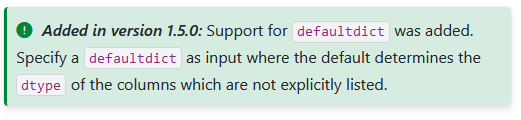
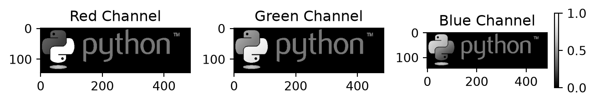
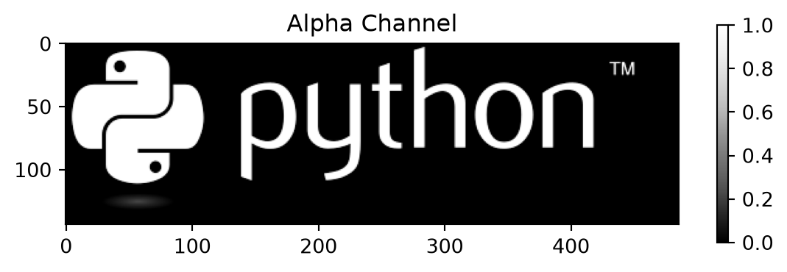

print( *( eyes := [6, 2, 1, 2] ) )
print(f"The dice result at index position 2 is: {eyes[2]}")6 2 1 2
The dice result at index position 2 is: 1In 2016, a study found that one-fifth of all scientific articles in the field of genetics were based on data distorted by the spreadsheet software Excel (Ziemann et al. 2016). Gene names such as “MARCH1” were mistakenly converted into date formats. In 2021, this estimate of affected papers was even raised to 30 percent. (heise online)
At the beginning of computer-based data analysis lies the task of reading data from files. In practice, reading data is anything but trivial. Data are stored in a variety of file formats. Therefore, in data analysis, it is essential to handle different file types: from small text files just a few kilobytes in size, to open and proprietary formats from common office applications, to files several hundred megabytes large in formats specifically developed for scientific data exchange. Programming languages such as Python and R provide various tools for reading, processing, and saving different file formats. Specialized packages further extend this toolbox.
However, the practical challenges of data analysis are not limited to technical aspects. Often, the internal structure of datasets poses the greatest difficulties. An important part of reading structured datasets involves searching for and, if necessary, cleaning errors in the dataset. Dasu and Johnson write:
“Unfortunately, the data set is usually dirty, composed of many tables, and has unknown properties. Before any results can be produced, the data must be cleaned and explored—often a long and difficult task. […] In our experience, the tasks of exploratory data mining and data cleaning constitute 80% of the effort that determines 80% of the value of the ultimate data mining results.” (Dasu and Johnson (2003), p. ix)
Reading structured datasets therefore includes the entire process of technical file access, organization, error detection and correction, and storing the data in a form suitable for further processing.
In practical data analysis, two simple tips can help when reading structured datasets:
Look at your data before reading it into Python! A simple text editor or a spreadsheet application is sufficient (be mindful of automatic detection and conversion of date formats). A quick glance helps you identify the delimiters, thousands separators, date formats, missing value encodings, and Unicode encoding (such as UTF-8) used in your data.
However, this is not always possible—for example, if your dataset contains hundreds of columns and tens of thousands of rows. This module therefore provides the tools to read datasets using only the means available in Python.
It is not necessary to memorize all the details of the packages and functions presented here. The topic is too complex, and the behavior of functions often changes as the programming language evolves. The special features of the functions presented here serve as mental anchors to help you troubleshoot issues in practice.
Use the documentation! This way, you get a complete overview of default and optional parameters. You can also spot changes in program behavior and avoid unexpected errors.


Before diving into the practical challenges of reading structured datasets, we will first look at some key characteristics of datasets to build a basic understanding of terminology and learn how to handle Python’s built-in tools. At the end of this chapter, we introduce tidy data—a fundamental concept for organizing datasets.
A dataset is a collection of related data. Datasets contain values associated with one or more variables. Every dataset has a technical format, a structure, at least one variable, and at least one value.
The technical format of a dataset determines how data can be read, processed, and stored. Some examples include:
Printed material, e.g., phone book: data like names and phone numbers must be read manually, edited irreversibly with a pen
Punch card, e.g., parking ticket: a reader recognizes the holes and grants one free hour; edited irreversibly with a punch tool
Text file, e.g., population by federal states: can be read, processed, and stored with various computer programs such as text editors, spreadsheets, or programming environments
Hierarchical Data Format (HDF5), e.g., spatial lightning density data: requires specialized software or packages
Datasets store data in a defined n-dimensional structure.

slicing by Marc Fehr is licensed under CC-BY-4.0 and available on GitHub. 2024
The simplest form of dataset assigns values to a single variable. One-dimensional datasets containing values of the same type (e.g., numbers) are called vectors. One-dimensional datasets that can contain different data types are called lists. One-dimensional datasets have only one axis: the index, which can be used to access elements.

slicing by Marc Fehr is licensed under CC-BY-4.0 and available on GitHub. The graphic was cropped to show only the relevant part and the top label removed. 2024
Examples of one-dimensional datasets include a shopping list or the raw list of dice roll results. Using the index, you can, for example, output the dice result at index position 2.
print( *( eyes := [6, 2, 1, 2] ) )
print(f"The dice result at index position 2 is: {eyes[2]}")6 2 1 2
The dice result at index position 2 is: 1At this point, let’s briefly revisit content from the Python Fundamentals module:
Python’s base accesses files via file objects. You have already learned about these functions and methods in the Python module. Accessing files through Python’s base functionality is a reliable fallback option and also useful for determining a file’s encoding.
os.getcwd() from the os module returns the current working directory. You can change it with os.cwd(path).open(filepath, mode = 'r') opens a file in read mode and returns a file object.file_object.name, os.path.basename(file_object.name), file_object.closed, file_object.mode, file_object.encodingfile_object.read(), file_object.readline(), file_object.readlines(), or the function list(file_object).file_object.close() closes the file and releases it for use by other programs.Read the file “python.txt” located in the path “skript/01-daten/”.
Determine the file’s encoding.
Remove the first line from the text and output the remaining text using Python.
How can the text be displayed correctly?
filepath = "01-daten/" + "python.txt"
file_object = open(filepath, mode = 'r')
# Determine the file encoding
print(f"The file encoding is: {file_object.encoding}")
# Output text
text_as_list = list(file_object)
for i in range(1, len(text_as_list)):
print(text_as_list[i])
# Close the file
file_object.close()The file encoding is: UTF-8
Python ist eine universell nutzbare, üblicherweise interpretierte, höhere Programmiersprache.[14] Sie hat den Anspruch, einen gut lesbaren, knappen Programmierstil zu fördern.[15] So werden beispielsweise Blöcke nicht durch geschweifte Klammern, sondern durch Einrückungen strukturiert.
Python wurde mit dem Ziel größter Einfachheit und Übersichtlichkeit entworfen. Dies wird vor allem durch zwei Maßnahmen erreicht. Zum einen kommt die Sprache mit relativ wenigen Schlüsselwörtern aus.[49] Zum anderen ist die Syntax reduziert und auf Übersichtlichkeit optimiert. Dadurch lassen sich Python-basierte Skripte deutlich knapper formulieren als in anderen Sprachen.[50]
Van Rossum legte bei der Entwicklung großen Wert auf eine Standardbibliothek, die überschaubar und leicht erweiterbar ist. Dies war Ergebnis seiner schlechten Erfahrung mit der Sprache ABC, in der das Gegenteil der Fall ist.[51] Dieses Konzept ermöglicht, in Python Module aufzurufen, die in anderen Programmiersprachen geschrieben wurden, etwa um Schwächen von Python auszugleichen. Beispielsweise können für zeitkritische Teile in maschinennäheren Sprachen wie C implementierte Routinen aufgerufen werden.
Auszug aus https://de.wikipedia.org/wiki/Python_(Programmiersprache), abgerufen am 20.02.2025Select UTF-8 encoding.
# Choose UTF-8 encoding to support European special characters
file_object = open(filepath, mode = 'r', encoding = 'utf-8')
# Output text
text_as_list = list(file_object)
for i in range(1, len(text_as_list)):
print(text_as_list[i])
# Close the file
file_object.close()
Python ist eine universell nutzbare, üblicherweise interpretierte, höhere Programmiersprache.[14] Sie hat den Anspruch, einen gut lesbaren, knappen Programmierstil zu fördern.[15] So werden beispielsweise Blöcke nicht durch geschweifte Klammern, sondern durch Einrückungen strukturiert.
Python wurde mit dem Ziel größter Einfachheit und Übersichtlichkeit entworfen. Dies wird vor allem durch zwei Maßnahmen erreicht. Zum einen kommt die Sprache mit relativ wenigen Schlüsselwörtern aus.[49] Zum anderen ist die Syntax reduziert und auf Übersichtlichkeit optimiert. Dadurch lassen sich Python-basierte Skripte deutlich knapper formulieren als in anderen Sprachen.[50]
Van Rossum legte bei der Entwicklung großen Wert auf eine Standardbibliothek, die überschaubar und leicht erweiterbar ist. Dies war Ergebnis seiner schlechten Erfahrung mit der Sprache ABC, in der das Gegenteil der Fall ist.[51] Dieses Konzept ermöglicht, in Python Module aufzurufen, die in anderen Programmiersprachen geschrieben wurden, etwa um Schwächen von Python auszugleichen. Beispielsweise können für zeitkritische Teile in maschinennäheren Sprachen wie C implementierte Routinen aufgerufen werden.
Auszug aus https://de.wikipedia.org/wiki/Python_(Programmiersprache), abgerufen am 20.02.2025Two-dimensional datasets organize values in a matrix or a data frame consisting of rows and columns. A matrix contains only one data type (e.g., numbers), while a data frame can contain different data types (e.g., numbers and boolean values). In Python, the Pandas module provides the DataFrame structure (see Pandas Fundamentals module).

slicing by Marc Fehr is licensed under CC-BY-4.0 and available on GitHub. The graphic was cropped to show only the relevant part and the top label removed. 2024
Typically, in two-dimensional datasets, each column represents a variable and each row represents an observation. Variables store all values of a feature, for example, dice results. Observations store all measured values for one observation unit, e.g., a person. (Wickham 2014, 3)
import pandas as pd
measurement1 = pd.DataFrame({
'Name': ['Hans', 'Elke', 'Jean', 'Maya'],
'Birthday': ['26.02.', '14.03.', '30.12.', '07.09.'],
'Dice Color': ['pink', 'pink', 'blue', 'yellow'],
'Sum of Eyes': [17, 12, 8, 23]
})
measurement1| Name | Birthday | Dice Color | Sum of Eyes | |
|---|---|---|---|---|
| 0 | Hans | 26.02. | pink | 17 |
| 1 | Elke | 14.03. | pink | 12 |
| 2 | Jean | 30.12. | blue | 8 |
| 3 | Maya | 07.09. | yellow | 23 |
By specifying the indices along axis 0 (rows) and axis 1 (columns), you can output the sum of dice eyes for a person.
print(f"Jean rolled {measurement1.iloc[2, 3]} eyes")Jean rolled 8 eyesIt is also possible to first select a column and then access the value at a specific index, as with a one-dimensional dataset. This is called chained indexing.
print(f"Jean rolled {measurement1['Sum of Eyes'][2]} eyes")Jean rolled 8 eyesChained indexing in Pandas may either create a copy of the object or access the object’s memory directly, depending on the context. With Pandas 3.0, chained indexing will no longer be supported, and creating a copy will become the default. More information can be found at the linked reference.
“Whether a copy or a reference is returned for a setting operation may depend on the context. This is sometimes called chained assignment and should be avoided. See Returning a View versus Copy.”
Two-dimensional datasets are usually represented as a matrix of rows and columns. Values for the variables organized in columns are assigned to the observations entered row-wise. This way of representing data is called the wide format: each additional measured variable makes the dataset wider.
Another way to organize and think about data is the long format. Some programs and packages require or at least benefit from data in long format, for example when creating plots. Let’s first look at the dataset measurement1 again in wide format. What are the observation units? Which variables were recorded?
| Name | Birthday | Dice Color | Sum of Eyes | |
|---|---|---|---|---|
| 0 | Hans | 26.02. | pink | 17 |
| 1 | Elke | 14.03. | pink | 12 |
| 2 | Jean | 30.12. | blue | 8 |
| 3 | Maya | 07.09. | yellow | 23 |
You might assume that the observation units are Hans, Elke, Jean, and Maya, and that the variables are Birthday, Dice Color, and Sum of Eyes. However, it is also possible that the observation unit is Person, encoded as 0, 1, 2, and 3 (the row index of the dataset), and that the column Name is one of the recorded variables. Similarly, there could be only two variables, Dice Color and Sum of Eyes, while the columns Name and Birthday encode the observed individuals. Imagine there is a second person named Hans. In that case, the dice results for individuals named Hans can only be correctly assigned using the Birthday, e.g., 26.02. or 11.11.
measurement1 = pd.DataFrame({
'Name': ['Hans', 'Elke', 'Jean', 'Maya', 'Hans'],
'Birthday': ['26.02.', '14.03.', '30.12.', '07.09.', '11.11.'],
'Dice Color': ['pink', 'pink', 'blue', 'yellow', 'pink'],
'Sum of Eyes': [12, 17, 8, 23, 7]
})
measurement1| Name | Birthday | Dice Color | Sum of Eyes | |
|---|---|---|---|---|
| 0 | Hans | 26.02. | pink | 12 |
| 1 | Elke | 14.03. | pink | 17 |
| 2 | Jean | 30.12. | blue | 8 |
| 3 | Maya | 07.09. | yellow | 23 |
| 4 | Hans | 11.11. | pink | 7 |
The long format makes these considerations explicit by distinguishing between identification variables (id variables) and measured variables (measure variables or value vars). Transforming a dataset from wide format to long format is called melting. The Pandas module provides the function pd.melt(frame, id_vars=None). It expects a DataFrame, and the optional argument id_vars specifies which columns are the identification variables.
measurement1_long = pd.melt(measurement1, id_vars = ['Name', 'Birthday'])
measurement1_long| Name | Birthday | variable | value | |
|---|---|---|---|---|
| 0 | Hans | 26.02. | Dice Color | pink |
| 1 | Elke | 14.03. | Dice Color | pink |
| 2 | Jean | 30.12. | Dice Color | blue |
| 3 | Maya | 07.09. | Dice Color | yellow |
| 4 | Hans | 11.11. | Dice Color | pink |
| 5 | Hans | 26.02. | Sum of Eyes | 12 |
| 6 | Elke | 14.03. | Sum of Eyes | 17 |
| 7 | Jean | 30.12. | Sum of Eyes | 8 |
| 8 | Maya | 07.09. | Sum of Eyes | 23 |
| 9 | Hans | 11.11. | Sum of Eyes | 7 |
In long format, the measured variables are listed in the column variable, and their values are stored in the column value. Each additional measured variable makes the dataset longer.
If you think through the distinction between identification and measured variables, the variable name itself can be considered an identification variable for the value in the value column. A dataset can be understood as a structure that has exactly one measured variable, value, and a number of identification variables. This can be represented in long format as follows:
measurement1_all_id = pd.melt(measurement1, id_vars = ['Name', 'Birthday', 'Dice Color'])
measurement1_all_idIn this representation, for example, the first value 12 is identified by Name = Hans, Birthday = 26.02., Dice Color = pink, and variable = Sum of Eyes.
| Name | Birthday | Dice Color | variable | value | |
|---|---|---|---|---|---|
| 0 | Hans | 26.02. | pink | Sum of Eyes | 12 |
| 1 | Elke | 14.03. | pink | Sum of Eyes | 17 |
| 2 | Jean | 30.12. | blue | Sum of Eyes | 8 |
| 3 | Maya | 07.09. | yellow | Sum of Eyes | 23 |
| 4 | Hans | 11.11. | pink | Sum of Eyes | 7 |

Much wow. Such architecture. by Dmitry Kudryavtsev is available at https://yieldcode.blog/post/bloat-in-software-engineering/. The image will likely be removed again.
What happens if the variable Sum of Eyes is also passed to the id_vars argument?
The command measurement1_all_id = pd.melt(measurement1, id_vars = ['Name', 'Birthday', 'Dice Color', 'Sum of Eyes']) produces an empty DataFrame because no measured values remain.
The reverse case is also possible: if no id_vars are specified during melting, all columns are treated as measured variables.
measurement1_no_id = pd.melt(measurement1)
measurement1_no_id| variable | value | |
|---|---|---|
| 0 | Name | Hans |
| 1 | Name | Elke |
| 2 | Name | Jean |
| 3 | Name | Maya |
| 4 | Name | Hans |
| 5 | Birthday | 26.02. |
| 6 | Birthday | 14.03. |
| 7 | Birthday | 30.12. |
| 8 | Birthday | 07.09. |
| 9 | Birthday | 11.11. |
| 10 | Dice Color | pink |
| 11 | Dice Color | pink |
| 12 | Dice Color | blue |
| 13 | Dice Color | yellow |
| 14 | Dice Color | pink |
| 15 | Sum of Eyes | 12 |
| 16 | Sum of Eyes | 17 |
| 17 | Sum of Eyes | 8 |
| 18 | Sum of Eyes | 23 |
| 19 | Sum of Eyes | 7 |
The reverse operation of melting is called casting or pivoting. Here, a dataset in long format is converted back to wide format. The Pandas function pd.pivot(data, columns, index) takes a melted DataFrame and converts it using the unique values in columns (the column names of the wide-format DataFrame) and the unique values in index (the row index of the wide-format DataFrame). If no column is provided for index, the existing index of the melted DataFrame is used (which, with 20 rows, is of course too long). Since the object measurement1_no_id does not have a suitable index column, one must be created before casting. This can be done with the method measurement1_no_id.groupby('variable').cumcount(), which counts the occurrence of each value in the specified column starting at 0. (Directly replacing the index is not possible in this way, because the index passed to pd.pivot(data, columns, index) must not contain duplicates.)
# pd.pivot() requires an index or uses the existing index of the melted_df, which is too long
# Therefore, insert an additional column in measurement1_no_id
## simple: measurement1_no_id['new_index'] = list(range(0, 5)) * 4
## general: measurement1_no_id['new_index'] = measurement1_no_id.groupby('variable').cumcount()
# Insert new_index column
measurement1_no_id['new_index'] = measurement1_no_id.groupby('variable').cumcount()
print(f"The long-format dataset with additional column new_index:\n{measurement1_no_id}")
# casting
measurement1_cast = pd.pivot(measurement1_no_id, index='new_index', columns='variable', values='value')
print(f"\nThe dataset in wide format:\n{measurement1_cast}")The long-format dataset with additional column new_index:
variable value new_index
0 Name Hans 0
1 Name Elke 1
2 Name Jean 2
3 Name Maya 3
4 Name Hans 4
5 Birthday 26.02. 0
6 Birthday 14.03. 1
7 Birthday 30.12. 2
8 Birthday 07.09. 3
9 Birthday 11.11. 4
10 Dice Color pink 0
11 Dice Color pink 1
12 Dice Color blue 2
13 Dice Color yellow 3
14 Dice Color pink 4
15 Sum of Eyes 12 0
16 Sum of Eyes 17 1
17 Sum of Eyes 8 2
18 Sum of Eyes 23 3
19 Sum of Eyes 7 4
The dataset in wide format:
variable Birthday Dice Color Name Sum of Eyes
new_index
0 26.02. pink Hans 12
1 14.03. pink Elke 17
2 30.12. blue Jean 8
3 07.09. yellow Maya 23
4 11.11. pink Hans 7The result still does not match the original wide-format dataset. To restore the original format, the columns must be reordered, and the index and its label must be reset.
# Reorder columns and reset index
measurement1_cast = measurement1_cast[['Name', 'Birthday', 'Dice Color', 'Sum of Eyes']]
measurement1_cast.reset_index(drop=True, inplace=True)
measurement1_cast.rename_axis(None, axis=1, inplace=True)
print(f"\nThe dataset in wide format with reset index:\n\n{measurement1_cast}")
The dataset in wide format with reset index:
Name Birthday Dice Color Sum of Eyes
0 Hans 26.02. pink 12
1 Elke 14.03. pink 17
2 Jean 30.12. blue 8
3 Maya 07.09. yellow 23
4 Hans 11.11. pink 7Even when working with wide-format datasets, distinguishing between identification and measured variables is useful for organizing data. see 2.6
Above, the object measurement1_long was created using the command measurement1_long = pd.melt(measurement1, id_vars = ['Name', 'Birthday']).
Use the function pd.DataFrame.pivot() to transform the dataset measurement1 back into wide format.
| Name | Birthday | variable | value | |
|---|---|---|---|---|
| 0 | Hans | 26.02. | Dice Color | pink |
| 1 | Elke | 14.03. | Dice Color | pink |
| 2 | Jean | 30.12. | Dice Color | blue |
| 3 | Maya | 07.09. | Dice Color | yellow |
| 4 | Hans | 11.11. | Dice Color | pink |
| 5 | Hans | 26.02. | Sum of Eyes | 12 |
| 6 | Elke | 14.03. | Sum of Eyes | 17 |
| 7 | Jean | 30.12. | Sum of Eyes | 8 |
| 8 | Maya | 07.09. | Sum of Eyes | 23 |
| 9 | Hans | 11.11. | Sum of Eyes | 7 |
# Insert new_index column
measurement1_long['new_index'] = measurement1_long.groupby('variable').cumcount()
# casting
measurement1_long_cast = pd.pivot(measurement1_long, index='new_index', columns='variable', values='value')
# Reorder columns and reset index
measurement1_long_cast = measurement1_cast[['Name', 'Birthday', 'Dice Color', 'Sum of Eyes']]
measurement1_long_cast.reset_index(drop=True, inplace=True)
measurement1_long_cast.rename_axis(None, axis=1, inplace=True)
measurement1_long_cast| Name | Birthday | Dice Color | Sum of Eyes | |
|---|---|---|---|---|
| 0 | Hans | 26.02. | pink | 12 |
| 1 | Elke | 14.03. | pink | 17 |
| 2 | Jean | 30.12. | blue | 8 |
| 3 | Maya | 07.09. | yellow | 23 |
| 4 | Hans | 11.11. | pink | 7 |
Three- or higher-dimensional datasets organize complex data structures in arrays. Arrays are n-dimensional data structures and therefore a general concept. For example, a list is a one-dimensional array, a matrix is a two-dimensional array, and an Excel file with multiple sheets for annually collected survey data is a three-dimensional array (sheets, rows, columns). Depending on the module used, arrays may contain one or multiple data types.

slicing by Marc Fehr is licensed under CC-BY-4.0 and available on GitHub. The graphic was cropped to show only the relevant part and the top label removed. 2024
For three- and higher-dimensional data structures, specialized data formats are often used, as discussed in section Chapter 7. This is partly because it makes it easier to process different data types and document them with metadata (see Section 2.5).
Optional: Excursus JSON https://docs.python.org/3/tutorial/inputoutput.html
Digital images are represented as three-dimensional datasets. Each pixel in the rows and columns has color values (Red, Green, Blue) and optionally an alpha channel (Red, Green, Blue, Alpha). The color values are either in the range 0–1 or 0–255 (8-bit).
# Color values for one pixel
[Red, Green, Blue]
# One image row with three pixels
[[Red, Green, Blue], [Red, Green, Blue], [Red, Green, Blue]]
# An image with three rows and three columns
[[[Red, Green, Blue], [Red, Green, Blue], [Red, Green, Blue]],
[[Red, Green, Blue], [Red, Green, Blue], [Red, Green, Blue]],
[[Red, Green, Blue], [Red, Green, Blue], [Red, Green, Blue]]]Image files can be read using the function plt.imread() from the matplotlib.pyplot module.
import matplotlib.pyplot as plt
logo = plt.imread(fname='00-bilder/python-logo-and-wordmark-cc0-tm.png')
plt.imshow(logo)
The Python logo by the Python Software Foundation is licensed under the GPLv3. The wordmark is trademarked: https://www.python.org/psf/trademarks/. The file is available on Wikimedia. 2008
The structure of the dataset can be accessed using the .shape attribute.
print(type(logo), "\n")
print(logo.shape)<class 'numpy.ndarray'>
(144, 486, 4)The data was read as a NumPy.ndarray. The logo has 144 rows, 486 columns, and is in the RGBA color space. A slice of the data looks like this:
print(logo[50:52, 50:52, :])[[[0.21568628 0.44705883 0.63529414 1. ]
[0.21568628 0.44705883 0.63529414 1. ]]
[[0.21568628 0.44705883 0.63529414 1. ]
[0.21176471 0.44313726 0.6313726 1. ]]]Using the index of the third dimension, the Red, Green, and Blue color channels can be selected and displayed individually with the function plt.imshow(cmap='Greys_r'). The argument cmap='Greys_r' instructs the function to use the inverted grayscale, so high color values appear light and low values dark. Display the Red, Green, and Blue channels of the Python logo individually using plt.imshow(cmap='Greys_r').
channels = ["Red Channel", "Green Channel", "Blue Channel"]
plt.figure(figsize=(9, 6))
for i in range(3):
plt.subplot(1, 4, i + 1)
plt.imshow(logo[:, :, i], cmap='Greys_r')
plt.title(label=channels[i])
plt.colorbar(shrink=0.15)
plt.tight_layout()
plt.show()
You might wonder why the image background appears black in each color channel. The explanation is in the next tip.
The image background has a value of 0 in all channels, including the alpha channel. This part of the image is therefore fully transparent and is filled in by the webpage background. As a result, the logo’s background appears white.
# Alpha channel
plt.imshow(logo[:, :, 3], cmap='Greys_r')
plt.title(label='Alpha Channel')
plt.colorbar(shrink=0.4)
plt.show()
# The first two rows and columns of the logo
print(logo[0:2, 0:2, :])
[[[0. 0. 0. 0.]
[0. 0. 0. 0.]]
[[0. 0. 0. 0.]
[0. 0. 0. 0.]]]The data type specifies how the values contained in a dataset are interpreted by Python. For example, the value “1” could represent a character, an integer, a Boolean value, the month January, or the level of a categorical variable. Python, as a versatile programming language, supports many data types that fall into the categories: numerics, sequences, mappings, classes, instances, and exceptions. More information can be found in the documentation.
![A categorization of standard types in Python. The categorization does not exactly match the categories listed in the documentation. The type None for null values has no further subdivision. The Numbers category is divided into integers (including Booleans), real numbers (floats), and complex numbers. The Sequences category is divided into immutable (Strings, Tuples, Bytes) and mutable (Lists, Byte Arrays). The Set Types category is divided into Sets and Frozen Sets. The Mappings category contains Dictionaries. The Callable category includes functions, methods, and classes. There is also the Module category.](00-bilder/python3-standard-type-hierarchy.png)
Python 3. The standard type hierarchy. by Максим Пе is licensed under CC BY SA 4.0 and available on Wikimedia. 2018
Modules add further data types. Commonly used data types in data analysis include:
The data type determines, on the one hand, the allowable range of values for a variable. For example, 0 and 13 are valid integers but not valid encodings for a month. On the other hand, the data type defines which operations are allowed on the values and how Python executes them. This applies to operators and functions. Python includes functions to determine and, if necessary, convert the data type of a value (see w-Python).
# The + operator adds numbers
print(1 + 13)
# The + operator also concatenates strings
print(str(1) + str(13))14
113The sorting function behaves differently depending on the data type.
# Create a list of date strings
dates = pd.Series(['07.06.2000', '12.01.2000', '11.02.2000', '04.09.2000', '10.03.2000', '03.10.2000', '09.04.2000', '08.05.2000', '06.07.2000', '05.08.2000', '02.11.2000', '01.12.2000'])
dates = pd.to_datetime(dates, format='%d.%m.%Y')
print(f"An unsorted list of month abbreviations:\n{list(dates.dt.strftime('%b'))}")
print(f"\nThe list sorted alphabetically:\n{sorted(list(dates.dt.strftime('%b')))}")
print(f"\nThe list sorted as datetime objects:\n{list(dates.sort_values().dt.strftime('%b'))}")An unsorted list of month abbreviations:
['Jun', 'Jan', 'Feb', 'Sep', 'Mar', 'Oct', 'Apr', 'May', 'Jul', 'Aug', 'Nov', 'Dec']
The list sorted alphabetically:
['Apr', 'Aug', 'Dec', 'Feb', 'Jan', 'Jul', 'Jun', 'Mar', 'May', 'Nov', 'Oct', 'Sep']
The list sorted as datetime objects:
['Jan', 'Feb', 'Mar', 'Apr', 'May', 'Jun', 'Jul', 'Aug', 'Sep', 'Oct', 'Nov', 'Dec']When reading datasets, it is important to verify that data types are correctly detected or to actively control them. Further methods for formally checking data types and validating value ranges are presented in Chapter 3.
A special data type is used to represent missing values. In Python, a distinction is made between non-existent and undefined values.
NoneThe so-called null value in Python is None, which is one of Python’s defined keywords.
print(type(None))<class 'NoneType'>None represents non-existent values and objects. Empty (but existing) objects do not belong to the None data type.
empty_list = []
empty_list == NoneFalseNone can be passed as an argument to functions or returned by them. However, operations with None are not allowed.
# Operations with None result in errors
try:
print(None + 1)
except TypeError as error:
print("The provided value causes the following error:\n", error)
else:
print(None + 1)The provided value causes the following error:
unsupported operand type(s) for +: 'NoneType' and 'int'One exception is conversion to a string.
# One exception is conversion to strings
a = None
print("\nprint(a) returns the null value:\n", a, sep="")
print("\nstr(a) returns a string:")
str(a)
print(a) returns the null value:
None
str(a) returns a string:'None'To work with missing values within a dataset, there is the value NaN, which belongs to the floating-point class. NaN stands for Not a Number and represents undefined or unrepresentable values. For example, the method pd.diff() calculates the difference between each value and its predecessor. Since the first value has no predecessor, NaN is produced.
my_series = pd.Series([1, 2, 4, 8])
my_series.diff()0 NaN
1 1.0
2 2.0
3 4.0
dtype: float64Unlike None, NaN is not a built-in keyword in Python. The value NaN can be created using float('nan') or float('NaN'); capitalization does not matter. NaN therefore has the data type float. The math and NumPy modules also provide math.nan and np.nan to create NaN.
print(type(float('NaN')))<class 'float'>Operations can be performed with the value NaN. The result is always NaN.
print(float('NaN') + 1)nanSome functions can handle NaN as a placeholder for missing values.
# Python built-ins
print("sum():", sum([1, 2, float('NaN'), 4]), "\n")
print("max():", max([1, 2, float('NaN'), 4]), "\n")
print("any():", any([1, 2, float('NaN'), 4]), "\n")
# Pandas
data_with_nan = pd.Series([1, 2, float('NaN'), 4])
print(data_with_nan + 1)
print("\nSum of the dataset:", data_with_nan.sum())sum(): nan
max(): 4
any(): True
0 2.0
1 3.0
2 NaN
3 5.0
dtype: float64
Sum of the dataset: 7.0The logical evaluation of missing values differs for None and NaN.
bool_values = [None, float('NaN')]
for element in bool_values:
bool_value = bool(element)
print("Boolean value of", element, "is", bool_value)Boolean value of None is False
Boolean value of nan is TrueThis also applies to value equality.
for element in bool_values:
result = element == element
print("Value equality of", element, "is", result)Value equality of None is True
Value equality of nan is FalseNone and NaN are Python-specific representations for non-existent or undefined values. In practice, missing values in datasets are indicated in various ways.
Common representations include:
no entry, e.g., an empty string "" in comma-separated files
defined string: NA in the R programming language, NULL in SQL, . in Stata
manually chosen values or digits outside the valid range such as -1, -88, -99 (often in survey data)
The choice of representation has pros and cons. A defined string for missing values helps distinguish gaps in the dataset from data collection errors. For this, a defined string like “NA” is better than an empty string. Manually chosen values allow assigning specific behavior to each variable during automated analysis (e.g., distinguishing not applicable, refused response, don’t know, interview terminated no reply).
Identifying and, if necessary, cleaning missing values is an important step when reading structured datasets. It helps to know common conventions for missing values and the conventions of the respective file format or discipline. Sometimes intuition is also necessary. Suitable functions for identifying missing values are presented in Chapter 3.
Metadata are descriptive information about a dataset. Metadata can specify, for example:
which data types a dataset contains,
coding schemes, scales, or minimum and maximum allowed values,
conditions under which the data were collected,
origin of the data,
relationships between variables and datasets,
copyright information and license notes.
(cf. The HDF Group Help Desk)
Specialized file formats like netCDF or HDF explicitly declare metadata in dedicated fields. Many file formats lack such functionality. Relevant metadata are often found in the file name, column headers, additional sheets, or separate documents (which may not always be available).
Before importing complex datasets, accompanying materials should be reviewed if available.
Datasets are often designed with various purposes, e.g., for convenient data entry. This often means datasets need extensive cleaning for script-based data analysis.
“Tidy datasets are all alike, but every messy dataset is messy in its own way.” (Wickham et al. 2023, chap. 5 Data tidying)
Tidy data is a system by Hadley Wickham that helps organize datasets into a clean (tidy) format. Cleaning datasets is a preparatory task to minimize time spent reshaping data structures during actual analysis, allowing a greater focus on the analytical content. (Wickham et al. 2023, chap. 5 Data tidying)
“The tidy data system consists of three rules:
Each variable is a column; each column is a variable.
Each observation is a row; each row is an observation.
Each value is a cell; each cell is a single value.”
(Wickham et al. 2023, chap. 5 Data tidying, translated)
Tidy data usually refers to two-dimensional datasets but also provides guidance for organizing datasets with different structures for analysis. Tidy data is not a strict rule; it is acceptable to use a different structure if it facilitates analysis.
The NumPy and Pandas modules allow efficient work with datasets. Reading and writing files and managing data types is much easier than with Python built-ins. Vectorized operations are often faster than equivalent Python operations. Pandas is built on top of NumPy. Both modules are discussed in the following sections.
A brief overview of pros and cons:
NumPy: n-dimensional array structure supporting the most commonly used data types and numerous numeric formats for specialized scientific calculations (see documentation). An array can only hold a single data type and its size is immutable. Operations are slightly faster than in Pandas DataFrames.
Pandas: 2-dimensional DataFrame structure in long and wide formats. DataFrames can hold multiple data types and their size is mutable. Supports alphanumeric column and index labels. Can read files directly from the internet.
Common abbreviations for both modules:
import numpy as np
import pandas as pd
# Set display precision for floats
pd.set_option("display.precision", 2)Whether you work with NumPy or Pandas depends on your dataset and personal preference.
The Pandas package allows you to load data from various sources such as CSV files or Excel sheets, supporting different data types, into a DataFrame. You can then inspect and restructure this data with just a few commands. Complex operations like reshaping datasets, grouping and aggregating data, as well as filtering and sorting, can be done efficiently.
Except for a few exceptions, Pandas and NumPy are compatible with each other. There is nothing preventing you from preparing your data with Pandas and then analyzing it with NumPy.
NumPy supports the following data types:
| NumPy Array Type | Python Data Type |
|---|---|
| int_ | int |
| double | float |
| cdouble | complex |
| bytes_ | bytes |
| str_ | str |
| bool_ | bool |
| datetime64 | datetime.datetime |
| timedelta64 | datetime.timedelta |
In most cases, the Pandas module uses NumPy data types. However, Pandas also introduces some additional data types. A complete list can be found in the Pandas Documentation. The most important additional data types are:
Categorical dtype = 'category'
Timezone-aware datetime dtype = 'datetime64[ns, US/Eastern]'
In the NumPy and Pandas learning modules, you have learned the functions to read and write files.
In NumPy, files can be read using np.loadtxt() and written using np.savetxt().
np.loadtxt(fname = data.txt, delimiter = ";", skiprows= #rows)
np.savetxt(fname = file_path, X = data, header = comment, fmt='%5.2f')
In Pandas, files are read and written using a set of specialized functions that follow a consistent naming scheme. Functions for reading files use the form pd.read_csv, and functions for writing use the form pd.to_csv. With Pandas, files from the internet can also be retrieved using pd.read_csv(URL).
| Format Type | Data Description | Reader | Writer |
|---|---|---|---|
| text | CSV | read_csv | to_csv |
| text | Fixed-Width Text File | read_fwf | NA |
| text | JSON | read_json | to_json |
| text | HTML | read_html | to_html |
| text | LaTeX | Styler.to_latex | NA |
| text | XML | read_xml | to_xml |
| text | Local clipboard | read_clipboard | to_clipboard |
| binary | MS Excel | read_excel | to_excel |
| binary | OpenDocument | read_excel | NA |
| binary | HDF5 Format | read_hdf | to_hdf |
| binary | Feather Format | read_feather | to_feather |
| binary | Parquet Format | read_parquet | to_parquet |
| binary | ORC Format | read_orc | to_orc |
| binary | Stata | read_stata | to_stata |
| binary | SAS | read_sas | NA |
| binary | SPSS | read_spss | NA |
| binary | Python Pickle Format | read_pickle | to_pickle |
| SQL | SQL | read_sql | to_sql |
As previously explained, the data type determines the allowed range of values for a variable, permissible operations, and the execution of operators and functions in Python. The NumPy and Pandas modules provide a range of functions to check and set the data type of variables.
Note: The datetime data type is covered in Chapter 4.
With NumPy, the data type of an array can be set when reading a file using the dtype argument np.loadtxt(fname = data.txt, dtype = 'float'). The dtype argument accepts a data type specification, keywords, or abbreviations. More information can be found in the NumPy Documentation.
| Data Type | Keyword | Abbreviation | dtype |
|---|---|---|---|
| Floating Point | float | f8 | float64 |
| Integer | int | i | int32 |
| Boolean | bool | ? | bool |
| Date | datetime64 | M | datetime64 |
| String | str | U | U + number to specify required bytes |
The data type of an array can be determined using the np.dtype attribute. The data type of an object can be changed using the method np.array = np.array.astype().
The following file is known to you from the w-NumPy learning module.
file_path = '01-daten/TC01.csv'
data = np.loadtxt(file_path)Check the dtype of the file and create a copy of the object with integer data type. How can you verify whether any decimal places were truncated during the conversion to integers?
# Display the data type
print(data.dtype)
# Convert to integer
data_int = data.astype('int')
# Check for data loss
check_sum = data - data_int
print(f"Difference data - data_int: {check_sum.sum()}")float64
Difference data - data_int: 664.0The Pandas module is specialized in handling different data types. You can pass the data type to the functions used for reading data with the dtype argument. For multiple columns, this can be done using a dictionary in the form {'column_name': 'dtype'}.
The attribute for displaying the data type is appropriately called pd.DataFrame.dtypes (note the appended ‘s’). The data type of a Pandas data object can be changed analogously to NumPy using pd.Series = pd.Series.astype().
In a group of 60 guinea pigs (1st column without a label), the length of odontoblast cells (tooth-forming cells) was measured in microns (len). The animals were previously given Vitamin C in the form of ascorbic acid (VC) or orange juice (OJ) (supp). The guinea pigs received doses of 0.5, 1, or 2 milligrams of Vitamin C per day (dose). The measurement data are stored in the file ToothGrowth.csv (Crampton 1947).
Crampton, E. W. 1947. “THE GROWTH OF THE ODONTOBLASTS OF THE INCISOR TOOTH AS A CRITERION OF THE VITAMIN C INTAKE OF THE GUINEA PIG”. The Journal of Nutrition 33 (5): 491–504. https://doi.org/10.1093/jn/33.5.491
Read the file as follows:
Replace the column label of the 1st column with ‘ID’ (without quotes).
Read the columns len and dose with appropriate numeric data types and the column supp as a categorical variable.
file_path = "01-daten/ToothGrowth.csv"
guinea_pigs = pd.read_csv(filepath_or_buffer = file_path, sep = ',', header = 0, \
names = ['ID', 'len', 'supp', 'dose'], dtype = {'ID': 'int', 'len': 'float', 'dose': 'float', 'supp': 'category'})
# Display every sixth value
guinea_pigs.iloc[guinea_pigs.index % 6 == 0]| ID | len | supp | dose | |
|---|---|---|---|---|
| 0 | 1 | 4.2 | VC | 0.5 |
| 6 | 7 | 11.2 | VC | 0.5 |
| 12 | 13 | 15.2 | VC | 1.0 |
| 18 | 19 | 18.8 | VC | 1.0 |
| 24 | 25 | 26.4 | VC | 2.0 |
| 30 | 31 | 15.2 | OJ | 0.5 |
| 36 | 37 | 8.2 | OJ | 0.5 |
| 42 | 43 | 23.6 | OJ | 1.0 |
| 48 | 49 | 14.5 | OJ | 1.0 |
| 54 | 55 | 24.8 | OJ | 2.0 |
print(guinea_pigs.dtypes)ID int64
len float64
supp category
dose float64
dtype: objectPandas provides several useful functions to describe the structure of a dataset.
The .columns attribute returns the column labels as a list. It can also be used to set column names.
print(guinea_pigs.columns)
guinea_pigs.columns = ['ID', 'Length', 'Supplement', 'Dose']
print(guinea_pigs.columns)Index(['ID', 'len', 'supp', 'dose'], dtype='str')
Index(['ID', 'Length', 'Supplement', 'Dose'], dtype='str')The method pd.DataFrame.describe() generates descriptive statistics for a DataFrame. By default, all numeric columns are included. Using the include argument, you can specify which columns to include. include='all' includes all columns, which is not always meaningful. Alternatively, you can pass a list of data types to include. The exclude argument works similarly to exclude certain data types from the output.
print(guinea_pigs.describe(), "\n")
print(guinea_pigs.describe(include = 'all'), "\n")
print(guinea_pigs.describe(include = ['float']), "\n") ID Length Dose
count 60.00 60.00 60.00
mean 30.50 18.81 1.17
std 17.46 7.65 0.63
min 1.00 4.20 0.50
25% 15.75 13.07 0.50
50% 30.50 19.25 1.00
75% 45.25 25.27 2.00
max 60.00 33.90 2.00
ID Length Supplement Dose
count 60.00 60.00 60 60.00
unique NaN NaN 2 NaN
top NaN NaN OJ NaN
freq NaN NaN 30 NaN
mean 30.50 18.81 NaN 1.17
std 17.46 7.65 NaN 0.63
min 1.00 4.20 NaN 0.50
25% 15.75 13.07 NaN 0.50
50% 30.50 19.25 NaN 1.00
75% 45.25 25.27 NaN 2.00
max 60.00 33.90 NaN 2.00
Length Dose
count 60.00 60.00
mean 18.81 1.17
std 7.65 0.63
min 4.20 0.50
25% 13.07 0.50
50% 19.25 1.00
75% 25.27 2.00
max 33.90 2.00
The method pd.DataFrame.count() counts all non-missing values in each column, or with pd.DataFrame.count(axis='columns') in each row.
guinea_pigs.count(axis='rows') # the default value of axis is 'rows'ID 60
Length 60
Supplement 60
Dose 60
dtype: int64The method pd.DataFrame.info() generates a summary of the dataset.
guinea_pigs.info()<class 'pandas.DataFrame'>
RangeIndex: 60 entries, 0 to 59
Data columns (total 4 columns):
# Column Non-Null Count Dtype
--- ------ -------------- -----
0 ID 60 non-null int64
1 Length 60 non-null float64
2 Supplement 60 non-null category
3 Dose 60 non-null float64
dtypes: category(1), float64(2), int64(1)
memory usage: 1.7 KBThe method pd.unique() lists all unique values.
guinea_pigs['Dose'].unique()array([0.5, 1. , 2. ])Pandas provides several useful functions to check a loaded file. Make it a habit to use pd.dtypes or pd.DataFrame.info().
The UK Department for Energy Security & Net Zero publishes data on industrial electricity prices in the member countries of the International Energy Agency.
Read the worksheet “5.3.1 (excl. taxes)” from the Excel file ‘skript/01-daten/table_531.xlsx’ using Pandas. Check the documentation for the function pd.read_excel to see how to select the correct sheet. Ensure that all columns are read with numeric data types.
Department for Energy Security & Net Zero. 2024. Energy Prices International Comparisons. Industrial electricity prices in the IEA. https://www.gov.uk/government/uploads/system/uploads/attachment_data/file/670121/table_531.xls
Skip the leading rows with the argument header=8. Select the worksheet with sheet_name="5.3.1 (excl. taxes)" and check the detected data types with taxes.dtypes.
file_path = '01-daten/table_531.xlsx'
taxes = pd.read_excel(io = file_path, sheet_name = "5.3.1 (excl. taxes)", \
header = 8)
taxes.dtypesYear int64
Austria float64
Belgium float64
Denmark float64
Finland float64
France float64
Germany float64
Greece float64
Ireland float64
Italy float64
Luxembourg float64
Netherlands float64
Portugal float64
Spain float64
Sweden float64
United Kingdom float64
Australia float64
Canada float64
Czech Republic float64
Hungary float64
Japan float64
Korea float64
New Zealand float64
Norway float64
Poland float64
Slovakia float64
Switzerland float64
Republic of Türkiye object
USA float64
IEA median float64
UK relative to IEA median% float64
UK relative to IEA rank int64
UK relative to G7 rank int64
dtype: objectView the values in the column ‘Republic of Türkiye’ using pd.unique().
taxes['Republic of Türkiye'].unique()array(['..', 2.0436081749999997, 3.3248584439999993, 3.2947581129644483,
3.5628243387317866, 3.998334312, 3.838962582401693,
4.2138469457789975, 3.775503630575527, 3.2804905218375238,
3.783413840344277, 4.139259596071514, 4.196890742949158,
4.658509330911754, 5.552842625063031, 4.316920402166109,
4.1586205264300675, 4.765321921741988, 4.060617948410105,
3.9191433658651307, 4.223710389549368, 4.481407237836746,
4.629981488840797, 5.2657882806931235, 5.109009847145703,
4.585007793872617, 4.769921255774284, 4.419433670846949,
4.428906151745361, 6.171573537217762, 7.192920543071899,
7.962417550086158, 7.035941949054445, 7.622058781522502,
7.644892388451444, 6.47006818181818, 5.968380462724936,
6.379514692256784, 5.537541821623266, 5.248709303933227,
6.9100519994521274, 6.670900808798327, 5.864171132090749,
13.928251887312259, 11.123594768114717], dtype=object)Remove the string ‘..’ and change the data type using the method pd.astype('float64').
Option 1: declare it as a missing value when reading the file.
Option 2: determine the index position after reading and replace the value. The chained slicing df["col"][row_indexer] = value is no longer supported in Pandas version 3.0 and will raise an error. Use the following syntax instead: df.loc[row_indexer, "col"] = value.
# Option 1: '..' declared as a missing value
# taxes = pd.read_excel(io = file_path, sheet_name = "5.3.1 (excl. taxes)", \
# header = 8, na_values = ['..'])
# Option 2: find the index of the value and overwrite with np.nan
index_position = taxes['Republic of Türkiye'] == '..'
taxes.loc[index_position, 'Republic of Türkiye'] = np.nan
taxes['Republic of Türkiye'] = taxes['Republic of Türkiye'].astype('float64')
taxes.dtypesYear int64
Austria float64
Belgium float64
Denmark float64
Finland float64
France float64
Germany float64
Greece float64
Ireland float64
Italy float64
Luxembourg float64
Netherlands float64
Portugal float64
Spain float64
Sweden float64
United Kingdom float64
Australia float64
Canada float64
Czech Republic float64
Hungary float64
Japan float64
Korea float64
New Zealand float64
Norway float64
Poland float64
Slovakia float64
Switzerland float64
Republic of Türkiye float64
USA float64
IEA median float64
UK relative to IEA median% float64
UK relative to IEA rank int64
UK relative to G7 rank int64
dtype: objectA column unexpectedly read as a string or object often indicates missing values, usually marked by special characters. The NumPy and Pandas modules provide functions to detect and convert missing values during data import.
Note: Masked NumPy arrays are covered in Chapter 6.
The NumPy function np.loadtxt() is used to read complete datasets. Missing values in the dataset can be problematic because they may either cause data type errors or be skipped, resulting in a NumPy array shorter than the original dataset. Since NumPy arrays always have a single data type and fixed length, this can lead to errors when performing operations with multiple arrays.
The following file is known to you from the w-NumPy exercises.
file_path = '01-daten/TC01.csv'
data_no_missing = np.loadtxt(file_path)
print("Data:", data_no_missing)
print("Shape:", data_no_missing.shape, "dtype:", data_no_missing.dtype)Data: [20.1 20.1 20.1 ... 24.3 24.2 24.2]
Shape: (1513,) dtype: float64Suppose you conducted a second measurement and want to calculate the difference between the two datasets. In the second measurement, sensor errors led to missing values, marked with --. However, the function np.loadtxt() cannot handle missing values and will return an error.
file_path = '01-daten/TC01_double_hyphen.csv'
try:
data_double_hyphen = np.loadtxt(file_path)
except ValueError as error:
print("The input causes the following error:\n", error)
else:
print("Data with missing values '--':", data_double_hyphen, "dtype:", data_double_hyphen.dtype)The input causes the following error:
could not convert string '--' to float64 at row 1, column 1.To read datasets with missing values, the function np.genfromtxt(fname, delimiter=None, missing_values=None, filling_values=None) is used. This function processes the dataset fname in two loops, which makes it slower than np.loadtxt(). The first loop splits the dataset line by line at the optional delimiter into strings. The second loop converts each string to the appropriate data type. With the optional arguments missing_values and filling_values, you can specify which strings indicate missing values and what they should be replaced with. (NumPy Documentation)
file_path = '01-daten/TC01_double_hyphen.csv'
data_double_hyphen = np.genfromtxt(file_path, missing_values='--', filling_values=np.nan)
print("\nData with missing values '--':", data_double_hyphen)
print("Shape:", data_double_hyphen.shape, "dtype:", data_double_hyphen.dtype)
Data with missing values '--': [20.1 nan 20.1 ... 24.3 24.2 24.2]
Shape: (1513,) dtype: float64By converting missing values to nan, operations with equally sized NumPy arrays become possible.
data_difference = data_no_missing - data_double_hyphen
print(data_difference)[ 0. nan 0. ... 0. 0. 0.]The function np.genfromtxt() can handle any string as a missing value. Only empty cells can be problematic, as their content '\n' is interpreted as a line break.
If a file contains empty cells, they cannot be read because they are automatically skipped.
# File without missing value markers
file_path = '01-daten/TC01_empty_lines.csv'
data_empty_lines = np.genfromtxt(file_path, missing_values='', filling_values=np.nan)
print("\nData with missing values '':", data_empty_lines)
print("Shape:", data_empty_lines.shape, "dtype:", data_empty_lines.dtype)
Data with missing values '': [20.1 20.1 20.1 ... 24.3 24.2 24.2]
Shape: (1511,) dtype: float64The array is two elements shorter. Subtracting it from a longer NumPy array fails with an error.
try:
result = data_no_missing - data_empty_lines
except ValueError as error:
print("The input causes the following error:\n", error)
else:
print(result)The input causes the following error:
operands could not be broadcast together with shapes (1513,) (1511,) In this case, you need to resort to Python’s basic string processing. The processed list can then be read using np.genfromtxt() as usual.
# Read the data via file object
data_file_empty_lines = open(file_path, 'r', encoding='utf-8')
data_empty_lines = data_file_empty_lines.readlines()
data_file_empty_lines.close()
print("Read data object (excerpt):\n", data_empty_lines[0:10])
# String processing with replace('\n', '')
for i in range(len(data_empty_lines)):
if data_empty_lines[i] == '\n':
data_empty_lines[i] = 'placeholder'
else:
data_empty_lines[i] = data_empty_lines[i].replace('\n', '')
print("\nAfter string processing (excerpt):\n", data_empty_lines[0:10])
# Read using np.genfromtxt
data_empty_lines = np.genfromtxt(data_empty_lines, missing_values='placeholder', filling_values=np.nan)
print("\nData with missing values '':", data_empty_lines)
print("Shape:", data_empty_lines.shape, "dtype:", data_empty_lines.dtype)Read data object (excerpt):
['# Temperatur in C\n', '20.1\n', '\n', '20.1\n', '20.1\n', '20.1\n', '\n', '20.1\n', '20.1\n', '20.1\n']
After string processing (excerpt):
['# Temperatur in C', '20.1', 'placeholder', '20.1', '20.1', '20.1', 'placeholder', '20.1', '20.1', '20.1']
Data with missing values '': [20.1 nan 20.1 ... 24.3 24.2 24.2]
Shape: (1513,) dtype: float64Especially for files with multiple columns, empty cells can quickly cause errors. Here it is necessary to specify the delimiter using the delimiter argument. From the documentation:
“When spaces are used as delimiters, or when no delimiter has been given as input, there should not be any missing data between two fields.” (NumPy Documentation)
Without specifying the delimiter argument, only one column is read, which contains only np.nan.
# without specifying delimiter
file_path = '01-daten/TC01_missing_values_multi_column.csv'
data_empty_lines2 = np.genfromtxt(file_path, missing_values='', filling_values=np.nan, ndmin=2)
print("Shape:", data_empty_lines2.shape, "dtype:", data_empty_lines2.dtype)
print("First three rows:\n", data_empty_lines2[0:3])Shape: (1513, 1) dtype: float64
First three rows:
[[nan]
[nan]
[nan]]If the argument delimiter=',' is passed, the file is read correctly.
# specifying the delimiter
data_empty_lines2 = np.genfromtxt(file_path, delimiter=',', missing_values='', filling_values=np.nan, ndmin=2)
print("Shape:", data_empty_lines2.shape, "dtype:", data_empty_lines2.dtype)
print("\nData with missing values '':\n", data_empty_lines2)Shape: (1513, 2) dtype: float64
Data with missing values '':
[[20.1 20.1]
[ nan nan]
[20.1 20.1]
...
[24.3 24.3]
[24.2 24.2]
[24.2 24.2]]The NumPy module provides functions to work with missing values.
np.nan creates a missing value.
np.isnan() checks for a missing value and returns a boolean or a NumPy array with dtype bool.
np.nonzero(np.isnan(array)) returns a tuple containing an array of the index positions of elements with the value nan. You can access the array with np.nonzero(np.isnan(array))[0]. Depending on the situation, converting it to a list can be useful: np.nonzero(np.isnan(array))[0].tolist().
A similar function is np.argwhere(np.isnan(array)), but its output is not suitable for slicing multidimensional arrays (see the example below).
Another function to determine the index position of a value is np.argwhere(). Calling np.argwhere(np.isnan(array)) returns a NumPy array with the index positions of elements with the value nan.
array = np.array([[1, np.nan, np.nan], [4, 5, np.nan]])
print(array)
np.argwhere(np.isnan(array))[[ 1. nan nan]
[ 4. 5. nan]]array([[0, 1],
[0, 2],
[1, 2]])However, the array produced by np.argwhere() is not suitable for selecting array slices.
try:
array[np.argwhere(np.isnan(array))]
except IndexError as error:
print("The input causes the following error:\n", error)
else:
print(array[np.argwhere(np.isnan(array))])The input causes the following error:
index 2 is out of bounds for axis 0 with size 2For comparison with np.nonzero()
try:
array[np.nonzero(np.isnan(array))]
except IndexError as error:
print("The input causes the following error:\n", error)
else:
print(array[np.nonzero(np.isnan(array))])[nan nan nan]Selecting array slices with np.argwhere() works for one-dimensional arrays.
array = np.array([1, np.nan, np.nan, 4, 5])
try:
array[np.argwhere(np.isnan(array))]
except IndexError as error:
print("The input causes the following error:\n", error)
else:
print(array[np.argwhere(np.isnan(array))])[[nan]
[nan]]nan_to_num(x = array, nan = 0.0) replaces nan values in the array x with 0.0 or with the value provided in the nan argument. (Note: nan_to_num() also replaces np.inf with large positive numbers and -np.inf with large negative numbers by default.)Replacing specific values can also be achieved by selecting certain array elements using a logical (boolean) vector.
a = np.array([1, 2, 3, np.nan, 5, 6, np.nan])
b = np.isnan(a)
print(b)
a[b] = 0
print(a)[False False False True False False True]
[1. 2. 3. 0. 5. 6. 0.]Multiple conditions can be combined using the function np.logical_or(x1, x2) as a logical OR.
a = np.array([1, 2, 3, np.nan, 5, 6, np.nan])
condition1 = np.isnan(a)
condition2 = a >= 5
condition = np.logical_or(condition1, condition2)
a[condition] = 0
print(a)[1. 2. 3. 0. 0. 0. 0.]A logical AND is also possible (although it doesn’t make much sense when used with np.nan).
The * operator works the same way as the logical operator and or the function np.logical_and(x1, x2).
a = np.array([1, 2, 3, np.nan, 5, 6, np.nan])
condition1 = a < 4
condition2 = a >= 1
condition = condition1 * condition2
a[condition] = 0
print(a)[ 0. 0. 0. nan 5. 6. nan]np.delete(arr = array, obj) returns a new (shorter) array without the array elements specified in the parameter obj.nan can be deleted like this: np.delete(array, obj = np.nonzero(np.isnan(array)))NumPy does not automatically convert None to nan. Therefore, NumPy cannot determine the data type of the object and outputs dtype=object:
np_array_with_none = np.array([1, 2, None, 4])
print(np_array_with_none, np_array_with_none.dtype)[1 2 None 4] objectExercise: How can None in the array np_array_with_none be replaced with np.nan?
A logical comparison with None is possible. In this way, a boolean array can be created and used to select the index positions whose values should be replaced.
np_array_with_none = np.array([1, 2, None, 4])
print(np_array_with_none)
np_array_with_nan = np_array_with_none.copy()
print(f"\nArray with logical comparison to None:\n{np_array_with_none == None}")
np_array_with_nan[np_array_with_none == None] = np.nan
print(f"\nArray with None replaced by nan:\n{np_array_with_nan, np_array_with_nan.dtype}")[1 2 None 4]
Array with logical comparison to None:
[False False True False]
Array with None replaced by nan:
(array([1, 2, nan, 4], dtype=object), dtype('O'))
Operations involving nan always result in nan. Therefore, NumPy provides many functions that automatically ignore nan values or replace them with an appropriate value.
These functions can be easily recognized by their names.
For example, np.nansum() and np.nancumsum() return the sum and cumulative sum of an array, respectively.
In the cumulative sum, nan values are replaced by the running total.
A complete list of NumPy functions can be found in the documentation.
print(f"Array with nan:\n{np_array_with_nan}\n")
print(f"Sum of the array:\n{np.sum(np_array_with_nan)}\n")
print(f"nan-sum of the array:\n{np.nansum(np_array_with_nan)}\n")
print(f"Cumulative sum of the array:\n{np.cumsum(np_array_with_nan)}\n")
print(f"Cumulative nan-sum of the array:\n{np.nancumsum(np_array_with_nan)}\n")Array with nan:
[1 2 nan 4]
Sum of the array:
nan
nan-sum of the array:
7
Cumulative sum of the array:
[1 3 nan nan]
Cumulative nan-sum of the array:
[1 3 3 7]
The Pandas functions for reading files can handle missing values.
By default, the following values are recognized as missing:
['-1.#IND', '1.#QNAN', '1.#IND', '-1.#QNAN', '#N/A N/A', '#N/A', 'N/A', 'n/a', 'NA', '<NA>', '#NA', 'NULL', 'null', 'NaN', '-NaN', 'nan', '-nan', 'None', '']
Additional values can be defined as missing using the argument na_values = [].
With the argument keep_default_na = False, you can specify that only the values passed in na_values = [] should be interpreted as missing.
By default, the argument na_filter = True ensures that empty cells are also read as NA.
Completely empty rows, however, are skipped by default.
This can be changed with the argument skip_blank_lines = False.
(Pandas documentation)
file_path = '01-daten/TC01_double_hyphen.csv'
try:
data_double_hyphen = pd.read_csv(file_path, na_values = ['--'])
except ValueError as error:
print("The input results in the following error message:\n", error)
else:
print("Data with missing values '--':\n", data_double_hyphen, data_double_hyphen.shape) Data with missing values '--':
# Temperatur in C
0 20.1
1 NaN
2 20.1
3 20.1
4 20.1
... ...
1508 24.3
1509 24.3
1510 24.3
1511 24.2
1512 24.2
[1513 rows x 1 columns] (1513, 1)With the argument skip_blank_lines = False, empty rows are also read in.
file_path = '01-daten/TC01_empty_lines.csv'
try:
data_empty_lines = pd.read_csv(file_path, skip_blank_lines = False)
except ValueError as error:
print("The input results in the following error message:\n", error)
else:
print("Data with missing values '':\n", data_empty_lines, data_empty_lines.shape) Data with missing values '':
# Temperatur in C
0 20.1
1 NaN
2 20.1
3 20.1
4 20.1
... ...
1508 24.3
1509 24.3
1510 24.3
1511 24.2
1512 24.2
[1513 rows x 1 columns] (1513, 1)Pandas uses different values to represent missing data depending on the data type.
numpy.nan for NumPy data types. In this case, the data type is automatically converted to np.float64 or object.
pd.NA for strings and integers. The data type is preserved.
Reading the file TC01_empty_lines.csv as strings:
file_path = '01-daten/TC01_empty_lines.csv'
try:
data_empty_lines = pd.read_csv(file_path, skip_blank_lines = False, dtype = 'string')
except ValueError as error:
print("The input results in the following error message:\n", error)
else:
print("Data with missing values '':\n", data_empty_lines, data_empty_lines.shape) Data with missing values '':
# Temperatur in C
0 20.1
1 <NA>
2 20.1
3 20.1
4 20.1
... ...
1508 24.3
1509 24.3
1510 24.3
1511 24.2
1512 24.2
[1513 rows x 1 columns] (1513, 1)NA can also be used as a missing value for floating-point numbers and other NumPy data types.
However, a Pandas data type is required for this (see the following example).
A pd.Series with np.nan is automatically converted to dtype: float64:
try:
test = pd.Series([1, 2, np.nan])
except TypeError as error:
print("The input results in the following error message:\n", error)
else:
print(test) 0 1.0
1 2.0
2 NaN
dtype: float64A pd.Series with pd.NA is read as dtype: object:
try:
test = pd.Series([1, 2, pd.NA])
except TypeError as error:
print("The input results in the following error message:\n", error)
else:
print(test) 0 1
1 2
2 <NA>
dtype: objectThe dtype can be specified for a Series with pd.NA:
try:
test = pd.Series([1, 2, pd.NA], dtype = 'Int32')
except TypeError as error:
print("The input results in the following error message:\n", error)
else:
print(test) 0 1
1 2
2 <NA>
dtype: Int32Depending on the data type, the correct dtype (NumPy or Pandas) is important, which can be recognized by the capitalization.
pd.NA with a NumPy floating-point type:
try:
test = pd.Series([1, 2, pd.NA], dtype = 'float64')
except TypeError as error:
print("The input results in the following error message:\n", error)
else:
print(test) The input results in the following error message:
float() argument must be a string or a real number, not 'NAType'pd.NA with a Pandas floating-point type:
try:
test = pd.Series([1, 2, pd.NA], dtype = 'Float64')
except TypeError as error:
print("The input results in the following error message:\n", error)
else:
print(test) 0 1.0
1 2.0
2 <NA>
dtype: Float64np.nan with a NumPy floating-point type:
try:
test = pd.Series([1, 2, np.nan], dtype = 'float64')
except TypeError as error:
print("The input results in the following error message:\n", error)
else:
print(test) 0 1.0
1 2.0
2 NaN
dtype: float64np.nan with a Pandas floating-point type:
try:
test = pd.Series([1, 2, np.nan], dtype = 'Float64')
except TypeError as error:
print("The input results in the following error message:\n", error)
else:
print(test) 0 1.0
1 2.0
2 <NA>
dtype: Float64
The logical evaluation of missing values differs for None, np.nan, and pd.NA.
bool_values = [None, float('nan'), pd.NA]
for element in bool_values:
try:
bool_value = bool(element)
except TypeError as error:
print(error)
else:
print("Boolean value of", element, "is", bool_value)Boolean value of None is False
Boolean value of nan is True
boolean value of NA is ambiguousThis also applies to value equality.
bool_values = [None, float('nan'), pd.NA]
for element in bool_values:
try:
result = element == element
except TypeError as error:
print(error)
else:
print("Value equality of", element, "is", result)Value equality of None is True
Value equality of nan is False
Value equality of <NA> is <NA>The Pandas module automatically converts None to nan. Similar to NumPy, Pandas provides various functions for working with missing values.
pd.NA creates a missing value (pay attention to capitalization: pd.na does not work)
The functions pd.isnull() and pd.isna() check for missing values and return a boolean or a NumPy array with dtype=bool. The functions pd.notna() and pd.notnull() check the opposite case.
The function np.nonzero(pd.isna()) uses the NumPy function np.nonzero() and returns an array of the index positions of elements with missing values (the Pandas function pd.nonzero() is no longer supported).
pd.Series.fillna(value = 0) replaces missing values with the value provided in the value argument. The methods pd.ffill() and pd.bfill() replace missing values with the last or next valid value, respectively. The method pd.Series.interpolate() replaces missing values through interpolation, which requires a defined data type (dtype = object does not work). By default, linear interpolation is used, but various methods are available (see Pandas documentation).
The method pd.Series.dropna() returns a new (shorter) Series without missing values.
Operations with pd.NA generally result in pd.NA. However, there are some exceptions:
print(pd.NA ** 0)
print(1 ** pd.NA)1
1The method pd.Series.sum() treats pd.NA as 0, while the method pd.Series.prod() treats it as 1.
print(pd.Series([pd.NA]).sum())
print(pd.Series([pd.NA]).prod())0
1Reducing methods like pd.Series.min() or pd.Series.mean() as well as cumulative methods like pd.Series.cumsum() or pd.Series.cumprod() skip pd.NA.
print(pd.Series([pd.NA]).min())
print(pd.Series([pd.NA]).mean())
print(pd.Series([pd.NA]).cumsum())
print(pd.Series([pd.NA]).cumprod())nan
nan
0 NaN
dtype: object
0 NaN
dtype: objectThe behavior of methods like pd.Series.sum() and methods like pd.Series.min() has a comparable effect for data series but produces different results for individual values.
The German Weather Service (Deutscher Wetterdienst) measures various weather data across Germany.
The file 'produkt_st_stunde_20230831_20240630_01303.txt' contains hourly station measurements of solar radiation in Essen-Bredeney.
| Column Name | Description |
|---|---|
| STATIONS_ID | Station number |
| QN_592 | Data quality level |
| ATMO_LBERG | Hourly sum of atmospheric back radiation |
| FD_LBERG | Hourly sum of diffuse solar radiation |
| FG_LBERG | Hourly sum of global radiation |
| SD_LBERG | Hourly sum of sunshine duration |
| ZENIT | Sun zenith angle 0 - 180 degrees |
Deutscher Wetterdienst. 2024. Hourly station measurements of solar radiation (global/diffuse) and atmospheric back radiation for Germany. https://opendata.dwd.de/climate_environment/CDC/observations_germany/climate/hourly/solar/stundenwerte_ST_01303_row.zip
The columns MESS_DATUM, MESS_DATUM_WOZ, and eor were removed.
Determine the encoding of missing values and replace them with np.nan or pd.NA. How many values were replaced?
Using the method df.info(), it can be seen that the dataset is complete.
file_path = "01-daten/produkt_st_stunde_20230831_20240630_01303.txt"
solar = pd.read_csv(file_path, sep = ";")
solar.info()<class 'pandas.DataFrame'>
RangeIndex: 7296 entries, 0 to 7295
Data columns (total 7 columns):
# Column Non-Null Count Dtype
--- ------ -------------- -----
0 STATIONS_ID 7296 non-null int64
1 QN_592 7296 non-null int64
2 ATMO_LBERG 7296 non-null float64
3 FD_LBERG 7296 non-null float64
4 FG_LBERG 7296 non-null float64
5 SD_LBERG 7296 non-null int64
6 ZENIT 7296 non-null float64
dtypes: float64(4), int64(3)
memory usage: 399.1 KBThe method df.describe() generates descriptive statistics for numeric columns.
solar.describe()| STATIONS_ID | QN_592 | ATMO_LBERG | FD_LBERG | FG_LBERG | SD_LBERG | ZENIT | |
|---|---|---|---|---|---|---|---|
| count | 7296.0 | 7296.0 | 7296.00 | 7296.00 | 7296.00 | 7296.00 | 7296.00 |
| mean | 1303.0 | 1.0 | 111.80 | -31.23 | -16.46 | 9.00 | 92.65 |
| std | 0.0 | 0.0 | 89.42 | 222.34 | 229.74 | 18.66 | 30.02 |
| min | 1303.0 | 1.0 | -999.00 | -999.00 | -999.00 | 0.00 | 28.56 |
| 25% | 1303.0 | 1.0 | 112.00 | 0.00 | 0.00 | 0.00 | 70.61 |
| 50% | 1303.0 | 1.0 | 121.00 | 0.00 | 0.00 | 0.00 | 92.40 |
| 75% | 1303.0 | 1.0 | 127.25 | 25.00 | 33.00 | 3.00 | 115.97 |
| max | 1303.0 | 1.0 | 150.00 | 182.00 | 348.00 | 60.00 | 151.44 |
Three columns have a minimum value of -999, which is not meaningful. How often does the value -999 appear in these columns?
counting_df = solar[['ATMO_LBERG', 'FD_LBERG', 'FG_LBERG']] == -999
print(counting_df.sum())
print("Total:\t\t", counting_df.sum().sum())ATMO_LBERG 46
FD_LBERG 359
FG_LBERG 353
dtype: int64
Total: 758The NumPy and Pandas modules use the datetime64 data type to handle date and time information.
datetime64 objects are created using the function np.datetime64(). In Python output, the data type is also represented by the letter M. datetime64 objects can be created in two ways:
YYYY-MM-DD 12:00:00.000. A space or the letter T can be used as the separator between date and time. The data type and the smallest unit used are stored in the dtype attribute.print(np.datetime64('2024'), np.datetime64('2024').dtype)
print(np.datetime64('2024-10-31'), np.datetime64('2024-10-31').dtype)
print(np.datetime64('2024-10-31T12:24:59.999'), np.datetime64('2024-10-31T12:24:59.999').dtype)2024 datetime64[Y]
2024-10-31 datetime64[D]
2024-10-31T12:24:59.999 datetime64[ms]print(np.datetime64(10 * 1000, 'D'), np.datetime64(10 * 1000, 'D').dtype)
print(np.datetime64(1000 * 1000, 'h'), np.datetime64(1000 * 1000, 'h').dtype)
print(np.datetime64(1000 * 1000 * 1000, 's'), np.datetime64(1000 * 1000 * 1000, 's').dtype)1997-05-19 datetime64[D]
2084-01-29T16 datetime64[h]
2001-09-09T01:46:40 datetime64[s]Datetime formats from other modules can also be converted to np.datetime64().
When creating an array, the time unit can be specified.
my_array = np.array(['2007-07-13', '2006-01-13', '2010-08-13'], dtype = 'datetime64[s]')
print(my_array, my_array.dtype)['2007-07-13T00:00:00' '2006-01-13T00:00:00' '2010-08-13T00:00:00'] datetime64[s]The datetime64 data type is compatible with most NumPy functions.
np.arange('2005-02', '2005-03', dtype = 'datetime64[D]')array(['2005-02-01', '2005-02-02', '2005-02-03', '2005-02-04',
'2005-02-05', '2005-02-06', '2005-02-07', '2005-02-08',
'2005-02-09', '2005-02-10', '2005-02-11', '2005-02-12',
'2005-02-13', '2005-02-14', '2005-02-15', '2005-02-16',
'2005-02-17', '2005-02-18', '2005-02-19', '2005-02-20',
'2005-02-21', '2005-02-22', '2005-02-23', '2005-02-24',
'2005-02-25', '2005-02-26', '2005-02-27', '2005-02-28'],
dtype='datetime64[D]')In Pandas, datetime64 objects are created using the functions pd.to_datetime() or pd.date_range().
Note: Another option is the function pd.Timestamp(), which offers more extensive possibilities for creating a point in time but does not support string parsing.
pd.to_datetime() generates values of the data type datetime64[ns]. Scalars (single values) created with pd.to_datetime() are returned as Timestamps, which do not have a dtype attribute. The function pd.to_datetime() accepts the following input types:
datetime objects from other modules.
Numbers and a time unit pd.to_datetime(1, unit = None) (default is nanoseconds). The unit argument accepts the values 'ns', 'ms', 's', 'm', 'h', 'D', 'W', 'M', 'Y' for nanoseconds, milliseconds, seconds, minutes, hours, days, weeks, months, and years. A timestamp is generated relative to the epoch.
print(pd.to_datetime(1000, unit = 'D'))
print(pd.to_datetime(1000 * 1000, unit = 'h'))
print(pd.to_datetime(1000 * 1000 * 1000, unit = 's'))1972-09-27 00:00:00
2084-01-29 16:00:00
2001-09-09 01:46:40print(pd.to_datetime('2017'))
print(pd.to_datetime('2017-01-01T00'))
print(pd.to_datetime('2017-01-01 00:00:00'))2017-01-01 00:00:00
2017-01-01 00:00:00
2017-01-01 00:00:00format = "%d/%m/%Y" (see strftime documentation for string formatting).print(pd.to_datetime('Monday, 12. August `24', format = "%A, %d. %B `%y"))
print(pd.to_datetime('Monday, 12. August 2024, 12:15 Uhr CET', format = "%A, %d. %B %Y, %H:%M Uhr %Z"))2024-08-12 00:00:00
2024-08-12 12:15:00+02:00print(pd.to_datetime({'year':[2020, 2024], 'month': [1, 11], 'day': [1, 21]}), "\n")
print(pd.to_datetime(pd.DataFrame({'year':[2020, 2024], 'month': [1, 11], 'day': [1, 21]})))0 2020-01-01
1 2024-11-21
dtype: datetime64[us]
0 2020-01-01
1 2024-11-21
dtype: datetime64[us]The function pd.date_range() generates an array of type DatetimeIndex with dtype=datetime64. Exactly three of the following four arguments are required to create the range:
start: beginning of the range.
end: end of the range (inclusive).
freq: step size (e.g., year, day, business day, hour, or multiples like ‘6h’ — see list of available strings).
periods: number of values to generate.
print(pd.date_range(start = '2017', end = '2024', periods = 3), "\n")
print(pd.date_range(start = '2017', end = '2024', freq = 'YE'), "\n")
print(pd.date_range(end = '2024', freq = 'h', periods = 3))DatetimeIndex(['2017-01-01', '2020-07-02', '2024-01-01'], dtype='datetime64[us]', freq=None)
DatetimeIndex(['2017-12-31', '2018-12-31', '2019-12-31', '2020-12-31',
'2021-12-31', '2022-12-31', '2023-12-31'],
dtype='datetime64[us]', freq='YE-DEC')
DatetimeIndex(['2023-12-31 22:00:00', '2023-12-31 23:00:00',
'2024-01-01 00:00:00'],
dtype='datetime64[us]', freq='h')Time differences are represented using a dedicated data type (see the following example).
Time differences are represented using the timedelta64 data type. Like datetime64, it is created by specifying an integer and a time unit.
np.timedelta64(1, 'D')np.timedelta64(1,'D')Objects of the types datetime64 and timedelta64 allow operations with date and time (see more examples in the NumPy documentation).
print(np.datetime64('today') - np.datetime64('2000-01-01', 'D'))
print(np.datetime64('now') - np.datetime64('2000-01-01', 'h'))
print("\n\nA simple time shift:", np.datetime64('now') - np.timedelta64(1, 'h'))
print("How many days are in a week?", np.timedelta64(1,'W') / np.timedelta64(1,'D'))9755 days
842867734 seconds
A simple time shift: 2026-09-16T08:55:34
How many days are in a week? 7.0Time differences can be created similarly to NumPy by specifying an integer and a time unit.
Additionally, they can be created using keyword arguments (allowed arguments are: weeks, days, hours, minutes, seconds, milliseconds, microseconds, nanoseconds).
pd.Timedelta(1, 'D')
pd.Timedelta(days = 1, hours = 1)Timedelta('1 days 01:00:00')Important: Unlike in NumPy, time differences in months and years are no longer supported by Pandas.
try:
print(pd.Timedelta(1, 'Y'))
except ValueError as error:
print(error)
else:
print(pd.Timedelta(1, 'Y'))Units 'M', 'Y', and 'y' are no longer supported, as they do not represent unambiguous timedelta values durations.Time differences can also be created using a string.
print(pd.Timedelta('10sec'))
print(pd.Timedelta('10min'))
print(pd.Timedelta('10hours'))
print(pd.Timedelta('10days'))
print(pd.Timedelta('10w'))0 days 00:00:10
0 days 00:10:00
0 days 10:00:00
10 days 00:00:00
70 days 00:00:00/tmp/ipykernel_3353/3776135813.py:5: Pandas4Warning: 'w' is deprecated and will be removed in a future version. Please use 'W' instead of 'w'.
print(pd.Timedelta('10w'))Using a time difference, time series can be easily shifted.
pd.date_range(start = '2024-01-01T00:00', end = '2024-01-01T02:00', freq = '15min') + pd.Timedelta('30min')DatetimeIndex(['2024-01-01 00:30:00', '2024-01-01 00:45:00',
'2024-01-01 01:00:00', '2024-01-01 01:15:00',
'2024-01-01 01:30:00', '2024-01-01 01:45:00',
'2024-01-01 02:00:00', '2024-01-01 02:15:00',
'2024-01-01 02:30:00'],
dtype='datetime64[us]', freq='15min')
How old are you in days? How old in seconds? Calculate using NumPy or Pandas.
For an elegant solution in Pandas, check the available methods and attributes of Timedelta objects.
dir(pd.Timedelta(0))Replace the string 'YYYY-MM-DD' or, if you know the time of your birth, 'YYYY-MM-DDTHH:MM' with your date of birth.
In NumPy, the keywords np.datetime64('today') and np.datetime64('now') can be used. The output is resolved in days or seconds.
print(np.datetime64('today') - np.datetime64('YYYY-MM-DD', 'D'))
print(np.datetime64('now') - np.datetime64('YYYY-MM-DDTHH:MM', 's'))In Pandas, the keywords pd.to_datetime('today') and pd.to_datetime('now') are resolved in nanoseconds.
(pd.to_datetime('today') - pd.to_datetime('YYYY-MM-DD')).days
(pd.to_datetime('now') - pd.to_datetime('YYYY-MM-DDTHH:MM')).total_seconds()The Pandas module, in particular, provides efficient ways to correctly read date formats. Below, reading time series with NumPy and Pandas is demonstrated using electricity market data. Various exercises are available in Section 4.5.
The German Federal Network Agency (Bundesnetzagentur) publishes various electricity market data, including wholesale prices. The electricity market data must be manually downloaded from https://www.smard.de/. In this script, data for the year 2023 is used.
| Data | Filename |
|---|---|
| Wholesale prices 2023 | Gro_handelspreise_202301010000_202401010000_Stunde.csv |
| Wholesale prices 2023 (English) | Day-ahead_prices_202301010000_202401010000_Hour.csv |
Click “Accept” when selecting the time period.
Select data in original resolution and click “Download”.


The date format of the files depends on the language set on the website (German/English).
Attempting to read the file with np.loadtxt() leads to various errors (data type is not numeric, number of columns cannot be determined). This can be handled by specifying the data type dtype = str and limiting to the first row max_rows = 1.
file_path = "01-daten/Gro_handelspreise_202301010000_202401010000_Stunde.csv"
prices = np.loadtxt(fname = file_path, dtype = 'str', max_rows = 1)
pricesarray(['\ufeffDatum', 'von;Datum', 'bis;Deutschland/Luxemburg', '[€/MWh]',
'Originalauflösungen;∅', 'Anrainer', 'DE/LU', '[€/MWh]',
'Originalauflösungen;Belgien', '[€/MWh]',
'Originalauflösungen;Dänemark', '1', '[€/MWh]',
'Originalauflösungen;Dänemark', '2', '[€/MWh]',
'Originalauflösungen;Frankreich', '[€/MWh]',
'Originalauflösungen;Niederlande', '[€/MWh]',
'Originalauflösungen;Norwegen', '2', '[€/MWh]',
'Originalauflösungen;Österreich', '[€/MWh]',
'Originalauflösungen;Polen', '[€/MWh]',
'Originalauflösungen;Schweden', '4', '[€/MWh]',
'Originalauflösungen;Schweiz', '[€/MWh]',
'Originalauflösungen;Tschechien', '[€/MWh]',
'Originalauflösungen;DE/AT/LU', '[€/MWh]',
'Originalauflösungen;Italien', '(Nord)', '[€/MWh]',
'Originalauflösungen;Slowenien', '[€/MWh]',
'Originalauflösungen;Ungarn', '[€/MWh]', 'Originalauflösungen'],
dtype='<U31')This way, the first row can be read and the semicolon can be identified as the delimiter. Encoding issues may also become noticeable. Therefore, the delimiter is specified with delimiter=';' and the file encoding with encoding='UTF-8'.
file_path = "01-daten/Gro_handelspreise_202301010000_202401010000_Stunde.csv"
prices = np.loadtxt(fname = file_path, dtype = 'str', max_rows = 1, delimiter=';', encoding='UTF-8')
pricesarray(['\ufeffDatum von', 'Datum bis',
'Deutschland/Luxemburg [€/MWh] Originalauflösungen',
'∅ Anrainer DE/LU [€/MWh] Originalauflösungen',
'Belgien [€/MWh] Originalauflösungen',
'Dänemark 1 [€/MWh] Originalauflösungen',
'Dänemark 2 [€/MWh] Originalauflösungen',
'Frankreich [€/MWh] Originalauflösungen',
'Niederlande [€/MWh] Originalauflösungen',
'Norwegen 2 [€/MWh] Originalauflösungen',
'Österreich [€/MWh] Originalauflösungen',
'Polen [€/MWh] Originalauflösungen',
'Schweden 4 [€/MWh] Originalauflösungen',
'Schweiz [€/MWh] Originalauflösungen',
'Tschechien [€/MWh] Originalauflösungen',
'DE/AT/LU [€/MWh] Originalauflösungen',
'Italien (Nord) [€/MWh] Originalauflösungen',
'Slowenien [€/MWh] Originalauflösungen',
'Ungarn [€/MWh] Originalauflösungen'], dtype='<U49')The string “\ufeff” remains at the beginning of the array. This indicates the byte order of the file. It can be skipped by specifying encoding='UTF-8-sig' (Mark Tolonen on stackoverflow.com, Python documentation). This way, the first row is read correctly, allowing max_rows=2 to be used to inspect the data types.
prices = np.loadtxt(fname = file_path, dtype = 'str', max_rows = 2, delimiter=';', encoding='UTF-8-sig')
pricesarray([['Datum von', 'Datum bis',
'Deutschland/Luxemburg [€/MWh] Originalauflösungen',
'∅ Anrainer DE/LU [€/MWh] Originalauflösungen',
'Belgien [€/MWh] Originalauflösungen',
'Dänemark 1 [€/MWh] Originalauflösungen',
'Dänemark 2 [€/MWh] Originalauflösungen',
'Frankreich [€/MWh] Originalauflösungen',
'Niederlande [€/MWh] Originalauflösungen',
'Norwegen 2 [€/MWh] Originalauflösungen',
'Österreich [€/MWh] Originalauflösungen',
'Polen [€/MWh] Originalauflösungen',
'Schweden 4 [€/MWh] Originalauflösungen',
'Schweiz [€/MWh] Originalauflösungen',
'Tschechien [€/MWh] Originalauflösungen',
'DE/AT/LU [€/MWh] Originalauflösungen',
'Italien (Nord) [€/MWh] Originalauflösungen',
'Slowenien [€/MWh] Originalauflösungen',
'Ungarn [€/MWh] Originalauflösungen'],
['01.01.2023 00:00', '01.01.2023 01:00', '-5,17', '13,85',
'-4,39', '2,01', '2,01', '0,00', '-3,61', '119,32', '12,06',
'18,09', '2,01', '0,03', '4,84', '-', '195,90', '13,31', '19,76']],
dtype='<U49')The first two columns contain date and time information, while the remaining columns contain numeric values, with one column using ‘-’ to encode missing values. The decimal separator is a comma. Since NumPy arrays can only hold a single data type, the dataset must be split accordingly. For the fourth-to-last column, it should be checked whether it contains only missing values.
First, the dataset is fully read as strings, skipping the column headers with skiprows=1.
prices = np.loadtxt(fname = file_path, dtype = 'str', delimiter=';', encoding='UTF-8-sig', skiprows=1)Next, the date columns are isolated. NumPy does not support string formatting for dates, so the timestamps must be manually converted from ‘01.01.2023 00:00’ to the ISO 8601 format ‘YYYY-MM-DDThh:mm’.
# Isolate date columns
prices_date = prices[:, 0:2]
# Convert strings manually to ISO 8601 format
## Column 0
### create new array
prices_from_date = np.array([], dtype='datetime64')
for element in prices_date[:, 0]:
# rearrange string
new_element = element[6:10] + '-' + \
element[3:5] + '-' + \
element[0:2] + 'T' + \
element[11:13] + ':' + \
element[14:]
# convert to datetime64
new_element = np.datetime64(new_element)
# append
prices_from_date = np.append(prices_from_date, new_element)
## Column 1
### create new array
prices_to_date = np.array([], dtype='datetime64')
for element in prices_date[:, 1]:
# rearrange string
new_element = element[6:10] + '-' + \
element[3:5] + '-' + \
element[0:2] + 'T' + \
element[11:13] + ':' + \
element[14:]
# convert to datetime64
new_element = np.datetime64(new_element)
# append
prices_to_date = np.append(prices_to_date, new_element)
# view the last 4 elements
print(prices_from_date[-4:], prices_from_date.dtype)
print(prices_to_date[-4:], prices_to_date.dtype)['2023-12-31T20:00' '2023-12-31T21:00' '2023-12-31T22:00'
'2023-12-31T23:00'] datetime64[m]
['2023-12-31T21:00' '2023-12-31T22:00' '2023-12-31T23:00'
'2024-01-01T00:00'] datetime64[m]In the second step, it is checked whether the fourth-to-last column contains only missing values. Although the column position is known, it is determined using np.argwhere(). The number of unique values is counted using len(np.unique()).
# isolate numeric columns
prices_numeric = prices[:, 2:]
# find the position of the column with missing value '-' in the first row
position = np.argwhere(prices_numeric[0, :] == '-')
print("Column index:", position)
# check which values appear in the column
print("Number of unique values:", len(np.unique(prices_numeric[:, position])))Column index: [[13]]
Number of unique values: 1Since the fourth-to-last column contains only the ‘-’ character, it can be removed. The data type can then be declared as a floating-point number. To do this, the decimal comma must be replaced with a period using np.char.replace(prices_numeric, ',', '.'). The column names must be stored separately.
# Remove column with missing values
prices_numeric = np.delete(arr = prices_numeric, obj = position, axis = 1) # axis 1 = columns
# Replace decimal comma with point
prices_numeric = np.char.replace(prices_numeric, ',', '.')
prices_numeric = prices_numeric.astype('float64')
# Store column names
prices_numeric_colnames = np.loadtxt(fname = file_path, dtype='str', delimiter=';', encoding='UTF-8-sig', max_rows=1)
prices_numeric_colnames = prices_numeric_colnames[2:] # remove date columns
prices_numeric_colnames = np.delete(arr = prices_numeric_colnames, obj = position)
print(prices_numeric_colnames, "\n")
print(prices_numeric[0:2, :], prices_numeric.dtype)['Deutschland/Luxemburg [€/MWh] Originalauflösungen'
'∅ Anrainer DE/LU [€/MWh] Originalauflösungen'
'Belgien [€/MWh] Originalauflösungen'
'Dänemark 1 [€/MWh] Originalauflösungen'
'Dänemark 2 [€/MWh] Originalauflösungen'
'Frankreich [€/MWh] Originalauflösungen'
'Niederlande [€/MWh] Originalauflösungen'
'Norwegen 2 [€/MWh] Originalauflösungen'
'Österreich [€/MWh] Originalauflösungen'
'Polen [€/MWh] Originalauflösungen'
'Schweden 4 [€/MWh] Originalauflösungen'
'Schweiz [€/MWh] Originalauflösungen'
'Tschechien [€/MWh] Originalauflösungen'
'Italien (Nord) [€/MWh] Originalauflösungen'
'Slowenien [€/MWh] Originalauflösungen'
'Ungarn [€/MWh] Originalauflösungen']
[[-5.1700e+00 1.3850e+01 -4.3900e+00 2.0100e+00 2.0100e+00 0.0000e+00
-3.6100e+00 1.1932e+02 1.2060e+01 1.8090e+01 2.0100e+00 3.0000e-02
4.8400e+00 1.9590e+02 1.3310e+01 1.9760e+01]
[-1.0700e+00 9.7900e+00 -1.7500e+00 1.3800e+00 1.3800e+00 -1.0000e-01
-1.4600e+00 1.0883e+02 -1.0000e-01 5.7500e+00 1.3800e+00 -7.2500e+00
-3.5000e-01 1.9109e+02 -7.0000e-02 1.9000e-01]] float64First, the wholesale prices file is read using the function pd.read_csv(), and the success is checked using the pd.DataFrame.info() method.
file_path = "01-daten/Gro_handelspreise_202301010000_202401010000_Stunde.csv"
prices = pd.read_csv(filepath_or_buffer = file_path)
print(prices.info())<class 'pandas.DataFrame'>
MultiIndex: 8760 entries, ('01.01.2023 00:00;01.01.2023 01:00;-5', '17;13', '85;-4', '39;2', '01;2', '01;0', '00;-3', '61;119', '32;12', '06;18', '09;2', '01;0', '03;4', '84;-;195', '90;13', '31;19') to ('31.12.2023 23:00;01.01.2024 00:00;2', '44;19', '26;3', '17;26', '87;26', '87;3', '64;3', '17;59', '31;9', '35;35', '70;26', '87;9', '51;7', '44;-;106', '12;11', '02;14')
Data columns (total 1 columns):
# Column Non-Null Count Dtype
--- ------ -------------- -----
0 Datum von;Datum bis;Deutschland/Luxemburg [€/MWh] Originalauflösungen;∅ Anrainer DE/LU [€/MWh] Originalauflösungen;Belgien [€/MWh] Originalauflösungen;Dänemark 1 [€/MWh] Originalauflösungen;Dänemark 2 [€/MWh] Originalauflösungen;Frankreich [€/MWh] Originalauflösungen;Niederlande [€/MWh] Originalauflösungen;Norwegen 2 [€/MWh] Originalauflösungen;Österreich [€/MWh] Originalauflösungen;Polen [€/MWh] Originalauflösungen;Schweden 4 [€/MWh] Originalauflösungen;Schweiz [€/MWh] Originalauflösungen;Tschechien [€/MWh] Originalauflösungen;DE/AT/LU [€/MWh] Originalauflösungen;Italien (Nord) [€/MWh] Originalauflösungen;Slowenien [€/MWh] Originalauflösungen;Ungarn [€/MWh] Originalauflösungen 8760 non-null int64
dtypes: int64(1)
memory usage: 1.1+ MB
NoneOnly one column is recognized because the dataset uses a semicolon as the delimiter. This can be specified with the argument sep=';' (default is comma). The success is checked using pd.DataFrame.info() and pd.DataFrame.head().
file_path = "01-daten/Gro_handelspreise_202301010000_202401010000_Stunde.csv"
prices = pd.read_csv(filepath_or_buffer = file_path, sep=';')
print(prices.info())
prices.head()<class 'pandas.DataFrame'>
RangeIndex: 8760 entries, 0 to 8759
Data columns (total 19 columns):
# Column Non-Null Count Dtype
--- ------ -------------- -----
0 Datum von 8760 non-null str
1 Datum bis 8760 non-null str
2 Deutschland/Luxemburg [€/MWh] Originalauflösungen 8760 non-null str
3 ∅ Anrainer DE/LU [€/MWh] Originalauflösungen 8760 non-null str
4 Belgien [€/MWh] Originalauflösungen 8760 non-null str
5 Dänemark 1 [€/MWh] Originalauflösungen 8760 non-null str
6 Dänemark 2 [€/MWh] Originalauflösungen 8760 non-null str
7 Frankreich [€/MWh] Originalauflösungen 8760 non-null str
8 Niederlande [€/MWh] Originalauflösungen 8760 non-null str
9 Norwegen 2 [€/MWh] Originalauflösungen 8760 non-null str
10 Österreich [€/MWh] Originalauflösungen 8760 non-null str
11 Polen [€/MWh] Originalauflösungen 8760 non-null str
12 Schweden 4 [€/MWh] Originalauflösungen 8760 non-null str
13 Schweiz [€/MWh] Originalauflösungen 8760 non-null str
14 Tschechien [€/MWh] Originalauflösungen 8760 non-null str
15 DE/AT/LU [€/MWh] Originalauflösungen 8760 non-null str
16 Italien (Nord) [€/MWh] Originalauflösungen 8760 non-null str
17 Slowenien [€/MWh] Originalauflösungen 8760 non-null str
18 Ungarn [€/MWh] Originalauflösungen 8760 non-null str
dtypes: str(19)
memory usage: 1.3 MB
None| Datum von | Datum bis | Deutschland/Luxemburg [€/MWh] Originalauflösungen | ∅ Anrainer DE/LU [€/MWh] Originalauflösungen | Belgien [€/MWh] Originalauflösungen | Dänemark 1 [€/MWh] Originalauflösungen | Dänemark 2 [€/MWh] Originalauflösungen | Frankreich [€/MWh] Originalauflösungen | Niederlande [€/MWh] Originalauflösungen | Norwegen 2 [€/MWh] Originalauflösungen | Österreich [€/MWh] Originalauflösungen | Polen [€/MWh] Originalauflösungen | Schweden 4 [€/MWh] Originalauflösungen | Schweiz [€/MWh] Originalauflösungen | Tschechien [€/MWh] Originalauflösungen | DE/AT/LU [€/MWh] Originalauflösungen | Italien (Nord) [€/MWh] Originalauflösungen | Slowenien [€/MWh] Originalauflösungen | Ungarn [€/MWh] Originalauflösungen | |
|---|---|---|---|---|---|---|---|---|---|---|---|---|---|---|---|---|---|---|---|
| 0 | 01.01.2023 00:00 | 01.01.2023 01:00 | -5,17 | 13,85 | -4,39 | 2,01 | 2,01 | 0,00 | -3,61 | 119,32 | 12,06 | 18,09 | 2,01 | 0,03 | 4,84 | - | 195,90 | 13,31 | 19,76 |
| 1 | 01.01.2023 01:00 | 01.01.2023 02:00 | -1,07 | 9,79 | -1,75 | 1,38 | 1,38 | -0,10 | -1,46 | 108,83 | -0,10 | 5,75 | 1,38 | -7,25 | -0,35 | - | 191,09 | -0,07 | 0,19 |
| 2 | 01.01.2023 02:00 | 01.01.2023 03:00 | -1,47 | 8,91 | -1,46 | 0,09 | 0,09 | -1,33 | -1,52 | 102,39 | -0,66 | 5,27 | 0,09 | -3,99 | -0,97 | - | 187,95 | -0,47 | 0,07 |
| 3 | 01.01.2023 03:00 | 01.01.2023 04:00 | -5,08 | 6,58 | -5,27 | 0,08 | 0,08 | -4,08 | -5,00 | 92,36 | -1,99 | 5,74 | 0,08 | -7,71 | -1,93 | - | 187,82 | -1,56 | 0,01 |
| 4 | 01.01.2023 04:00 | 01.01.2023 05:00 | -4,49 | 5,42 | -4,41 | 0,05 | 0,05 | -4,16 | -4,60 | 82,66 | -2,42 | 5,22 | 0,05 | -9,71 | -3,07 | - | 187,74 | -1,94 | -0,77 |
In the output, the data type object indicates that no column types were automatically recognized. In the first rows of the dataset, the comma is used as the decimal separator, while the default for pd.read_csv() is a period. After specifying the decimal separator, the numeric columns should be correctly recognized.
prices = pd.read_csv(filepath_or_buffer = file_path, sep=';', decimal=',')
print(prices.info())<class 'pandas.DataFrame'>
RangeIndex: 8760 entries, 0 to 8759
Data columns (total 19 columns):
# Column Non-Null Count Dtype
--- ------ -------------- -----
0 Datum von 8760 non-null str
1 Datum bis 8760 non-null str
2 Deutschland/Luxemburg [€/MWh] Originalauflösungen 8760 non-null float64
3 ∅ Anrainer DE/LU [€/MWh] Originalauflösungen 8760 non-null float64
4 Belgien [€/MWh] Originalauflösungen 8760 non-null float64
5 Dänemark 1 [€/MWh] Originalauflösungen 8760 non-null float64
6 Dänemark 2 [€/MWh] Originalauflösungen 8760 non-null float64
7 Frankreich [€/MWh] Originalauflösungen 8760 non-null float64
8 Niederlande [€/MWh] Originalauflösungen 8760 non-null float64
9 Norwegen 2 [€/MWh] Originalauflösungen 8760 non-null float64
10 Österreich [€/MWh] Originalauflösungen 8760 non-null float64
11 Polen [€/MWh] Originalauflösungen 8760 non-null float64
12 Schweden 4 [€/MWh] Originalauflösungen 8760 non-null float64
13 Schweiz [€/MWh] Originalauflösungen 8760 non-null float64
14 Tschechien [€/MWh] Originalauflösungen 8760 non-null float64
15 DE/AT/LU [€/MWh] Originalauflösungen 8760 non-null str
16 Italien (Nord) [€/MWh] Originalauflösungen 8760 non-null float64
17 Slowenien [€/MWh] Originalauflösungen 8760 non-null float64
18 Ungarn [€/MWh] Originalauflösungen 8760 non-null float64
dtypes: float64(16), str(3)
memory usage: 1.3 MB
NoneThe data type of the column DE/AT/LU [€/MWh] Originalauflösungen is not recognized as float64. The output shows that at least in the first rows, missing values are marked with ‘-’. Using the .describe() method, it can be checked whether the column contains any numeric values at all.
prices['DE/AT/LU [€/MWh] Originalauflösungen'].describe()count 8760
unique 1
top -
freq 8760
Name: DE/AT/LU [€/MWh] Originalauflösungen, dtype: objectSince this is not the case, the column can be removed. The first two columns can then be converted to a date format using pd.to_datetime(). One cell contains strings in the format ‘01.01.2023 00:00’. Using the strftime documentation, the date format can be passed to the function.
prices.drop(labels='DE/AT/LU [€/MWh] Originalauflösungen', axis='columns', inplace=True)
## Convert date columns
prices['Datum von'] = pd.to_datetime(prices['Datum von'], format="%d.%m.%Y %H:%M")
prices['Datum bis'] = pd.to_datetime(prices['Datum bis'], format="%d.%m.%Y %H:%M")
print(prices.info())<class 'pandas.DataFrame'>
RangeIndex: 8760 entries, 0 to 8759
Data columns (total 18 columns):
# Column Non-Null Count Dtype
--- ------ -------------- -----
0 Datum von 8760 non-null datetime64[us]
1 Datum bis 8760 non-null datetime64[us]
2 Deutschland/Luxemburg [€/MWh] Originalauflösungen 8760 non-null float64
3 ∅ Anrainer DE/LU [€/MWh] Originalauflösungen 8760 non-null float64
4 Belgien [€/MWh] Originalauflösungen 8760 non-null float64
5 Dänemark 1 [€/MWh] Originalauflösungen 8760 non-null float64
6 Dänemark 2 [€/MWh] Originalauflösungen 8760 non-null float64
7 Frankreich [€/MWh] Originalauflösungen 8760 non-null float64
8 Niederlande [€/MWh] Originalauflösungen 8760 non-null float64
9 Norwegen 2 [€/MWh] Originalauflösungen 8760 non-null float64
10 Österreich [€/MWh] Originalauflösungen 8760 non-null float64
11 Polen [€/MWh] Originalauflösungen 8760 non-null float64
12 Schweden 4 [€/MWh] Originalauflösungen 8760 non-null float64
13 Schweiz [€/MWh] Originalauflösungen 8760 non-null float64
14 Tschechien [€/MWh] Originalauflösungen 8760 non-null float64
15 Italien (Nord) [€/MWh] Originalauflösungen 8760 non-null float64
16 Slowenien [€/MWh] Originalauflösungen 8760 non-null float64
17 Ungarn [€/MWh] Originalauflösungen 8760 non-null float64
dtypes: datetime64[us](2), float64(16)
memory usage: 1.2 MB
NoneIf the internal structure of a file is known, the necessary parameters can also be passed directly when reading the file with pd.read_csv (arguments usecols, parse_dates, and date_format).
prices = pd.read_csv(
filepath_or_buffer = file_path,
sep=';',
decimal=',',
usecols=list(range(0, 15)) + list(range(16, 19)), # select columns to read
parse_dates=['Datum von', 'Datum bis'], date_format="%d.%m.%Y %H:%M" # date formatting
)
print(prices.info())<class 'pandas.DataFrame'>
RangeIndex: 8760 entries, 0 to 8759
Data columns (total 18 columns):
# Column Non-Null Count Dtype
--- ------ -------------- -----
0 Datum von 8760 non-null datetime64[us]
1 Datum bis 8760 non-null datetime64[us]
2 Deutschland/Luxemburg [€/MWh] Originalauflösungen 8760 non-null float64
3 ∅ Anrainer DE/LU [€/MWh] Originalauflösungen 8760 non-null float64
4 Belgien [€/MWh] Originalauflösungen 8760 non-null float64
5 Dänemark 1 [€/MWh] Originalauflösungen 8760 non-null float64
6 Dänemark 2 [€/MWh] Originalauflösungen 8760 non-null float64
7 Frankreich [€/MWh] Originalauflösungen 8760 non-null float64
8 Niederlande [€/MWh] Originalauflösungen 8760 non-null float64
9 Norwegen 2 [€/MWh] Originalauflösungen 8760 non-null float64
10 Österreich [€/MWh] Originalauflösungen 8760 non-null float64
11 Polen [€/MWh] Originalauflösungen 8760 non-null float64
12 Schweden 4 [€/MWh] Originalauflösungen 8760 non-null float64
13 Schweiz [€/MWh] Originalauflösungen 8760 non-null float64
14 Tschechien [€/MWh] Originalauflösungen 8760 non-null float64
15 Italien (Nord) [€/MWh] Originalauflösungen 8760 non-null float64
16 Slowenien [€/MWh] Originalauflösungen 8760 non-null float64
17 Ungarn [€/MWh] Originalauflösungen 8760 non-null float64
dtypes: datetime64[us](2), float64(16)
memory usage: 1.2 MB
NonePandas provides numerous attributes and methods to extract information from datetime64 objects. NumPy does not currently support comparable functions natively. An overview of all available attributes and methods can be obtained with dir(pd.to_datetime(0)).
# Attributes
print("Year:", pd.to_datetime(0).year)
print("Month:", pd.to_datetime(0).month)
print("Day:", pd.to_datetime(0).day)
print("Hour:", pd.to_datetime(0).hour)
print("Minute:", pd.to_datetime(0).minute)
print("Second:", pd.to_datetime(0).second)
print("Day of year:", pd.to_datetime(0).dayofyear)
print("Weekday:", pd.to_datetime(0).dayofweek)
print("Days in month:", pd.to_datetime(0).days_in_month)
print("Leap year:", pd.to_datetime(0).is_leap_year)
# Methods
print("\nDate:", pd.to_datetime(0).date())
print("Time:", pd.to_datetime(0).time())
print("Weekday (0-6):", pd.to_datetime(0).weekday())
print("Month name:", pd.to_datetime(0).month_name())Year: 1970
Month: 1
Day: 1
Hour: 0
Minute: 0
Second: 0
Day of year: 1
Weekday: 3
Days in month: 31
Leap year: False
Date: 1970-01-01
Time: 00:00:00
Weekday (0-6): 3
Month name: JanuaryFor pd.Series, access is done via the .dt accessor (see .dt accessor). Accessing different information via an attribute (without parentheses) or via a method (with parentheses) can differ (see the following example).
# Attributes
print("Date:", pd.Series(pd.to_datetime(0)).dt.date) # difference
print("Time:", pd.Series(pd.to_datetime(0)).dt.time) # difference
print("Year:", pd.Series(pd.to_datetime(0)).dt.year)
print("Month:", pd.Series(pd.to_datetime(0)).dt.month)
print("Day:", pd.Series(pd.to_datetime(0)).dt.day)
print("Hour:", pd.Series(pd.to_datetime(0)).dt.hour)
print("Minute:", pd.Series(pd.to_datetime(0)).dt.minute)
print("Second:", pd.Series(pd.to_datetime(0)).dt.second)
print("\nDay of year:", pd.Series(pd.to_datetime(0)).dt.dayofyear)
print("Weekday:", pd.Series(pd.to_datetime(0)).dt.dayofweek)
print("Weekday:", pd.Series(pd.to_datetime(0)).dt.weekday) # difference
print("Days in month:", pd.Series(pd.to_datetime(0)).dt.days_in_month)
print("Leap year:", pd.Series(pd.to_datetime(0)).dt.is_leap_year)
# Methods
print("\nMonth name:", pd.Series(pd.to_datetime(0)).dt.month_name())Date: 0 1970-01-01
dtype: object
Time: 0 00:00:00
dtype: object
Year: 0 1970
dtype: int32
Month: 0 1
dtype: int32
Day: 0 1
dtype: int32
Hour: 0 0
dtype: int32
Minute: 0 0
dtype: int32
Second: 0 0
dtype: int32
Day of year: 0 1
dtype: int32
Weekday: 0 3
dtype: int32
Weekday: 0 3
dtype: int32
Days in month: 0 31
dtype: int32
Leap year: 0 False
dtype: bool
Month name: 0 January
dtype: strThe wholesale electricity prices for 2023 read in the previous section should be analyzed for differences on weekdays and weekends. Compare the average electricity price in the Germany/Luxembourg area on weekdays (Monday - Friday) with the average price on weekends.
## Access with .dt for pd.Series
# Distinguish weekdays and weekend
weekdays = prices['Datum von'].dt.weekday.isin(list(range(0, 5)))
weekend = prices['Datum von'].dt.weekday.isin(list(range(5, 7)))
print(weekdays.head())
print(weekend.head())
# Compare prices
weekday_price = prices.loc[weekdays, 'Deutschland/Luxemburg [€/MWh] Originalauflösungen'].mean()
weekend_price = prices.loc[weekend, 'Deutschland/Luxemburg [€/MWh] Originalauflösungen'].mean()
print(f"\nAverage price on weekdays: {weekday_price:.2f} [€/MWh]\nAverage price on weekends: {weekend_price:.2f} [€/MWh]")0 False
1 False
2 False
3 False
4 False
Name: Datum von, dtype: bool
0 True
1 True
2 True
3 True
4 True
Name: Datum von, dtype: bool
Average price on weekdays: 103.18 [€/MWh]
Average price on weekends: 75.34 [€/MWh]NumPy and Pandas support NaT for np.datetime64 and np.timedelta64.
NumPy: https://numpy.org/doc/stable/reference/arrays.datetime.html
NaT, in any combination of lowercase/uppercase letters, for a “Not A Time”
Pandas: https://pandas.pydata.org/docs/user_guide/missing_data.html
Logical checks for missing values differ for None, np.nan, pd.NA, and pd.NaT.
bool_values = [None, float('nan'), pd.NA, pd.NaT]
for element in bool_values:
try:
bool_value = bool(element)
except TypeError as error:
print(error)
else:
print("Truth value of", element, "is", bool_value)Truth value of None is False
Truth value of nan is True
boolean value of NA is ambiguous
Truth value of NaT is TrueThe same applies to value equality.
for element in bool_values:
try:
result = element == element
except TypeError as error:
print(error)
else:
print("Value equality of", element, "is", result)Value equality of None is True
Value equality of nan is False
Value equality of <NA> is <NA>
Value equality of NaT is False
“everybody I know has war stories about cleaning up lousy datasets”
Nicholas J. Cox
Cox, Nicholas J. 2004: Exploratory Data Mining and Data Cleaning. Book Review 9. In: Journal of Statistical Software 2004, Volume 11. https://www.jstatsoft.org/article/view/v011b09/30
The following exercises train the application of the tools introduced in this chapter and can be solved using either NumPy or Pandas.
Task: Read the file at path ‘01-daten/Day-ahead_prices_202301010000_202401010000_Hour.csv’ so that the data types are correctly recognized. (Hints on the file see Note 4.1, see strftime documentation for string formatting)
import pandas as pd
file_path = "01-daten/Day-ahead_prices_202301010000_202401010000_Hour.csv"
data = pd.read_csv(file_path, sep=";") # Semicolon as separator must be specified
data.info() # -> shows that columns 0 "Start date" and 1 "End date" are recognized as dtype "object"
print("\n")
print(data.iloc[0:10, 0:2], "\n") # show first few rows to see how the first two "object" columns are structured
# Output example:
# Start date: Jan 1, 2023 12:00 AM
# End date: Jan 1, 2023 1:00 AM
# Two approaches are possible:
# 1st approach: specify date format while reading:
data = pd.read_csv(file_path, sep=";", parse_dates=[0,1], date_format="%b %d, %Y %I:%M %p") # parameter here is date_format, in 2nd approach it is only "format"
# 2nd approach: convert the two object-type columns after reading:
data["Start date"] = pd.to_datetime(data["Start date"], format="%b %d, %Y %I:%M %p") # %b for month abbreviation, %I for hour in AM/PM, %p for AM/PM
data["End date"] = pd.to_datetime(data["End date"], format="%b %d, %Y %I:%M %p")
print(data.iloc[0:10, 0:2], "\n")
data.info()<class 'pandas.DataFrame'>
RangeIndex: 8760 entries, 0 to 8759
Data columns (total 19 columns):
# Column Non-Null Count Dtype
--- ------ -------------- -----
0 Start date 8760 non-null str
1 End date 8760 non-null str
2 Germany/Luxembourg [€/MWh] Original resolutions 8760 non-null float64
3 ∅ DE/LU neighbours [€/MWh] Original resolutions 8760 non-null float64
4 Belgium [€/MWh] Original resolutions 8760 non-null float64
5 Denmark 1 [€/MWh] Original resolutions 8760 non-null float64
6 Denmark 2 [€/MWh] Original resolutions 8760 non-null float64
7 France [€/MWh] Original resolutions 8760 non-null float64
8 Netherlands [€/MWh] Original resolutions 8760 non-null float64
9 Norway 2 [€/MWh] Original resolutions 8760 non-null float64
10 Austria [€/MWh] Original resolutions 8760 non-null float64
11 Poland [€/MWh] Original resolutions 8760 non-null float64
12 Sweden 4 [€/MWh] Original resolutions 8760 non-null float64
13 Switzerland [€/MWh] Original resolutions 8760 non-null float64
14 Czech Republic [€/MWh] Original resolutions 8760 non-null float64
15 DE/AT/LU [€/MWh] Original resolutions 8760 non-null str
16 Northern Italy [€/MWh] Original resolutions 8760 non-null float64
17 Slovenia [€/MWh] Original resolutions 8760 non-null float64
18 Hungary [€/MWh] Original resolutions 8760 non-null float64
dtypes: float64(16), str(3)
memory usage: 1.3 MB
Start date End date
0 Jan 1, 2023 12:00 AM Jan 1, 2023 1:00 AM
1 Jan 1, 2023 1:00 AM Jan 1, 2023 2:00 AM
2 Jan 1, 2023 2:00 AM Jan 1, 2023 3:00 AM
3 Jan 1, 2023 3:00 AM Jan 1, 2023 4:00 AM
4 Jan 1, 2023 4:00 AM Jan 1, 2023 5:00 AM
5 Jan 1, 2023 5:00 AM Jan 1, 2023 6:00 AM
6 Jan 1, 2023 6:00 AM Jan 1, 2023 7:00 AM
7 Jan 1, 2023 7:00 AM Jan 1, 2023 8:00 AM
8 Jan 1, 2023 8:00 AM Jan 1, 2023 9:00 AM
9 Jan 1, 2023 9:00 AM Jan 1, 2023 10:00 AM
Start date End date
0 2023-01-01 00:00:00 2023-01-01 01:00:00
1 2023-01-01 01:00:00 2023-01-01 02:00:00
2 2023-01-01 02:00:00 2023-01-01 03:00:00
3 2023-01-01 03:00:00 2023-01-01 04:00:00
4 2023-01-01 04:00:00 2023-01-01 05:00:00
5 2023-01-01 05:00:00 2023-01-01 06:00:00
6 2023-01-01 06:00:00 2023-01-01 07:00:00
7 2023-01-01 07:00:00 2023-01-01 08:00:00
8 2023-01-01 08:00:00 2023-01-01 09:00:00
9 2023-01-01 09:00:00 2023-01-01 10:00:00
<class 'pandas.DataFrame'>
RangeIndex: 8760 entries, 0 to 8759
Data columns (total 19 columns):
# Column Non-Null Count Dtype
--- ------ -------------- -----
0 Start date 8760 non-null datetime64[us]
1 End date 8760 non-null datetime64[us]
2 Germany/Luxembourg [€/MWh] Original resolutions 8760 non-null float64
3 ∅ DE/LU neighbours [€/MWh] Original resolutions 8760 non-null float64
4 Belgium [€/MWh] Original resolutions 8760 non-null float64
5 Denmark 1 [€/MWh] Original resolutions 8760 non-null float64
6 Denmark 2 [€/MWh] Original resolutions 8760 non-null float64
7 France [€/MWh] Original resolutions 8760 non-null float64
8 Netherlands [€/MWh] Original resolutions 8760 non-null float64
9 Norway 2 [€/MWh] Original resolutions 8760 non-null float64
10 Austria [€/MWh] Original resolutions 8760 non-null float64
11 Poland [€/MWh] Original resolutions 8760 non-null float64
12 Sweden 4 [€/MWh] Original resolutions 8760 non-null float64
13 Switzerland [€/MWh] Original resolutions 8760 non-null float64
14 Czech Republic [€/MWh] Original resolutions 8760 non-null float64
15 DE/AT/LU [€/MWh] Original resolutions 8760 non-null str
16 Northern Italy [€/MWh] Original resolutions 8760 non-null float64
17 Slovenia [€/MWh] Original resolutions 8760 non-null float64
18 Hungary [€/MWh] Original resolutions 8760 non-null float64
dtypes: datetime64[us](2), float64(16), str(1)
memory usage: 1.3 MBSolution example by Marc Sönnecken. For improved readability, the output using print(data.head(10)) was replaced with print(data.iloc[0:10, 0:2], "\n"). However, to get an overview of a dataset, the .head() method is generally more suitable.
The Austrian Power Grid AG (APG) publishes electricity market data at https://markttransparenz.apg.at/. Generation data for the year 2023 can be downloaded from this link.
After selecting the desired period, click Export, then the Download button will appear.


The date format of the files depends on the language setting of the website (German/English).
The following file is attached to this script.
| Data | Filename |
|---|---|
| Realized Electricity Generation 2023 | AGPT_2022-12-31T23_00_00Z_2023-12-31T23_00_00Z_15M_de_2024-06-10T09_32_38Z.csv |
In this dataset, the switch from daylight saving time to standard time on the last Sunday in October results in the 2 AM hour being recorded twice (while one hour is missing during the switch from standard to daylight saving time on the last Sunday in March). The duplicate hour is marked in the dataset as 2A and 2B. (Information from Austrian Power Grid AG, 13.08.2024)
![Excerpt from the Austrian generation dataset. The columns 'Zeit von [CET/CEST]' and 'Zeit bis [CET/CEST]' highlight the period from 29.10.2023 02:00:00 to 29.10.2023 03:00:00 in yellow to illustrate the anomaly described above.](00-bilder/erzeugung-aut-zeitumstellung.png)
Read the file so that columns with date and time information are recognized as datetime. Resolve the daylight saving time transition so that each day has 24 hours.
The simplest solution is to generate time series and replace the columns ‘Zeit von [CET/CEST]’ and ‘Zeit bis [CET/CEST]’ with them.
start_times = pd.date_range(start = "2023-01-01T00:00", end = "2023-12-31T23:45", freq = '15min')
end_times = pd.date_range(start = "2023-01-01T00:15", end = "2024-01-01T00:00", freq = '15min')
print(start_times[8070:8078], "\n")
print(end_times[8070:8078], "\n")Read File and String Manipulation
First, the file is read in. Cells that cannot be converted to datetime can be displayed using Python.
# Read file
generation_austria = pd.read_csv(filepath_or_buffer = "01-daten/AGPT_2022-12-31T23_00_00Z_2023-12-31T23_00_00Z_15M_de_2024-06-10T09_32_38Z.csv",
sep = ";", decimal = ",", thousands = ".")
# Identify cells with invalid datetime strings
print("Column 'Zeit von [CET/CEST]'")
i = 0
invalid_positions = []
for element in generation_austria['Zeit von [CET/CEST]']:
try:
pd.to_datetime(element, format = "%d.%m.%Y %H:%M:%S")
except:
print(element)
invalid_positions.append(i)
i += 1
print("\nThe cells have the row indices: ", invalid_positions, "\n")
print("Column 'Zeit von [CET/CEST]'")
i = 0
invalid_positions = []
for element in generation_austria['Zeit von [CET/CEST]']:
try:
pd.to_datetime(element, format = "%d.%m.%Y %H:%M:%S")
except:
print(element)
invalid_positions.append(i)
i += 1
print("\nThe cells have the row indices: ", invalid_positions, "\n")Column 'Zeit von [CET/CEST]'
29.10.2023 2A:00:00
29.10.2023 2A:15:00
29.10.2023 2A:30:00
29.10.2023 2A:45:00
29.10.2023 2B:00:00
29.10.2023 2B:15:00
29.10.2023 2B:30:00
29.10.2023 2B:45:00
The cells have the row indices: [28900, 28901, 28902, 28903, 28904, 28905, 28906, 28907]
Column 'Zeit von [CET/CEST]'
29.10.2023 2A:00:00
29.10.2023 2A:15:00
29.10.2023 2A:30:00
29.10.2023 2A:45:00
29.10.2023 2B:00:00
29.10.2023 2B:15:00
29.10.2023 2B:30:00
29.10.2023 2B:45:00
The cells have the row indices: [28900, 28901, 28902, 28903, 28904, 28905, 28906, 28907]
To correctly read the date columns, the strings “2A” and “2B” are replaced with “02” using the str.replace() method. This creates a duplicate in the dataset.
# String replace & convert to datetime
## Column 'Zeit von [CET/CEST]'
generation_austria['Zeit von [CET/CEST]'] = generation_austria['Zeit von [CET/CEST]'].str.replace(pat = '2A', repl = '02')
generation_austria['Zeit von [CET/CEST]'] = generation_austria['Zeit von [CET/CEST]'].str.replace(pat = '2B', repl = '02')
generation_austria['Zeit von [CET/CEST]'] = pd.to_datetime(generation_austria['Zeit von [CET/CEST]'], format = "%d.%m.%Y %H:%M:%S")
## Column 'Zeit bis [CET/CEST]'
generation_austria['Zeit bis [CET/CEST]'] = generation_austria['Zeit bis [CET/CEST]'].str.replace(pat = '2A', repl = '02')
generation_austria['Zeit bis [CET/CEST]'] = generation_austria['Zeit bis [CET/CEST]'].str.replace(pat = '2B', repl = '02')
generation_austria['Zeit bis [CET/CEST]'] = pd.to_datetime(generation_austria['Zeit bis [CET/CEST]'], format = "%d.%m.%Y %H:%M:%S")
print(generation_austria.info())<class 'pandas.DataFrame'>
RangeIndex: 35040 entries, 0 to 35039
Data columns (total 15 columns):
# Column Non-Null Count Dtype
--- ------ -------------- -----
0 Zeit von [CET/CEST] 35040 non-null datetime64[us]
1 Zeit bis [CET/CEST] 35040 non-null datetime64[us]
2 Wind [MW] 35040 non-null float64
3 Solar [MW] 35040 non-null float64
4 Biomasse [MW] 35040 non-null float64
5 Gas [MW] 35040 non-null float64
6 Kohle [MW] 35040 non-null float64
7 Öl [MW] 35040 non-null float64
8 Geothermie [MW] 35040 non-null float64
9 Pumpspeicher [MW] 35040 non-null float64
10 Lauf- und Schwellwasser [MW] 35040 non-null float64
11 Speicher [MW] 35040 non-null float64
12 Sonstige Erneuerbare [MW] 35040 non-null float64
13 Müll [MW] 35040 non-null float64
14 Andere [MW] 35040 non-null float64
dtypes: datetime64[us](2), float64(13)
memory usage: 4.0 MB
NoneDetermine index positions of the duplicated and missing hour
In the next step, we determine the index positions of the duplicated and the missing hour.
For this purpose, a new object is created that accesses the memory area of the date columns (which is not strictly necessary).
The position of the duplicated hour is determined using the method pd.Series.duplicated(), which returns a logical vector.
This vector is then used for slicing and output of the index position.
By subtracting 4, the index of the first hour is displayed (the dataset is based on quarter-hour intervals).
duplicated hour
# create new object
austria_dates = generation_austria[['Zeit von [CET/CEST]', 'Zeit bis [CET/CEST]']].copy()
# determine index position of the duplicated hour
## Time from
position_duplicated_hour_from = austria_dates['Zeit von [CET/CEST]'][austria_dates['Zeit von [CET/CEST]'].duplicated()].index - 4
print(f"The duplicated hour (Time from):\n{austria_dates.loc[position_duplicated_hour_from, 'Zeit von [CET/CEST]']}\n"
f"is located at index position\n {position_duplicated_hour_from}\n"
f"\nThe next hour is:\n{austria_dates.loc[position_duplicated_hour_from + 4, 'Zeit von [CET/CEST]']}"
f"\n\nBoth hours are identical.")
### End of the shift in column Time from
end_shift_from = position_duplicated_hour_from[-1]
print(f"\nThe time shift in column 'Time from' ends at index position: {end_shift_from}")
## Time to
position_duplicated_hour_to = austria_dates['Zeit bis [CET/CEST]'][austria_dates['Zeit bis [CET/CEST]'].duplicated()].index - 4
print(f"\n\nThe duplicated hour (Time to):\n{austria_dates.loc[position_duplicated_hour_to, 'Zeit bis [CET/CEST]']}\n"
f"is located at index position\n {position_duplicated_hour_to}\n"
f"\nThe next hour is:\n{austria_dates.loc[position_duplicated_hour_to + 4, 'Zeit bis [CET/CEST]']}"
f"\n\nBoth hours are identical.")
### End of the shift in column Time to
end_shift_to = position_duplicated_hour_to[-1]
print(f"\nThe time shift in column 'Time to' ends at index position: {end_shift_to}")The duplicated hour (Time from):
28900 2023-10-29 02:00:00
28901 2023-10-29 02:15:00
28902 2023-10-29 02:30:00
28903 2023-10-29 02:45:00
Name: Zeit von [CET/CEST], dtype: datetime64[us]
is located at index position
RangeIndex(start=28900, stop=28904, step=1)
The next hour is:
28904 2023-10-29 02:00:00
28905 2023-10-29 02:15:00
28906 2023-10-29 02:30:00
28907 2023-10-29 02:45:00
Name: Zeit von [CET/CEST], dtype: datetime64[us]
Both hours are identical.
The time shift in column 'Time from' ends at index position: 28903
The duplicated hour (Time to):
28899 2023-10-29 02:00:00
28900 2023-10-29 02:15:00
28901 2023-10-29 02:30:00
28902 2023-10-29 02:45:00
Name: Zeit bis [CET/CEST], dtype: datetime64[us]
is located at index position
RangeIndex(start=28899, stop=28903, step=1)
The next hour is:
28903 2023-10-29 02:00:00
28904 2023-10-29 02:15:00
28905 2023-10-29 02:30:00
28906 2023-10-29 02:45:00
Name: Zeit bis [CET/CEST], dtype: datetime64[us]
Both hours are identical.
The time shift in column 'Time to' ends at index position: 28902missing hour
Daylight saving time begins on the last Sunday in March.
The missing hour does not lie within range(0, 24).
This condition can be checked in four steps:
March: march = pd.Series[pd.Series.dt.month == 3]
Sundays in March: sundays = march[march.dt.dayofweek == 6]
last Sunday in March: The last 23*4 entries represent the last Sunday of the month (23 because one hour is missing).
last_sunday = sundays[-23*4:]
missing hour: np.argwhere(np.invert(pd.Series(range(0,24)).isin(last_sunday.dt.hour)))
# determine index position of the missing hour
## Time from
### Month of March
mask_march_from = austria_dates['Zeit von [CET/CEST]'].dt.month == 3
austria_dates_march_from = austria_dates.loc[mask_march_from, 'Zeit von [CET/CEST]']
print(f"The month of March (Time from):\n{austria_dates_march_from.head}\n");
### last Sunday
mask_sunday_from = (austria_dates_march_from.dt.dayofweek == 6)
last_sunday_from = (austria_dates_march_from[mask_sunday_from])[-23*4:]
print(f"The last Sunday in March:\n{last_sunday_from}\n")
### missing hour
print(last_sunday_from.dt.hour)
missing_hour_from = np.argwhere(np.invert(pd.Series(range(0,24)).isin(last_sunday_from.dt.hour))).item()
print(f"\nThe missing hour is:\n{missing_hour_from}\n")
print(last_sunday_from[last_sunday_from.dt.hour == (missing_hour_from - 1)],
last_sunday_from[last_sunday_from.dt.hour == (missing_hour_from + 1)], sep = "\n")
### start of the shift in column Time from
start_shift_from = last_sunday_from[last_sunday_from.dt.hour == (missing_hour_from + 1)].index[0]
print(f"\nThe time shift in the column 'Time from' starts at index position: {start_shift_from}\n\n")
## Time to
### Month of March
mask_march_to = austria_dates['Zeit bis [CET/CEST]'].dt.month == 3
austria_dates_march_to = austria_dates.loc[mask_march_to, 'Zeit bis [CET/CEST]']
print(f"The month of March (Time to):\n{austria_dates_march_to.head}\n");
### last Sunday
mask_sunday_to = (austria_dates_march_to.dt.dayofweek == 6)
last_sunday_to = (austria_dates_march_to[mask_sunday_to])[-23*4:]
print(f"The last Sunday in March:\n{last_sunday_to}\n")
### missing hour
print(last_sunday_to.dt.hour)
missing_hour_to = np.argwhere(np.invert(pd.Series(range(0,24)).isin(last_sunday_to.dt.hour))).item()
print(f"\nThe missing hour is:\n{missing_hour_to}\n")
print(last_sunday_to[last_sunday_to.dt.hour == (missing_hour_to - 1)],
last_sunday_to[last_sunday_to.dt.hour == (missing_hour_to + 1)], sep = "\n")
### start of the shift in column Time to
start_shift_to = last_sunday_to[last_sunday_to.dt.hour == (missing_hour_to + 1)].index[0]
print(f"\nThe time shift in the column 'Time to' starts at index position: {start_shift_to}")The month of March (Time from):
<bound method NDFrame.head of 5664 2023-03-01 00:00:00
5665 2023-03-01 00:15:00
5666 2023-03-01 00:30:00
5667 2023-03-01 00:45:00
5668 2023-03-01 01:00:00
...
8631 2023-03-31 22:45:00
8632 2023-03-31 23:00:00
8633 2023-03-31 23:15:00
8634 2023-03-31 23:30:00
8635 2023-03-31 23:45:00
Name: Zeit von [CET/CEST], Length: 2972, dtype: datetime64[us]>
The last Sunday in March:
8064 2023-03-26 00:00:00
8065 2023-03-26 00:15:00
8066 2023-03-26 00:30:00
8067 2023-03-26 00:45:00
8068 2023-03-26 01:00:00
...
8151 2023-03-26 22:45:00
8152 2023-03-26 23:00:00
8153 2023-03-26 23:15:00
8154 2023-03-26 23:30:00
8155 2023-03-26 23:45:00
Name: Zeit von [CET/CEST], Length: 92, dtype: datetime64[us]
8064 0
8065 0
8066 0
8067 0
8068 1
..
8151 22
8152 23
8153 23
8154 23
8155 23
Name: Zeit von [CET/CEST], Length: 92, dtype: int32
The missing hour is:
2
8068 2023-03-26 01:00:00
8069 2023-03-26 01:15:00
8070 2023-03-26 01:30:00
8071 2023-03-26 01:45:00
Name: Zeit von [CET/CEST], dtype: datetime64[us]
8072 2023-03-26 03:00:00
8073 2023-03-26 03:15:00
8074 2023-03-26 03:30:00
8075 2023-03-26 03:45:00
Name: Zeit von [CET/CEST], dtype: datetime64[us]
The time shift in the column 'Time from' starts at index position: 8072
The month of March (Time to):
<bound method NDFrame.head of 5663 2023-03-01 00:00:00
5664 2023-03-01 00:15:00
5665 2023-03-01 00:30:00
5666 2023-03-01 00:45:00
5667 2023-03-01 01:00:00
...
8630 2023-03-31 22:45:00
8631 2023-03-31 23:00:00
8632 2023-03-31 23:15:00
8633 2023-03-31 23:30:00
8634 2023-03-31 23:45:00
Name: Zeit bis [CET/CEST], Length: 2972, dtype: datetime64[us]>
The last Sunday in March:
8063 2023-03-26 00:00:00
8064 2023-03-26 00:15:00
8065 2023-03-26 00:30:00
8066 2023-03-26 00:45:00
8067 2023-03-26 01:00:00
...
8150 2023-03-26 22:45:00
8151 2023-03-26 23:00:00
8152 2023-03-26 23:15:00
8153 2023-03-26 23:30:00
8154 2023-03-26 23:45:00
Name: Zeit bis [CET/CEST], Length: 92, dtype: datetime64[us]
8063 0
8064 0
8065 0
8066 0
8067 1
..
8150 22
8151 23
8152 23
8153 23
8154 23
Name: Zeit bis [CET/CEST], Length: 92, dtype: int32
The missing hour is:
2
8067 2023-03-26 01:00:00
8068 2023-03-26 01:15:00
8069 2023-03-26 01:30:00
8070 2023-03-26 01:45:00
Name: Zeit bis [CET/CEST], dtype: datetime64[us]
8071 2023-03-26 03:00:00
8072 2023-03-26 03:15:00
8073 2023-03-26 03:30:00
8074 2023-03-26 03:45:00
Name: Zeit bis [CET/CEST], dtype: datetime64[us]
The time shift in the column 'Time to' starts at index position: 8071With the stored index positions, the corresponding timestamps can now be shifted:
Column Time from: 8072 (object start_shift_from) to 28903 (object end_shift_from)
Column Time to: 8071 (object start_shift_to) to 28902 (object end_shift_to)
For slicing, the method pd.Series.iloc[] is used, which indexes exclusively — that is, the end positions must be increased by 1.
By subtracting pd.Timedelta(1, unit='h'), the time shift is removed from the dataset.
# correct time shift
## Time from
austria_dates['Zeit von [CET/CEST]'].iloc[start_shift_from : end_shift_from + 1] = (
austria_dates['Zeit von [CET/CEST]']
.iloc[start_shift_from : end_shift_from + 1]
.subtract(pd.Timedelta(1, unit='h'))
)
generation_austria['Zeit von [CET/CEST]'] = austria_dates['Zeit von [CET/CEST]']
## Time to
austria_dates['Zeit bis [CET/CEST]'].iloc[start_shift_to : end_shift_to + 1] = (
austria_dates['Zeit bis [CET/CEST]']
.iloc[start_shift_to : end_shift_to + 1]
.subtract(pd.Timedelta(1, unit='h'))
)
generation_austria['Zeit bis [CET/CEST]'] = austria_dates['Zeit bis [CET/CEST]']
# verification
print("Verification in the dataset +/- one quarter hour\n")
print("The column 'Time from'")
print(generation_austria['Zeit von [CET/CEST]'].iloc[start_shift_from - 1 : end_shift_from + 2], "\n")
print("The column 'Time to'")
print(generation_austria['Zeit bis [CET/CEST]'].iloc[start_shift_to - 1 : end_shift_to + 2], "\n")Verification in the dataset +/- one quarter hour
The column 'Time from'
8071 2023-03-26 01:45:00
8072 2023-03-26 03:00:00
8073 2023-03-26 03:15:00
8074 2023-03-26 03:30:00
8075 2023-03-26 03:45:00
...
28900 2023-10-29 02:00:00
28901 2023-10-29 02:15:00
28902 2023-10-29 02:30:00
28903 2023-10-29 02:45:00
28904 2023-10-29 02:00:00
Name: Zeit von [CET/CEST], Length: 20834, dtype: datetime64[us]
The column 'Time to'
8070 2023-03-26 01:45:00
8071 2023-03-26 03:00:00
8072 2023-03-26 03:15:00
8073 2023-03-26 03:30:00
8074 2023-03-26 03:45:00
...
28899 2023-10-29 02:00:00
28900 2023-10-29 02:15:00
28901 2023-10-29 02:30:00
28902 2023-10-29 02:45:00
28903 2023-10-29 02:00:00
Name: Zeit bis [CET/CEST], Length: 20834, dtype: datetime64[us]
/tmp/ipykernel_3353/2335431116.py:3: ChainedAssignmentError: A value is being set on a copy of a DataFrame or Series through chained assignment.
Such chained assignment never works to update the original DataFrame or Series, because the intermediate object on which we are setting values always behaves as a copy (due to Copy-on-Write).
Try using '.loc[row_indexer, col_indexer] = value' instead, to perform the assignment in a single step.
See the documentation for a more detailed explanation: https://pandas.pydata.org/pandas-docs/stable/user_guide/copy_on_write.html#chained-assignment
austria_dates['Zeit von [CET/CEST]'].iloc[start_shift_from : end_shift_from + 1] = (
/tmp/ipykernel_3353/2335431116.py:12: ChainedAssignmentError: A value is being set on a copy of a DataFrame or Series through chained assignment.
Such chained assignment never works to update the original DataFrame or Series, because the intermediate object on which we are setting values always behaves as a copy (due to Copy-on-Write).
Try using '.loc[row_indexer, col_indexer] = value' instead, to perform the assignment in a single step.
See the documentation for a more detailed explanation: https://pandas.pydata.org/pandas-docs/stable/user_guide/copy_on_write.html#chained-assignment
austria_dates['Zeit bis [CET/CEST]'].iloc[start_shift_to : end_shift_to + 1] = (The 2013 Nobel laureate in Economic Sciences, Robert Shiller, maintains a dataset containing monthly price data of the U.S. stock index S&P 500 and other economic indicators for calculating the inflation-adjusted price-to-earnings ratio (CAPE Ratio).
The dataset is available on Robert Shiller’s website (direct link to the XLS file).
Read in the dataset.
| Data | Filename |
|---|---|
| Monthly price data S&P500 | shiller_data.xls |
First, open the dataset in a spreadsheet program. Some remarkable irregularities include:
Metadata in rows 2 and 3, where some column labels are also placed, and additional metadata at the end of the file.
Multi-line column headers.
Empty columns P and N.
Missing values represented by 'NA' and empty cells ''.
Different formatting for the month of October in the Date column (YYYY-M format).
Due to these numerous irregularities, it’s helpful to read the data and headers separately.
You can determine the correct row index either from your initial spreadsheet inspection or by reading the first 10–20 lines of the dataset in Python.
This makes it easier to inspect the data and manipulate it using string-processing methods.
In practice, it’s often simpler to manually specify the column names using the argument
names = Sequence of column labels to apply
or to define them directly in a spreadsheet editor.
It’s also advisable to proceed step by step, developing a separate solution for each issue, possibly using smaller dataset excerpts or generated test data.
The dataset is read using the pd.read_excel() function.
The argument sheet_name is used to select the worksheet Data.
With the method pd.DataFrame.head(n = 10), you can identify the row index where the header ends and the data begins. In this case, the header ends at row 8, which corresponds to index 7 in Python.
Read header
file_path = '01-daten/shiller_data.xls'
shiller = pd.read_excel(io=file_path, sheet_name='Data')
# manually identify the end of the header and start of data (commented out)
# print(shiller.head(n=10), "\n")
# read header
shiller_head = pd.read_excel(io=file_path, sheet_name='Data', skiprows=1, nrows=7, header=None)
print(shiller_head, "\n")
print(shiller_head.info()) # empty columns are recognized as numeric 0 1 2 \
0 Stock Market Data Used in "Irrational Exuberan... NaN NaN
1 Robert J. Shiller NaN NaN
2 NaN NaN NaN
3 NaN NaN NaN
4 NaN S&P NaN
5 NaN Comp. Dividend
6 Date P D
3 4 5 6 7 8 9 ... \
0 NaN NaN NaN NaN NaN NaN NaN ...
1 NaN NaN NaN NaN NaN NaN NaN ...
2 NaN NaN NaN NaN NaN NaN NaN ...
3 NaN Consumer NaN NaN NaN NaN Real ...
4 NaN Price NaN Long NaN NaN Total ...
5 Earnings Index Date Interest Real Real Return ...
6 E CPI Fraction Rate GS10 Price Dividend Price ...
12 13 14 15 16 17 18 \
0 Cyclically NaN Cyclically NaN NaN NaN NaN
1 Adjusted NaN Adjusted NaN NaN NaN NaN
2 Price NaN Total Return Price NaN NaN NaN NaN
3 Earnings NaN Earnings NaN NaN Monthly Real
4 Ratio NaN Ratio NaN Excess Total Total
5 P/E10 or NaN TR P/E10 or NaN CAPE Bond Bond
6 CAPE NaN TR CAPE NaN Yield Returns Returns
19 20 21
0 NaN NaN NaN
1 NaN NaN NaN
2 NaN NaN NaN
3 NaN NaN NaN
4 10 Year 10 Year Real 10 Year
5 Annualized Stock Annualized Bonds Excess Annualized
6 Real Return Real Return Returns
[7 rows x 22 columns]
<class 'pandas.DataFrame'>
RangeIndex: 7 entries, 0 to 6
Data columns (total 22 columns):
# Column Non-Null Count Dtype
--- ------ -------------- -----
0 0 3 non-null str
1 1 3 non-null str
2 2 2 non-null str
3 3 2 non-null str
4 4 4 non-null str
5 5 2 non-null str
6 6 3 non-null str
7 7 2 non-null str
8 8 2 non-null str
9 9 4 non-null str
10 10 2 non-null str
11 11 4 non-null str
12 12 7 non-null str
13 13 0 non-null float64
14 14 7 non-null str
15 15 0 non-null float64
16 16 3 non-null str
17 17 4 non-null str
18 18 4 non-null str
19 19 3 non-null str
20 20 3 non-null str
21 21 3 non-null str
dtypes: float64(2), str(20)
memory usage: 1.3 KB
NoneIsolating column labels
Next, the header can be further processed to isolate the column labels.
There are several possible approaches for this task — the following method is one example, and other alternatives are shown in the next example.
Column-wise concatenation of strings is performed using the method pd.Series.str.cat(), which is only available for pd.Series objects.
Therefore, each column is processed individually in a loop.
Additionally, this method only works with the data type 'string', which is ensured using the method astype('string').
Afterward, text elements that do not belong to the column labels are removed using str.replace().
Here, the argument regex=True proves useful.
# create column labels using a loop
shiller_column_labels = pd.Series()
for column in shiller_head:
shiller_column_labels = pd.concat([
shiller_column_labels,
pd.Series(shiller_head[column].astype('string').str.cat())
])
# clean up strings
## remove first cell content: "Stock Market Data Used in 'Irrational Exuberan...'"
shiller_column_labels = shiller_column_labels.astype('str').replace(shiller_head.loc[0, 0], '', regex=True)
## remove 'Robert J. Shiller'
shiller_column_labels = shiller_column_labels.astype('str').replace(shiller_head.loc[1, 0], '', regex=True)
## remove spaces
## regex=True to remove spaces within strings
shiller_column_labels = shiller_column_labels.astype('str').replace(' ', '', regex=True)
## replace overly long strings
shiller_column_labels = shiller_column_labels.astype('str').replace('CyclicallyAdjustedPriceEarningsRatioP/E10or', '', regex=True)
shiller_column_labels = shiller_column_labels.astype('str').replace('CyclicallyAdjustedTotalReturnPriceEarningsRatioTRP/E10or', '', regex=True)
## reset index
shiller_column_labels.reset_index(inplace=True, drop=True)
print(shiller_column_labels)0 Date
1 S&PComp.P
2 DividendD
3 EarningsE
4 ConsumerPriceIndexCPI
5 DateFraction
6 LongInterestRateGS10
7 RealPrice
8 RealDividend
9 RealTotalReturnPrice
10 RealEarnings
11 RealTRScaledEarnings
12 CAPE
13
14 TRCAPE
15
16 ExcessCAPEYield
17 MonthlyTotalBondReturns
18 RealTotalBondReturns
19 10YearAnnualizedStockRealReturn
20 10YearAnnualizedBondsRealReturn
21 Real10YearExcessAnnualizedReturns
dtype: str'str'Specifying dtype='str' results in the use of the NumPy string data type (dtype='str'), which is mutable.
Only with this data type does string concatenation using the method pd.DataFrame.sum() work properly.
# The NumPy string data type is mutable
my_array = np.array([['1', '2'], ['3', '4']])
my_array[0] = ['a', 'b']
my_arrayarray([['a', 'b'],
['3', '4']], dtype='<U1')With the Pandas data types 'string' and 'object', the approach shown above does not work.
Pandas uses the Python string type, which is immutable.
This means that no method can modify an existing string in place.
Instead, methods like str.replace() return new strings.
## using NumPy string data type
shiller_head = pd.read_excel(io=file_path, sheet_name='Data', skiprows=1, nrows=7, header=None)
# concatenate header with NumPy string type using pd.DataFrame.sum()
# print(shiller_head.astype('str').sum(skipna=True, axis=0))
## cleaning the dataset
### remove nan
shiller_head = shiller_head.astype('str').replace('nan', '')
### remove first cell content: "Stock Market Data Used in 'Irrational Exuberan...'"
shiller_head = shiller_head.astype('str').replace(shiller_head.loc[0, 0], '')
### remove 'Robert J. Shiller'
shiller_head = shiller_head.astype('str').replace(shiller_head.loc[1, 0], '')
### remove spaces
### regex=True to remove spaces within strings
shiller_head = shiller_head.astype('str').replace(' ', '', regex=True)
### replace overly long strings
shiller_head = shiller_head.astype('str').replace('CyclicallyAdjustedPriceEarningsRatioP/E10or', '', regex=True)
shiller_head = shiller_head.astype('str').replace('CyclicallyAdjustedTotalReturnPriceEarningsRatioTRP/E10or', '', regex=True)
### concatenate rows column-wise
shiller_head = shiller_head.astype('str').sum(skipna=True, axis=0)
print("\nConcatenated column names\n", shiller_head)DF.agg() or DF.apply()The Pandas method DF.agg() aggregates a DataFrame row-wise or column-wise using a specified function.
The Pandas method DF.apply() applies a function row-wise or column-wise to a DataFrame.
Essentially, both methods achieve the same result.
For details on using lambda expressions and the join method from Python basics, refer to the provided links.
shiller_head = pd.read_excel(io=file_path, sheet_name='Data', skiprows=1, nrows=7, header=None)
# DF.agg()
print(shiller_head.agg(lambda x: ''.join(x.astype(str))))
# DF.apply()
print(shiller_head.apply(lambda x: ''.join(x.astype(str))))Read in data
When reading the data, the header is checked, and the end of the dataset is examined using the .tail() method to identify rows containing additional metadata.
These metadata rows are then skipped using the argument skipfooter=1.
file_path = '01-daten/shiller_data.xls'
# read data
shiller_data = pd.read_excel(io=file_path, sheet_name='Data', skiprows=8, header=None)
print(shiller_data.head(n=2), "\n")
shiller_data.tail(n=5) 0 1 2 3 4 5 6 7 8 9 ... \
0 1871.01 4.44 0.26 0.4 12.46 1871.04 5.32 111.06 6.50 111.06 ...
1 1871.02 4.5 0.26 0.4 12.84 1871.12 5.32 109.22 6.31 109.75 ...
12 13 14 15 16 17 18 19 20 21
0 NaN NaN NaN NaN NaN 1.0 1.00 0.13 0.09 0.04
1 NaN NaN NaN NaN NaN 1.0 0.97 0.13 0.09 0.04
[2 rows x 22 columns]
| 0 | 1 | 2 | 3 | 4 | 5 | 6 | 7 | 8 | 9 | ... | 12 | 13 | 14 | 15 | 16 | 17 | 18 | 19 | 20 | 21 | |
|---|---|---|---|---|---|---|---|---|---|---|---|---|---|---|---|---|---|---|---|---|---|
| 1836 | 2024.01 | 4815.61 | 70.48 | NaN | 308.42 | 2024.04 | 4.06 | 4867.78 | 71.24 | 3.22e+06 | ... | 32.05 | NaN | 34.62 | NaN | 0.02 | 0.99 | 39.84 | NaN | NaN | NaN |
| 1837 | 2024.02 | 5011.96 | 70.65 | NaN | 310.33 | 2024.12 | 4.21 | 5035.09 | 70.98 | 3.34e+06 | ... | 33.11 | NaN | 35.79 | NaN | 0.02 | 1.00 | 39.25 | NaN | NaN | NaN |
| 1838 | 2024.03 | 5170.57 | 70.82 | NaN | 311.28 | 2024.21 | 4.21 | 5178.50 | 70.93 | 3.43e+06 | ... | 34.02 | NaN | 36.79 | NaN | 0.02 | 1.00 | 39.27 | NaN | NaN | NaN |
| 1839 | 2024.04 | 5243.77 | NaN | NaN | 311.76 | 2024.29 | 4.2 | 5243.77 | NaN | 3.48e+06 | ... | 34.41 | NaN | 37.18 | NaN | 0.01 | NaN | 39.37 | NaN | NaN | NaN |
| 1840 | NaN | Apr price is Apr 1st close | NaN | NaN | Mar/Apr CPI estimated | NaN | Apr GS10 is Mar 29th value | NaN | NaN | NaN | ... | NaN | NaN | NaN | NaN | NaN | NaN | NaN | NaN | NaN | NaN |
5 rows × 22 columns
After removing the metadata, the detected data types are checked using the .info() method.
shiller_data = pd.read_excel(io=file_path, sheet_name='Data', skiprows=8, header=None, skipfooter=1)
print(shiller_data.head(n=2), "\n")
print(shiller_data.tail(n=2))
# determine data types
shiller_data.info() 0 1 2 3 4 5 6 7 8 9 ... \
0 1871.01 4.44 0.26 0.4 12.46 1871.04 5.32 111.06 6.50 111.06 ...
1 1871.02 4.50 0.26 0.4 12.84 1871.12 5.32 109.22 6.31 109.75 ...
12 13 14 15 16 17 18 19 20 21
0 NaN NaN NaN NaN NaN 1.0 1.00 0.13 0.09 0.04
1 NaN NaN NaN NaN NaN 1.0 0.97 0.13 0.09 0.04
[2 rows x 22 columns]
0 1 2 3 4 5 6 7 8 \
1838 2024.03 5170.57 70.82 NaN 311.28 2024.21 4.21 5178.50 70.93
1839 2024.04 5243.77 NaN NaN 311.76 2024.29 4.20 5243.77 NaN
9 ... 12 13 14 15 16 17 18 19 20 21
1838 3.43e+06 ... 34.02 NaN 36.79 NaN 0.02 1.0 39.27 NaN NaN NaN
1839 3.48e+06 ... 34.41 NaN 37.18 NaN 0.01 NaN 39.37 NaN NaN NaN
[2 rows x 22 columns]
<class 'pandas.DataFrame'>
RangeIndex: 1840 entries, 0 to 1839
Data columns (total 22 columns):
# Column Non-Null Count Dtype
--- ------ -------------- -----
0 0 1840 non-null float64
1 1 1840 non-null float64
2 2 1839 non-null float64
3 3 1836 non-null float64
4 4 1840 non-null float64
5 5 1840 non-null float64
6 6 1840 non-null float64
7 7 1840 non-null float64
8 8 1839 non-null float64
9 9 1840 non-null float64
10 10 1836 non-null float64
11 11 1836 non-null float64
12 12 1720 non-null float64
13 13 0 non-null float64
14 14 1720 non-null float64
15 15 0 non-null float64
16 16 1720 non-null float64
17 17 1839 non-null float64
18 18 1840 non-null float64
19 19 1720 non-null float64
20 20 1720 non-null float64
21 21 1720 non-null float64
dtypes: float64(22)
memory usage: 316.4 KBCombine header and data
Columns with index 13 (column N) and 15 (column P) are empty; these are removed from both the header and the data.
All remaining columns are recognized as floating-point numbers.
This means that the percentage signs in columns with indices 16 and 19–21 (Q, T:V) were handled by division by 100.
With the exception of the Date column, all data types are now correctly recognized.
# remove empty columns
shiller_column_labels = shiller_column_labels.drop(labels=[13, 15])
shiller_data = shiller_data.drop(labels=[13, 15], axis='columns')
# assign column names
shiller_data.columns = shiller_column_labels
shiller_data.info()<class 'pandas.DataFrame'>
RangeIndex: 1840 entries, 0 to 1839
Data columns (total 20 columns):
# Column Non-Null Count Dtype
--- ------ -------------- -----
0 Date 1840 non-null float64
1 S&PComp.P 1840 non-null float64
2 DividendD 1839 non-null float64
3 EarningsE 1836 non-null float64
4 ConsumerPriceIndexCPI 1840 non-null float64
5 DateFraction 1840 non-null float64
6 LongInterestRateGS10 1840 non-null float64
7 RealPrice 1840 non-null float64
8 RealDividend 1839 non-null float64
9 RealTotalReturnPrice 1840 non-null float64
10 RealEarnings 1836 non-null float64
11 RealTRScaledEarnings 1836 non-null float64
12 CAPE 1720 non-null float64
13 TRCAPE 1720 non-null float64
14 ExcessCAPEYield 1720 non-null float64
15 MonthlyTotalBondReturns 1839 non-null float64
16 RealTotalBondReturns 1840 non-null float64
17 10YearAnnualizedStockRealReturn 1720 non-null float64
18 10YearAnnualizedBondsRealReturn 1720 non-null float64
19 Real10YearExcessAnnualizedReturns 1720 non-null float64
dtypes: float64(20)
memory usage: 287.6 KBCorrect date format
The next step is to correct the date format.
The Date column contains strings in the format 'YYYY,MM'.
An exception is the month of October, which is encoded as 'YYYY.M'.
This difference is not visible in the print() output because the display precision is set to 2 decimal places using pd.set_option("display.precision", 2).
The varying string lengths can be visualized with
shiller_data.loc[0:12, 'Date'].astype('str').str.len().
print(shiller_data.loc[0:12, 'Date'], "\n")
try:
pd.to_datetime(shiller_data.loc[0:12, 'Date'], format="%Y.%m")
except ValueError as error:
print(error, "\n")
else:
pd.to_datetime(shiller_data.loc[0:12, 'Date'], format="%Y.%m")
print(shiller_data.loc[0:12, 'Date'].astype('str').str.len(), "\n")0 1871.01
1 1871.02
2 1871.03
3 1871.04
4 1871.05
5 1871.06
6 1871.07
7 1871.08
8 1871.09
9 1871.10
10 1871.11
11 1871.12
12 1872.01
Name: Date, dtype: float64
time data "1871" doesn't match format "%Y.%m". You might want to try:
- passing `format` if your strings have a consistent format;
- passing `format='ISO8601'` if your strings are all ISO8601 but not necessarily in exactly the same format;
- passing `format='mixed'`, and the format will be inferred for each element individually. You might want to use `dayfirst` alongside this.
0 7
1 7
2 7
3 7
4 7
5 7
6 7
7 7
8 7
9 6
10 7
11 7
12 7
Name: Date, dtype: int64
The data type of the Date column is set as a string.
Using a mask, strings with length 6 are identified.
A '0' is appended to these 6-character strings to standardize the date format.
Finally, the column is converted to datetime using pd.to_datetime(format="%Y.%m").
# set data type of 'Date' column to string
# leads to an errormessage:
shiller_data['Date'] = shiller_data['Date'].astype('str')
mask = shiller_data['Date'].str.len() == 6
shiller_data.loc[mask, 'Date'] = shiller_data.loc[mask, 'Date'] + '0'
# display string lengths
print(shiller_data.loc[0:12, 'Date'].str.len())
print(shiller_data.loc[0:12, 'Date'])
# convert 'Date' column to datetime
shiller_data['Date'] = pd.to_datetime(shiller_data['Date'], format="%Y.%m")
shiller_data.info()0 7
1 7
2 7
3 7
4 7
5 7
6 7
7 7
8 7
9 7
10 7
11 7
12 7
Name: Date, dtype: int64
0 1871.01
1 1871.02
2 1871.03
3 1871.04
4 1871.05
5 1871.06
6 1871.07
7 1871.08
8 1871.09
9 1871.10
10 1871.11
11 1871.12
12 1872.01
Name: Date, dtype: str
<class 'pandas.DataFrame'>
RangeIndex: 1840 entries, 0 to 1839
Data columns (total 20 columns):
# Column Non-Null Count Dtype
--- ------ -------------- -----
0 Date 1840 non-null datetime64[us]
1 S&PComp.P 1840 non-null float64
2 DividendD 1839 non-null float64
3 EarningsE 1836 non-null float64
4 ConsumerPriceIndexCPI 1840 non-null float64
5 DateFraction 1840 non-null float64
6 LongInterestRateGS10 1840 non-null float64
7 RealPrice 1840 non-null float64
8 RealDividend 1839 non-null float64
9 RealTotalReturnPrice 1840 non-null float64
10 RealEarnings 1836 non-null float64
11 RealTRScaledEarnings 1836 non-null float64
12 CAPE 1720 non-null float64
13 TRCAPE 1720 non-null float64
14 ExcessCAPEYield 1720 non-null float64
15 MonthlyTotalBondReturns 1839 non-null float64
16 RealTotalBondReturns 1840 non-null float64
17 10YearAnnualizedStockRealReturn 1720 non-null float64
18 10YearAnnualizedBondsRealReturn 1720 non-null float64
19 Real10YearExcessAnnualizedReturns 1720 non-null float64
dtypes: datetime64[us](1), float64(19)
memory usage: 287.6 KBglob moduleThe glob module allows you to return all file paths in a folder that match a pattern specified in the pathname argument using the function
glob.glob(pathname, *, root_dir=None, recursive=False).
The pathname argument can be passed either as a keyword or positionally, while the other arguments must be passed as keywords (denoted by *).
The folder path is specified using the argument root_dir, which defaults to the current working directory.
Placeholders, so called wildcards, can be used in pathname to specify arbitrary characters or sequences.
| Wildcard | Function |
|---|---|
* |
any sequence of characters except path elements like / or . |
? |
exactly one arbitrary character |
[] |
any character enclosed in brackets, including wildcards * and ? |
[0-9] |
any digit from 0 to 9 |
Under the path '01-daten/glob', there are various files, some located in a subfolder.
import glob
folder_path = '01-daten/glob'
path_list = glob.glob(pathname='*', root_dir=folder_path, recursive=False)
print(path_list)['Unfallorte2020_LinRef.csv', 'Unterordner glob', 'Unfallorte2022_LinRef.csv', 'hintergrund.png', 'ToothGrowth.csv']The recursive argument controls whether subfolders are also searched.
To include subfolders, recursive must be set to True and ** must be used in the pathname.
path_list = glob.glob(pathname='**', root_dir=folder_path, recursive=True)
print(path_list)['Unfallorte2020_LinRef.csv', 'Unterordner glob', 'Unterordner glob/Unfallorte2021_LinRef.csv', 'Unterordner glob/Unfallorte2023_LinRef.csv', 'Unfallorte2022_LinRef.csv', 'hintergrund.png', 'ToothGrowth.csv']In the specified path '01-daten/glob', the files 'hintergrund.png', 'ToothGrowth.csv', 'Unfallorte2020_LinRef.csv', 'Unfallorte2022_LinRef.csv' as well as the subfolder 'Unterordner glob' are located.
In this subfolder, the files 'Unfallorte2021_LinRef.csv' and 'Unfallorte2023_LinRef.csv' are stored.
To restrict the search results to the files
'Unfallorte2020_LinRef.csv', 'Unfallorte2021_LinRef.csv', 'Unfallorte2022_LinRef.csv', and 'Unfallorte2023_LinRef.csv',
the pathname argument must be adjusted accordingly.
Check the glob module documentation and provide an appropriate file path.
Tip: The desired files start with the letter 'U' and end with the file extension '.csv'.
How to read files from a folder and subfolder is shown in the linked documentation under Examples.
glob
path_list = glob.glob(pathname='**/U*.csv', root_dir=folder_path, recursive=True)
print(path_list)['Unfallorte2020_LinRef.csv', 'Unfallorte2022_LinRef.csv', 'Unterordner glob/Unfallorte2021_LinRef.csv', 'Unterordner glob/Unfallorte2023_LinRef.csv']With the file paths, the files can be read into a list using a loop
(for readability, only the first 3 rows and first 3 columns are read).
list_of_files = []
for path in path_list:
temp_df = pd.read_csv(
filepath_or_buffer=folder_path + '/' + path,
delimiter=';',
nrows=3,
usecols=[0, 1, 2]
)
list_of_files.append(temp_df)
print(path, "\n", temp_df, "\n")Unfallorte2020_LinRef.csv
OBJECTID UIDENTSTLAE ULAND
0 1 12200116471201851100 12
1 2 12200106642131830700 12
2 3 12200109522101836720 12
Unfallorte2022_LinRef.csv
OBJECTID UIDENTSTLAE ULAND
0 1 1220204125013262022 1
1 2 1220529134013152022 1
2 3 1220508125013982022 1
Unterordner glob/Unfallorte2021_LinRef.csv
OBJECTID UIDENTSTLAE ULAND
0 1 1210308125013512021 1
1 2 1210608134013112021 1
2 3 1210610181013902021 1
Unterordner glob/Unfallorte2023_LinRef.csv
OID_ UIDENTSTLAE ULAND
0 1 1230519134013042023 1
1 2 1230519134013022023 1
2 3 1230519125013522023 1
The datasets from the list can then be assigned to their own objects.
accident_data2020 = list_of_files[0]
accident_data2021 = list_of_files[2]
accident_data2022 = list_of_files[1]
accident_data2023 = list_of_files[3]
print(accident_data2020, "\n")
print(accident_data2020.dtypes) OBJECTID UIDENTSTLAE ULAND
0 1 12200116471201851100 12
1 2 12200106642131830700 12
2 3 12200109522101836720 12
OBJECTID int64
UIDENTSTLAE uint64
ULAND int64
dtype: objectThe objects could also be merged into a single DataFrame.
# unify the column OID_ / OBJECTID
accident_data = pd.concat(
[accident_data2020.iloc[:, 1:3],
accident_data2022.iloc[:, 1:3],
accident_data2023.iloc[:, 1:3]],
ignore_index=True
)
accident_data.insert(loc=0, column='OBJECTID', value=pd.Series(range(1, accident_data.shape[0] + 1)))
accident_data = accident_data.astype('uint64')
accident_data| OBJECTID | UIDENTSTLAE | ULAND | |
|---|---|---|---|
| 0 | 1 | 12200116471201851392 | 12 |
| 1 | 2 | 12200106642131830784 | 12 |
| 2 | 3 | 12200109522101835776 | 12 |
| 3 | 4 | 1220204125013262080 | 1 |
| 4 | 5 | 1220529134013152000 | 1 |
| 5 | 6 | 1220508125013981952 | 1 |
| 6 | 7 | 1230519134013041920 | 1 |
| 7 | 8 | 1230519134013021952 | 1 |
| 8 | 9 | 1230519125013521920 | 1 |
glob moduleIn the folder "01-daten/glob leicht" there are several .CSV files containing data on the US states.
Read the files into a new dataset.
What are the file names?
Which regions are distinguished in the datasets?
How many states belong to each region?
Which region is the largest by area?
US State Facts and Figures by Becker, R. A., Chambers, J. M., and Wilks, A. R. (1988) The New S Language. Wadsworth & Brooks/Cole. rdocumentation.org. Datasets:
state.abb
state.area
state.name
state.region
In R, the datasets can be accessed by typing the dataset name in the console.
Using the glob module, the paths of the files in the folder are stored in a list.
In a loop, each file is opened as a file object using the function open(), then the file name and content are read to inspect them.
import os
folder_path = "01-daten/glob leicht"
path_list = glob.glob(pathname='*', root_dir=folder_path, recursive=False)
list_of_files = []
names_of_files = []
for path in path_list:
# open file object
temp_file = open(folder_path + '/' + path, 'r')
# extract file name
name = os.path.basename(temp_file.name)
names_of_files.append(name)
# read file content
file_content = temp_file.read()
list_of_files.append(file_content)
# display
print(name, "Encoding:", temp_file.encoding)
print(file_content[0:40], "\n")
# close file object
temp_file.close()
print(f"The files are named:\n{names_of_files}")state abb.csv Encoding: UTF-8
"x"
"1" "AL"
"2" "AK"
"3" "AZ"
"4" "AR"
state region.csv Encoding: UTF-8
"x"
"1" "South"
"2" "West"
"3" "West"
"4
state name.csv Encoding: UTF-8
"x"
"1" "Alabama"
"2" "Alaska"
"3" "Ariz
state area.csv Encoding: UTF-8
"x"
"1" 51609
"2" 589757
"3" 113909
"4"
The files are named:
['state abb.csv', 'state region.csv', 'state name.csv', 'state area.csv']Next, the data is stored in a dataset states.
The column names can be derived from the file names without the file extension.
# prepare column names
for i, name in enumerate(names_of_files):
names_of_files[i] = name[:-4] # remove file extension
# create DataFrame
states = pd.DataFrame()
for i, path in enumerate(path_list):
temp_file = open(folder_path + '/' + path, 'r')
states[i] = pd.read_csv(filepath_or_buffer=temp_file, sep=' ', usecols=[1]) # skiprows=1 would skip first state
temp_file.close()
# assign column names
states.columns = names_of_files
print(f"The regions are:\n{states['state region'].unique()}\n")
states.head()The regions are:
<StringArray>
['South', 'West', 'Northeast', 'North Central']
Length: 4, dtype: str
| state abb | state region | state name | state area | |
|---|---|---|---|---|
| 0 | AL | South | Alabama | 51609 |
| 1 | AK | West | Alaska | 589757 |
| 2 | AZ | West | Arizona | 113909 |
| 3 | AR | South | Arkansas | 53104 |
| 4 | CA | West | California | 158693 |
Next, the number of states and the total area per region can be determined.
print(f"The number of states per region is:\n{states.groupby('state region')['state name'].apply(len)}\n")
print(f"The total area of each region is:\n{states.groupby('state region')['state area'].apply(sum)}\n")The number of states per region is:
state region
North Central 12
Northeast 9
South 16
West 13
Name: state name, dtype: int64
The total area of each region is:
state region
North Central 765530
Northeast 169353
South 899556
West 1783960
Name: state area, dtype: int64
In the script, data from the DSB Accident Atlas has already been read in.
For readability, only the first three rows and columns were initially imported.
For this task, the files in the path '01-daten/glob schwer' should be read completely and merged into a single dataset.
One challenge is that the column names for road condition and the ID variable are not consistent.
Germany Accident Atlas. Provided by the Federal and State Statistical Offices under the license CC BY 4.0 and available at the Statistics portal of the Federal and State governments. 2024
The survey year is a variable in the dataset.
However, we show how it can be extracted from the file name.
First, the folder contents and then the file paths are read.
# read folder contents
folder_path = '01-daten/glob schwer'
path_list = glob.glob(pathname='**', root_dir=folder_path, recursive=True)
print(f"There are {len(path_list)} items in the search path. Names are:\n{path_list}\n")
# read file paths
path_list = glob.glob(pathname='**/U*.csv', root_dir=folder_path, recursive=True)
print(f"There are {len(path_list)} CSV files in the search path. File names are:\n{path_list}\n")There are 6 items in the search path. Names are:
['Unfallorte2020_LinRef.csv', 'Unterordner glob', 'Unterordner glob/Unfallorte2021_LinRef.csv', 'Unterordner glob/Unfallorte2023_LinRef.csv', 'Unfallorte2022_LinRef.csv', 'DSB_Unfallatlas Metadaten.pdf']
There are 4 CSV files in the search path. File names are:
['Unfallorte2020_LinRef.csv', 'Unfallorte2022_LinRef.csv', 'Unterordner glob/Unfallorte2021_LinRef.csv', 'Unterordner glob/Unfallorte2023_LinRef.csv']
Next, the years are extracted from the file paths, and the column names are read.
To extract the years from the file names, the strings can be manually sliced (the year is at index positions 10 to 14, exclusive).
Alternatively, a regular expression can be used.
Regular expressions are handled with the re module.
The function re.search(string=x, pattern='[0-9]+') searches the object x for the pattern specified in pattern, here a digit [0-9] followed by one or more digits +.
re.search() returns a match object, whose content can be accessed with the method Match.group(), returning a string. (see re module documentation)
To read the column names, pd.read_csv() is used with nrows=1, header=0 to read the first row.
The column names can then be visually inspected — implemented in the DataFrame of column names tab.
For larger datasets, this is impractical.
An algorithmic solution is implemented in the Find column names tab, comparing each column of the DataFrame against all others using pd.Series.isin(df).
# extract years
import re
years = []
for path in path_list:
temp = re.search(string=path, pattern='[0-9]+').group()
years.append(int(temp))
print(f"Years extracted from file names:\t{years}\n")
# extract column names by reading the first row, header=None
list_of_columns = []
for path in path_list:
temp = pd.read_csv(
filepath_or_buffer=folder_path + '/' + path,
delimiter=';',
nrows=1,
header=None
).transpose()
list_of_columns.append(temp)
df_of_columns = pd.concat(list_of_columns, axis=1, ignore_index=True)
df_of_columns.columns = yearsYears extracted from file names: [2020, 2022, 2021, 2023]
The column names are displayed in the next tab.
By printing this DataFrame, inconsistent column names can be visually identified.
print(f"A DataFrame of the column names:\n{df_of_columns}")A DataFrame of the column names:
2020 2022 2021 2023
0 OBJECTID OBJECTID OBJECTID OID_
1 UIDENTSTLAE UIDENTSTLAE UIDENTSTLAE UIDENTSTLAE
2 ULAND ULAND ULAND ULAND
3 UREGBEZ UREGBEZ UREGBEZ UREGBEZ
4 UKREIS UKREIS UKREIS UKREIS
5 UGEMEINDE UGEMEINDE UGEMEINDE UGEMEINDE
6 UJAHR UJAHR UJAHR UJAHR
7 UMONAT UMONAT UMONAT UMONAT
8 USTUNDE USTUNDE USTUNDE USTUNDE
9 UWOCHENTAG UWOCHENTAG UWOCHENTAG UWOCHENTAG
10 UKATEGORIE UKATEGORIE UKATEGORIE UKATEGORIE
11 UART UART UART UART
12 UTYP1 UTYP1 UTYP1 UTYP1
13 ULICHTVERH ULICHTVERH ULICHTVERH ULICHTVERH
14 IstRad IstStrassenzustand USTRZUSTAND IstStrassenzustand
15 IstPKW IstRad IstRad IstRad
16 IstFuss IstPKW IstPKW IstPKW
17 IstKrad IstFuss IstFuss IstFuss
18 IstGkfz IstKrad IstKrad IstKrad
19 IstSonstige IstGkfz IstGkfz IstGkfz
20 LINREFX IstSonstige IstSonstige IstSonstige
21 LINREFY LINREFX LINREFX LINREFX
22 XGCSWGS84 LINREFY LINREFY LINREFY
23 YGCSWGS84 XGCSWGS84 XGCSWGS84 XGCSWGS84
24 STRZUSTAND YGCSWGS84 YGCSWGS84 YGCSWGS84
25 NaN NaN NaN PLSTThe mismatched column names can also be reconciled algorithmically.
# algorithmically compare column names
unequal_column_names = pd.Series(dtype='object')
# compare each column against all other columns
for i in range(df_of_columns.shape[1]):
current_column = df_of_columns.iloc[:, i]
comparison_df = df_of_columns.drop(df_of_columns.columns[i], axis=1)
j = 0
for comparison_column in comparison_df: # comparison_column is the year (int) 2020, 2021, etc.
# mask for missing column names
missing_mask = current_column.isin(comparison_df.loc[:, comparison_column])
missing_mask = np.invert(missing_mask) # pandas does not have .invert() for Series
# IF missing column names THEN
if missing_mask.sum() > 0:
print(f"In accident data {df_of_columns.columns[i]}, the column names {current_column[missing_mask].values} are missing in accident data {comparison_df.columns[j]}.\n")
unequal_column_names = pd.concat([unequal_column_names, pd.Series(current_column[missing_mask].values)])
j += 1
unequal_column_names = unequal_column_names.dropna().unique()
print(f"The following column names need to be standardized:\n{unequal_column_names}")In accident data 2020, the column names <StringArray>
['STRZUSTAND']
Length: 1, dtype: str are missing in accident data 2022.
In accident data 2020, the column names <StringArray>
['STRZUSTAND']
Length: 1, dtype: str are missing in accident data 2021.
In accident data 2020, the column names <StringArray>
['OBJECTID', 'STRZUSTAND', nan]
Length: 3, dtype: str are missing in accident data 2023.
In accident data 2022, the column names <StringArray>
['IstStrassenzustand']
Length: 1, dtype: str are missing in accident data 2020.
In accident data 2022, the column names <StringArray>
['IstStrassenzustand']
Length: 1, dtype: str are missing in accident data 2021.
In accident data 2022, the column names <StringArray>
['OBJECTID', nan]
Length: 2, dtype: str are missing in accident data 2023.
In accident data 2021, the column names <StringArray>
['USTRZUSTAND']
Length: 1, dtype: str are missing in accident data 2020.
In accident data 2021, the column names <StringArray>
['USTRZUSTAND']
Length: 1, dtype: str are missing in accident data 2022.
In accident data 2021, the column names <StringArray>
['OBJECTID', 'USTRZUSTAND', nan]
Length: 3, dtype: str are missing in accident data 2023.
In accident data 2023, the column names <StringArray>
['OID_', 'IstStrassenzustand', 'PLST']
Length: 3, dtype: str are missing in accident data 2020.
In accident data 2023, the column names <StringArray>
['OID_', 'PLST']
Length: 2, dtype: str are missing in accident data 2022.
In accident data 2023, the column names <StringArray>
['OID_', 'IstStrassenzustand', 'PLST']
Length: 3, dtype: str are missing in accident data 2021.
The following column names need to be standardized:
['STRZUSTAND' 'OBJECTID' 'IstStrassenzustand' 'USTRZUSTAND' 'OID_' 'PLST']
The column names 'STRZUSTAND', 'IstStrassenzustand', and 'USTRZUSTAND' as well as 'OBJECTID' and 'OID_' must be standardized when reading in the data.
The column 'PLST' was only recorded in 2023 and can be omitted (see Accident Atlas metadata).
The argument errors='ignore' is passed to pd.DataFrame.drop() to prevent errors if the column is missing in a dataset.
The column 'UIDENTSTLAE' contains very large integers, so it is read in as a string.
## read files
accident_atlas = pd.DataFrame()
for path in path_list:
### read file
temp_df = pd.read_csv(
filepath_or_buffer=folder_path + '/' + path,
delimiter=';',
dtype={'UIDENTSTLAE': 'string'}
)
### standardize column names
temp_df.rename(columns={
"IstStrassenzustand": "STRZUSTAND",
"USTRZUSTAND": "STRZUSTAND",
"OID_": "OBJECTID"
}, inplace=True)
temp_df.drop(columns="PLST", inplace=True, errors='ignore')
accident_atlas = pd.concat([accident_atlas, temp_df])
# output
print(accident_atlas.info(), "\n")
accident_atlas.head()<class 'pandas.DataFrame'>
Index: 996742 entries, 0 to 269047
Data columns (total 25 columns):
# Column Non-Null Count Dtype
--- ------ -------------- -----
0 OBJECTID 996742 non-null int64
1 UIDENTSTLAE 996742 non-null string
2 ULAND 996742 non-null int64
3 UREGBEZ 996742 non-null int64
4 UKREIS 996742 non-null int64
5 UGEMEINDE 996742 non-null int64
6 UJAHR 996742 non-null int64
7 UMONAT 996742 non-null int64
8 USTUNDE 996742 non-null int64
9 UWOCHENTAG 996742 non-null int64
10 UKATEGORIE 996742 non-null int64
11 UART 996742 non-null int64
12 UTYP1 996742 non-null int64
13 ULICHTVERH 996742 non-null int64
14 IstRad 996742 non-null int64
15 IstPKW 996742 non-null int64
16 IstFuss 996742 non-null int64
17 IstKrad 996742 non-null int64
18 IstGkfz 996742 non-null int64
19 IstSonstige 996742 non-null int64
20 LINREFX 996742 non-null str
21 LINREFY 996742 non-null str
22 XGCSWGS84 996742 non-null str
23 YGCSWGS84 996742 non-null str
24 STRZUSTAND 996742 non-null int64
dtypes: int64(20), str(4), string(1)
memory usage: 197.7 MB
None
| OBJECTID | UIDENTSTLAE | ULAND | UREGBEZ | UKREIS | UGEMEINDE | UJAHR | UMONAT | USTUNDE | UWOCHENTAG | ... | IstPKW | IstFuss | IstKrad | IstGkfz | IstSonstige | LINREFX | LINREFY | XGCSWGS84 | YGCSWGS84 | STRZUSTAND | |
|---|---|---|---|---|---|---|---|---|---|---|---|---|---|---|---|---|---|---|---|---|---|
| 0 | 1 | 12200116471201851100 | 12 | 0 | 68 | 468 | 2020 | 1 | 11 | 5 | ... | 0 | 0 | 0 | 1 | 0 | 735840,436700000430000 | 5887204,801599999900000 | 12,521519179000052 | 53,082132832000070 | 0 |
| 1 | 2 | 12200106642131830700 | 12 | 0 | 61 | 112 | 2020 | 1 | 17 | 2 | ... | 1 | 1 | 0 | 0 | 0 | 814106,991899999790000 | 5811960,550300000200000 | 13,614608653000062 | 52,367677682000078 | 0 |
| 2 | 3 | 12200109522101836720 | 12 | 0 | 67 | 144 | 2020 | 1 | 16 | 5 | ... | 1 | 0 | 0 | 0 | 0 | 845207,375699999740000 | 5811964,177100000900000 | 14,069661201000031 | 52,349021128000061 | 1 |
| 3 | 4 | 12200131722601877310 | 12 | 0 | 69 | 76 | 2020 | 1 | 11 | 6 | ... | 1 | 0 | 0 | 0 | 0 | 756844,833999999800000 | 5787696,062999999200000 | 12,757074839000040 | 52,179829995000034 | 1 |
| 4 | 5 | 12200124632322878920 | 12 | 0 | 62 | 224 | 2020 | 1 | 16 | 6 | ... | 1 | 0 | 0 | 0 | 0 | 793616,489599999970000 | 5735748,046199999700000 | 13,249132448000069 | 51,695730215000026 | 0 |
5 rows × 25 columns
Finally, the dataset can be cleaned up:
sort the dataset by year (important: do this first),
reset the index (important: do this second),
recreate the 'OBJECTID' column to remove duplicates generated during import.
# sort dataset by year
accident_atlas.sort_values(by='UJAHR', inplace=True)
# reset index
accident_atlas.reset_index(drop=True, inplace=True)
# regenerate 'OBJECTID' column
accident_atlas['OBJECTID'] = pd.Series(range(1, accident_atlas.shape[0] + 1))
print(accident_atlas.info(), "\n")
accident_atlas.head()<class 'pandas.DataFrame'>
RangeIndex: 996742 entries, 0 to 996741
Data columns (total 25 columns):
# Column Non-Null Count Dtype
--- ------ -------------- -----
0 OBJECTID 996742 non-null int64
1 UIDENTSTLAE 996742 non-null string
2 ULAND 996742 non-null int64
3 UREGBEZ 996742 non-null int64
4 UKREIS 996742 non-null int64
5 UGEMEINDE 996742 non-null int64
6 UJAHR 996742 non-null int64
7 UMONAT 996742 non-null int64
8 USTUNDE 996742 non-null int64
9 UWOCHENTAG 996742 non-null int64
10 UKATEGORIE 996742 non-null int64
11 UART 996742 non-null int64
12 UTYP1 996742 non-null int64
13 ULICHTVERH 996742 non-null int64
14 IstRad 996742 non-null int64
15 IstPKW 996742 non-null int64
16 IstFuss 996742 non-null int64
17 IstKrad 996742 non-null int64
18 IstGkfz 996742 non-null int64
19 IstSonstige 996742 non-null int64
20 LINREFX 996742 non-null str
21 LINREFY 996742 non-null str
22 XGCSWGS84 996742 non-null str
23 YGCSWGS84 996742 non-null str
24 STRZUSTAND 996742 non-null int64
dtypes: int64(20), str(4), string(1)
memory usage: 190.1 MB
None
| OBJECTID | UIDENTSTLAE | ULAND | UREGBEZ | UKREIS | UGEMEINDE | UJAHR | UMONAT | USTUNDE | UWOCHENTAG | ... | IstPKW | IstFuss | IstKrad | IstGkfz | IstSonstige | LINREFX | LINREFY | XGCSWGS84 | YGCSWGS84 | STRZUSTAND | |
|---|---|---|---|---|---|---|---|---|---|---|---|---|---|---|---|---|---|---|---|---|---|
| 0 | 1 | 12200111732208839590 | 12 | 0 | 69 | 590 | 2020 | 1 | 19 | 7 | ... | 1 | 0 | 0 | 0 | 0 | 769414,869900000280000 | 5808964,591299999500000 | 12,957463399000062 | 52,364599135000049 | 0 |
| 1 | 2 | 12200128622301872780 | 12 | 0 | 71 | 32 | 2020 | 1 | 11 | 3 | ... | 1 | 1 | 0 | 0 | 0 | 854484,269199999980000 | 5755220,603900000500000 | 14,146350851000022 | 51,835018978000051 | 1 |
| 2 | 3 | 12200121522404860770 | 12 | 0 | 67 | 120 | 2020 | 1 | 18 | 3 | ... | 1 | 0 | 0 | 0 | 0 | 885435,311900000090000 | 5792142,282900000000000 | 14,634907180000027 | 52,144913745000053 | 0 |
| 3 | 4 | 12200117632102847840 | 12 | 0 | 62 | 140 | 2020 | 1 | 6 | 6 | ... | 1 | 0 | 0 | 0 | 0 | 825846,132500000300000 | 5728197,231499999800000 | 13,706906333000063 | 51,610299445000066 | 2 |
| 4 | 5 | 12200108532411830230 | 12 | 0 | 64 | 336 | 2020 | 1 | 8 | 4 | ... | 1 | 0 | 0 | 0 | 0 | 817358,658599999730000 | 5829556,424499999700000 | 13,678920358000028 | 52,523471504000042 | 1 |
5 rows × 25 columns
Masked arrays are an extension of NumPy designed to handle missing values, especially for integers.
“nan, short for ‘not a number’ […] was specifically designed to address the problem of missing values, but the reality is that different platforms behave differently, making life more difficult. On some platforms, the presence of nan slows calculations 10-100 times. For integer data, no nan value exists. […] Those wishing to avoid potential headaches will be interested in an alternative solution which has a long history in NumPy’s predecessors – masked arrays. […] Despite their additional memory requirement, masked arrays are faster than nans on many floating point units.” (SciPy.org Frequently Asked Questions, accessed via waybackmachine)
# Missing values for integers are not a problem in Pandas
print("A pd.Series of dtype Int64 with a missing value:")
print(pd.Series([0, 1, np.nan], dtype='Int64'), "\n")
# In NumPy, it is different
try:
np.array([0, 1, np.nan], dtype='int')
except ValueError as error:
print("Since np.nan is of float type, integer arrays cannot have missing values.\nThe input np.array([0, 1, np.nan], dtype='int') results in the error:\n", error)
else:
np.array([0, 1, np.nan], dtype='int')
print(f"The reason is the type of nan: type(np.nan)\n{type(np.nan)}\n")A pd.Series of dtype Int64 with a missing value:
0 0
1 1
2 <NA>
dtype: Int64
Since np.nan is of float type, integer arrays cannot have missing values.
The input np.array([0, 1, np.nan], dtype='int') results in the error:
cannot convert float NaN to integer
The reason is the type of nan: type(np.nan)
<class 'float'>
Masked arrays are provided by the numpy.ma module and allow values to be marked as invalid or missing without replacing or deleting them.
A masked array consists of three elements:
a standard NumPy array containing the data,
a mask, which is either numpy.ma.nomask if no values are invalid/missing, or a NumPy array of Boolean values for each element of the data array: True marks an invalid/missing value, False a valid value,
a fill value used to replace values marked True in the mask. By default, this is the string '--'.
The underlying data array and mask can be accessed via the .data and .mask attributes.
Alternatively, the functions ma.getmask(masked_array) and ma.getdata(masked_array) can be used.
The fill value is applied using masked_array.filled(), which returns a copy of the data array; the original data remains unchanged.
import numpy.ma as ma
masked_array = ma.masked_array(data=np.array([1, 2, 3, 4]), mask=[0, 0, 1, 1])
print(f"masked array:\t{masked_array}")
print(f"data:\t\t\t{masked_array.data}")
print(f"mask:\t\t\t{masked_array.mask}")
print(f"access via functions ma.getdata() and ma.getmask():\n{ma.getdata(masked_array), ma.getmask(masked_array)}\n")
print(f"filled array:\t\t\t{masked_array.filled()}")
print(f"The masked array remains unchanged: {masked_array}")masked array: [1 2 -- --]
data: [1 2 3 4]
mask: [False False True True]
access via functions ma.getdata() and ma.getmask():
(array([1, 2, 3, 4]), array([False, False, True, True]))
filled array: [ 1 2 999999 999999]
The masked array remains unchanged: [1 2 -- --]The default fill value depends on the data type of the NumPy array.
| Data type | Default fill value |
|---|---|
| bool | True |
| int | 999999 |
| float | 1.e20 |
| complex | 1.e20+0j |
| object | ‘?’ |
| string | ‘N/A’ |
The default fill value can be retrieved using np.ma.default_fill_value().
print(np.ma.default_fill_value(1))
print(np.ma.default_fill_value('1'))999999
N/AThe fill value can be changed via the attribute masked_array.fill_value.
Assigning masked_array.fill_value = None resets the fill value to the default.
# Create a masked array of integer type with an integer fill value
masked_array = ma.masked_array(data=np.arange(0, 4), mask=[0, 0, 1, 1], fill_value=42)
print(f"Filled array of integer type with integer fill value:\n{masked_array.filled()}\n")
# Change fill value to float
masked_array.fill_value = 1.5
print(f"If a float fill value is assigned to an integer masked array,\nonly the integer part is used:\n{masked_array.filled()}\n")
print(f"If a string fill value is assigned to an integer masked array,\nan error occurs:\n")
try:
masked_array.fill_value = '1.5'
print(masked_array.filled())
except TypeError as error:
print(error)
else:
masked_array.fill_value = '1.5'
print(masked_array.filled())
# Fill value None
masked_array.fill_value = None
print(f"\nThe fill value None resets to the default for the data type:\n{masked_array.filled()}")Filled array of integer type with integer fill value:
[ 0 1 42 42]
If a float fill value is assigned to an integer masked array,
only the integer part is used:
[0 1 1 1]
If a string fill value is assigned to an integer masked array,
an error occurs:
Cannot set fill value of string with array of dtype int64
The fill value None resets to the default for the data type:
[ 0 1 999999 999999]Masked arrays can be created in multiple ways. A complete overview is available in the documentation.
a = np.array([1, 10, 100, 1000])
print(f"The method ma.asanyarray(array, dtype=) sets the data type of the masked array.\n"
f"ma.asanyarray(a, dtype='float64'):\n"
f"{ma.asanyarray(a, dtype='float64')}\n")
print(f"The method ma.masked_equal(x=array, value) masks all values equal to value.\n"
f"ma.masked_equal(a, 100):\n"
f"{ma.masked_equal(a, 100)}\n")
print(f"The method ma.masked_greater(x=array, value) masks all values greater than value.\n"
f"ma.masked_greater(a, 100):\n"
f"{ma.masked_greater(a, 100)}\n")
print(f"The method ma.masked_inside(x=array, v1, v2) masks all values in the interval v1 to v2.\n"
f"ma.masked_inside(a, 5, 100):\n"
f"{ma.masked_inside(a, 5, 100)}\n")
print(f"The method ma.masked_where(condition, a=array) masks all values where the condition is True.\n"
f"ma.masked_where(a % 2 != 0, a):\n"
f"{ma.masked_where(a % 2 != 0, a)}\n")The method ma.asanyarray(array, dtype=) sets the data type of the masked array.
ma.asanyarray(a, dtype='float64'):
[ 1. 10. 100. 1000.]
The method ma.masked_equal(x=array, value) masks all values equal to value.
ma.masked_equal(a, 100):
[1 10 -- 1000]
The method ma.masked_greater(x=array, value) masks all values greater than value.
ma.masked_greater(a, 100):
[1 10 100 --]
The method ma.masked_inside(x=array, v1, v2) masks all values in the interval v1 to v2.
ma.masked_inside(a, 5, 100):
[1 -- -- 1000]
The method ma.masked_where(condition, a=array) masks all values where the condition is True.
ma.masked_where(a % 2 != 0, a):
[-- 10 100 1000]
The NumPy function genfromtxt(usemask=True) can generate a masked array when the corresponding argument is used.
file_path = '01-daten/TC01_double_hyphen.csv'
data_double_hyphen = np.genfromtxt(file_path, missing_values='--', usemask=True)
data_double_hyphenmasked_array(data=[20.1, --, 20.1, ..., 24.3, 24.2, 24.2],
mask=[False, True, False, ..., False, False, False],
fill_value=1e+20)Another way to mask array elements is to assign ma.masked to individual values or a range of values in a masked array.
masked_array = ma.masked_array([1, 2, 3, 4])
masked_array[1] = ma.masked
print(masked_array)
masked_array[1:3] = ma.masked
print(masked_array)[1 -- 3 4]
[1 -- -- 4]Given the NumPy array np.linspace(1, 1000, 18, dtype='int'), create a masked array from it.
Mask every value in the interval 250 to 750. How many values are masked?
Mask every second value. What is the sum of the masked array?
Mask every even value.
Mask every value that has at least 3 digits.
import numpy as np
import numpy.ma as ma
# Create array
a = np.linspace(1, 1000, 18, dtype='int')
# Mask values in the interval 250-750
masked_ma = ma.masked_inside(x=a, v1=250, v2=750)
print("Mask values in interval 250-750:")
print(masked_ma, "Number of masked values:", masked_ma.mask.sum(), "\n")
# Mask every 2nd value
masked_ma = ma.masked_array(a)
masked_ma[::2] = ma.masked
print("Every 2nd value masked:")
print(masked_ma, "Sum of unmasked values:", masked_ma.sum(), "\n")
# Mask every even value
masked_ma = ma.masked_where(a % 2 == 0, a)
print("Every even value masked:")
print(masked_ma, "\n")
# Mask every value with at least 3 digits
masked_ma = ma.masked_where(a >= 100, a)
print("Every value with at least 3 digits masked:")
print(masked_ma)
# Alternative approach using string length
my_mask = [len(str(i)) >= 3 for i in a]
masked_ma = ma.masked_array(data=a, mask=my_mask)
print(f"Masked array using string length mask:\n{masked_ma}")Mask values in interval 250-750:
[1 59 118 177 236 -- -- -- -- -- -- -- -- 764 823 882 941 1000] Number of masked values: 8
Every 2nd value masked:
[-- 59 -- 177 -- 294 -- 412 -- 529 -- 647 -- 764 -- 882 -- 1000] Sum of unmasked values: 4764
Every even value masked:
[1 59 -- 177 -- -- 353 -- 471 529 -- 647 -- -- 823 -- 941 --]
Every value with at least 3 digits masked:
[1 59 -- -- -- -- -- -- -- -- -- -- -- -- -- -- -- --]
Masked array using string length mask:
[1 59 -- -- -- -- -- -- -- -- -- -- -- -- -- -- -- --]A masked array can be unmasked in several ways.
import numpy as np
import numpy.ma as ma
# Original masked array
my_ma = ma.masked_inside(np.linspace(1, 1000, 18, dtype='int'), 250, 750)
# 1. Set mask to ma.nomask
unmask_me = my_ma.copy()
unmask_me.mask = ma.nomask
print(f"Mask can be set to ma.nomask to unmask all values:\n{unmask_me}\n")
# 2. Set mask to False
unmask_me = my_ma.copy()
unmask_me.mask = False
print(f"Mask set to False unmasking all values:\n{unmask_me}\n")
# 3. Reassign values (mask is lost when creating a new array)
unmask_me = np.linspace(1, 1000, 18, dtype='int')
print(f"Masking is removed if the array is reassigned:\n{unmask_me}\n")Mask can be set to ma.nomask to unmask all values:
[1 59 118 177 236 294 353 412 471 529 588 647 706 764 823 882 941 1000]
Mask set to False unmasking all values:
[1 59 118 177 236 294 353 412 471 529 588 647 706 764 823 882 941 1000]
Masking is removed if the array is reassigned:
[ 1 59 118 177 236 294 353 412 471 529 588 647 706 764
823 882 941 1000]
Unmasking is also possible for index ranges.
unmask_me = my_ma.copy()
unmask_me[6:10].mask = ma.nomask
print(f"The mask can be set to ma.nomask or False.\n"
f"unmask_me[6:10].mask = ma.nomask: {unmask_me}\n")
unmask_me = my_ma.copy()
unmask_me[6:10].mask = False
print(f"unmask_me[6:10].mask = False: {unmask_me}\n")
unmask_me = my_ma.copy()
unmask_me[6:10] = np.linspace(1, 1000, 4, dtype='int')
print(f"The masking is also removed by assigning values.")
print(f"unmask_me[6:10] = np.linspace(1, 1000, 4, dtype='int'):\n"
f"{unmask_me}\n")The mask can be set to ma.nomask or False.
unmask_me[6:10].mask = ma.nomask: [1 59 118 177 236 -- 353 412 471 529 -- -- -- 764 823 882 941 1000]
unmask_me[6:10].mask = False: [1 59 118 177 236 -- 353 412 471 529 -- -- -- 764 823 882 941 1000]
The masking is also removed by assigning values.
unmask_me[6:10] = np.linspace(1, 1000, 4, dtype='int'):
[1 59 118 177 236 -- 1 334 667 1000 -- -- -- 764 823 882 941 1000]
In particular, unmasking by assigning a value to an indexed range can lead to unintended behavior.
The mask of a masked array is mutable, known as a soft mask. To protect the mask from modifications, it can be converted to a hard mask using the argument ma.array(data=[data], mask=[mask], hard_mask=True) or with the method masked_array.harden_mask().
unmask_me = my_ma.copy()
unmask_me.harden_mask()
unmask_me.mask = ma.nomask
print(f"The hard mask is set to ma.nomask.\n"
f"unmask_me.mask = ma.nomask: {unmask_me}\n")
unmask_me.mask = False
print(f"unmask_me.mask = False: {unmask_me}\n")
unmask_me = np.linspace(1, 1000, 18, dtype='int')
print(f"The hard mask is still overridden by value assignment.\nThe object is re-created.")
print(f"unmask_me = np.linspace(1, 1000, 18, dtype='int'):\n"
f"{unmask_me}\n")The hard mask is set to ma.nomask.
unmask_me.mask = ma.nomask: [1 59 118 177 236 -- -- -- -- -- -- -- -- 764 823 882 941 1000]
unmask_me.mask = False: [1 59 118 177 236 -- -- -- -- -- -- -- -- 764 823 882 941 1000]
The hard mask is still overridden by value assignment.
The object is re-created.
unmask_me = np.linspace(1, 1000, 18, dtype='int'):
[ 1 59 118 177 236 294 353 412 471 529 588 647 706 764
823 882 941 1000]
A hard mask protects an indexed range from unmasking, even through value assignment.
unmask_me = my_ma.copy()
unmask_me.harden_mask()
unmask_me[6:10].mask = ma.nomask
print(f"The hard mask is set to ma.nomask.\n"
f"unmask_me.mask[6:10] = ma.nomask: {unmask_me}\n")
unmask_me[6:10].mask = False
print(f"unmask_me[6:10].mask = False: {unmask_me}\n")
unmask_me[6:10] = np.linspace(1, 1000, 4, dtype='int')
print(f"The hard mask is NOT overridden by value assignment within the indexed range.")
print(f"unmask_me[6:10] = np.linspace(1, 1000, 4, dtype='int'):\n"
f"{unmask_me}\n")The hard mask is set to ma.nomask.
unmask_me.mask[6:10] = ma.nomask: [1 59 118 177 236 -- -- -- -- -- -- -- -- 764 823 882 941 1000]
unmask_me[6:10].mask = False: [1 59 118 177 236 -- -- -- -- -- -- -- -- 764 823 882 941 1000]
The hard mask is NOT overridden by value assignment within the indexed range.
unmask_me[6:10] = np.linspace(1, 1000, 4, dtype='int'):
[1 59 118 177 236 -- -- -- -- -- -- -- -- 764 823 882 941 1000]
However, a hard mask can be extended to additional indexed ranges.
unmask_me[0:2] = ma.masked
print(f"Masking additional elements is possible with a hard mask.\n"
f"{unmask_me}") Masking additional elements is possible with a hard mask.
[-- -- 118 177 236 -- -- -- -- -- -- -- -- 764 823 882 941 1000]A hard mask can be removed using the method masked_array.soften_mask().
unmask_me.soften_mask()
unmask_me.mask = ma.nomask
print(f"{unmask_me}") [1 59 118 177 236 294 353 412 471 529 588 647 706 764 823 882 941 1000]Arithmetic and comparison operations on masked arrays are not applied to the masked elements.
https://numpy.org/doc/stable/reference/maskedarray.generic.html#operations-on-masked-arrays
https://numpy.org/doc/2.1/reference/routines.ma.html
# Create array
a = np.linspace(1, 1000, 18, dtype='int')
masked_array_example = ma.masked_array(a)
masked_array_example[::2] = ma.masked
# Selected operations
print(f"Sum of masked_array_example: {masked_array_example.sum()}\tSum of masked_array_example.data: {masked_array_example.data.sum()}")
print(f"masked_array_example > 222:\n{masked_array_example > 222}")Sum of masked_array_example: 4764 Sum of masked_array_example.data: 9001
masked_array_example > 222:
[-- False -- False -- True -- True -- True -- True -- True -- True -- True]Arithmetic and comparison operations involving masked elements always result in masked outputs.
print("NumPy is inconsistent when operating with np.nan.")
print(f"np.nan ** 0:\t{np.nan ** 0}")
print(f"1 ** np.nan:\t{1 ** np.nan}")
print(f"np.nan == np.nan:\t{np.nan == np.nan}\n")
print("Masked arrays, on the other hand, behave consistently.")
print(f"masked_array_example[0] ** 0:\t\t\t\t\t\t{masked_array_example[0] ** 0}")
print(f"1 ** masked_array_example[0]:\t\t\t\t\t\t{1 ** masked_array_example[0]}")
print(f"masked_array_example[0] == masked_array_example[2]:\t{masked_array_example[0] == masked_array_example[2]}")
print(f"masked_array_example[0] == np.nan:\t\t\t\t\t{masked_array_example[0] == np.nan}")NumPy is inconsistent when operating with np.nan.
np.nan ** 0: 1.0
1 ** np.nan: 1.0
np.nan == np.nan: False
Masked arrays, on the other hand, behave consistently.
masked_array_example[0] ** 0: --
1 ** masked_array_example[0]: --
masked_array_example[0] == masked_array_example[2]: --
masked_array_example[0] == np.nan: --The numpy.ma module implements most NumPy functions (see NumPy Documentation). Functions that only accept a certain range of input values return the value masked when values outside the valid range are passed. An example is the function ma.log().
ma.log([-1, 0, 1, 2])masked_array(data=[--, --, 0.0, 0.6931471805599453],
mask=[ True, True, False, False],
fill_value=1e+20)Operations with multiple arrays are also possible. In the result, every element that was masked in the input is also masked.
print(a + masked_array_example)
print(np.logical_or(a, masked_array_example))[-- 118 -- 354 -- 588 -- 824 -- 1058 -- 1294 -- 1528 -- 1764 -- 2000]
[-- True -- True -- True -- True -- True -- True -- True -- True -- True]Aggregate functions like len() or ma.unique(masked_array) are also applied to the masked elements.
# Selected operations
print(len(masked_array_example))
print(ma.unique(masked_array_example))18
[59 177 294 412 529 647 764 882 1000 --]The documentation warns that masked values are not reliably excluded from operations. It does not specify which operations this applies to.
“Arithmetic and comparison operations are supported by masked arrays. As much as possible, invalid entries of a masked array are not processed, meaning that the corresponding data entries should be the same before and after the operation.
We need to stress that this behavior may not be systematic, that masked data may be affected by the operation in some cases and therefore users should not rely on this data remaining unchanged.”
Create a two-dimensional array (10x10) of numbers 1 through 100. Mask all odd values that are divisible by 3.
Then compute the sum of the masked values and the sum of the unmasked values.
Reset the mask so that no values are masked.
Prime number sieve: Mask all elements that have the value 1 or are multiples of prime numbers until the filled array contains only prime numbers (see Sieve of Eratosthenes).
How many prime numbers are in the array? Which is the largest and which is the smallest prime number? Sort the prime numbers in descending order.
# 1. Create NumPy array and mask
masked_array_example = np.arange(1, 100 + 1).reshape(10, 10)
masked_array_example = ma.masked_where(condition=(masked_array_example % 2 != 0) & (masked_array_example % 3 == 0), a=masked_array_example)
print(masked_array_example, "\n")[[1 2 -- 4 5 6 7 8 -- 10]
[11 12 13 14 -- 16 17 18 19 20]
[-- 22 23 24 25 26 -- 28 29 30]
[31 32 -- 34 35 36 37 38 -- 40]
[41 42 43 44 -- 46 47 48 49 50]
[-- 52 53 54 55 56 -- 58 59 60]
[61 62 -- 64 65 66 67 68 -- 70]
[71 72 73 74 -- 76 77 78 79 80]
[-- 82 83 84 85 86 -- 88 89 90]
[91 92 -- 94 95 96 97 98 -- 100]]
# 2. Compute sums
print(f"Sum of masked values: {masked_array_example.data[masked_array_example.mask].sum()}\tSum of unmasked values: {masked_array_example.sum()}\n")Sum of masked values: 867 Sum of unmasked values: 4183
# 3. Reset mask
masked_array_example.mask = False
print(masked_array_example, "\n")[[1 2 3 4 5 6 7 8 9 10]
[11 12 13 14 15 16 17 18 19 20]
[21 22 23 24 25 26 27 28 29 30]
[31 32 33 34 35 36 37 38 39 40]
[41 42 43 44 45 46 47 48 49 50]
[51 52 53 54 55 56 57 58 59 60]
[61 62 63 64 65 66 67 68 69 70]
[71 72 73 74 75 76 77 78 79 80]
[81 82 83 84 85 86 87 88 89 90]
[91 92 93 94 95 96 97 98 99 100]]
# 4. Prime number sieve
## 1
i = 1
condition1 = masked_array_example == i
sieve = ma.masked_where(condition1, masked_array_example)
print(f"i = {i}\n{sieve}\n")
## 2
i = 2
condition2 = (masked_array_example > i) & (masked_array_example % i == 0)
sieve = ma.masked_where(condition1 | condition2, masked_array_example)
print(f"also multiples of {i}\n{sieve}\n")
## 3
i = 3
condition3 = (masked_array_example > i) & (masked_array_example % i == 0)
sieve = ma.masked_where(condition1 | condition2 | condition3, masked_array_example)
print(f"also multiples of {i}\n{sieve}\n")
## 5
i = 5
condition5 = (masked_array_example > i) & (masked_array_example % i == 0)
sieve = ma.masked_where(condition1 | condition2 | condition3 | condition5, masked_array_example)
print(f"also multiples of {i}\n{sieve}\n")
## 7
i = 7
condition7 = (masked_array_example > i) & (masked_array_example % i == 0)
sieve = ma.masked_where(condition1 | condition2 | condition3 | condition5 | condition7, masked_array_example)
print(f"also multiples of {i}\n{sieve}\n")i = 1
[[-- 2 3 4 5 6 7 8 9 10]
[11 12 13 14 15 16 17 18 19 20]
[21 22 23 24 25 26 27 28 29 30]
[31 32 33 34 35 36 37 38 39 40]
[41 42 43 44 45 46 47 48 49 50]
[51 52 53 54 55 56 57 58 59 60]
[61 62 63 64 65 66 67 68 69 70]
[71 72 73 74 75 76 77 78 79 80]
[81 82 83 84 85 86 87 88 89 90]
[91 92 93 94 95 96 97 98 99 100]]
also multiples of 2
[[-- 2 3 -- 5 -- 7 -- 9 --]
[11 -- 13 -- 15 -- 17 -- 19 --]
[21 -- 23 -- 25 -- 27 -- 29 --]
[31 -- 33 -- 35 -- 37 -- 39 --]
[41 -- 43 -- 45 -- 47 -- 49 --]
[51 -- 53 -- 55 -- 57 -- 59 --]
[61 -- 63 -- 65 -- 67 -- 69 --]
[71 -- 73 -- 75 -- 77 -- 79 --]
[81 -- 83 -- 85 -- 87 -- 89 --]
[91 -- 93 -- 95 -- 97 -- 99 --]]
also multiples of 3
[[-- 2 3 -- 5 -- 7 -- -- --]
[11 -- 13 -- -- -- 17 -- 19 --]
[-- -- 23 -- 25 -- -- -- 29 --]
[31 -- -- -- 35 -- 37 -- -- --]
[41 -- 43 -- -- -- 47 -- 49 --]
[-- -- 53 -- 55 -- -- -- 59 --]
[61 -- -- -- 65 -- 67 -- -- --]
[71 -- 73 -- -- -- 77 -- 79 --]
[-- -- 83 -- 85 -- -- -- 89 --]
[91 -- -- -- 95 -- 97 -- -- --]]
also multiples of 5
[[-- 2 3 -- 5 -- 7 -- -- --]
[11 -- 13 -- -- -- 17 -- 19 --]
[-- -- 23 -- -- -- -- -- 29 --]
[31 -- -- -- -- -- 37 -- -- --]
[41 -- 43 -- -- -- 47 -- 49 --]
[-- -- 53 -- -- -- -- -- 59 --]
[61 -- -- -- -- -- 67 -- -- --]
[71 -- 73 -- -- -- 77 -- 79 --]
[-- -- 83 -- -- -- -- -- 89 --]
[91 -- -- -- -- -- 97 -- -- --]]
also multiples of 7
[[-- 2 3 -- 5 -- 7 -- -- --]
[11 -- 13 -- -- -- 17 -- 19 --]
[-- -- 23 -- -- -- -- -- 29 --]
[31 -- -- -- -- -- 37 -- -- --]
[41 -- 43 -- -- -- 47 -- -- --]
[-- -- 53 -- -- -- -- -- 59 --]
[61 -- -- -- -- -- 67 -- -- --]
[71 -- 73 -- -- -- -- -- 79 --]
[-- -- 83 -- -- -- -- -- 89 --]
[-- -- -- -- -- -- 97 -- -- --]]
# 5. Various tasks
## How many prime numbers are in the array?
print("Number of prime numbers:", sieve.size - sieve.mask.sum())
## Which is the largest and which is the smallest prime number?
print(sieve.max(), sieve.min())
## Sort prime numbers in descending order
### ma.sort() only sorts in ascending order, therefore:
### pass the 1D array sieve.flatten() in reversed order [::-1]
### then reshape into 2D array
### endwith=False: missing values are treated as smallest values
print(ma.sort(sieve.flatten(), endwith=False)[::-1].reshape(sieve.shape))Number of prime numbers: 25
97 2
[[97 89 83 79 73 71 67 61 59 53]
[47 43 41 37 31 29 23 19 17 13]
[11 7 5 3 2 -- -- -- -- --]
[-- -- -- -- -- -- -- -- -- --]
[-- -- -- -- -- -- -- -- -- --]
[-- -- -- -- -- -- -- -- -- --]
[-- -- -- -- -- -- -- -- -- --]
[-- -- -- -- -- -- -- -- -- --]
[-- -- -- -- -- -- -- -- -- --]
[-- -- -- -- -- -- -- -- -- --]]Scientific datasets can be extremely large. For example, in November 2018, CERN recorded 15.8 petabytes of data (Key Facts and Figures - CERN Data Centre). To exchange large amounts of data, formats such as Hierarchical Data Format (HDF) and Network Common Data Format (netCDF) were developed. These allow, among other things, datasets to be read directly from the computer’s mass storage, avoiding potential limitations of RAM.
Below, the basic functions for working with HDF5 and netCDF4 files are briefly introduced. More detailed information can be found in the respective documentation.
HDF5 stands for Hierarchical Data Format Version 5. HDF organizes data in a folder structure, comparable to a computer’s directory tree, and includes descriptive metadata, which makes HDF self-describing. The HDF directory structure is described using specific terms:
groups denote directories (subfolders) within the HDF file. groups can contain additional groups or datasets.
datasets correspond to individual files.

An illustration of an HDF…and associated metadata by U.S. National Science Foundation’s National Ecological Observatory Network (NEON) is available at https://www.neonscience.org/resources/learning-hub/tutorials/about-hdf5.
In Python, the packages PyTables, used by Pandas, and h5py can handle HDF5. Reading HDF5 files works similarly to reading standard files in Python: Accessing the file is done through a file object, which provides methods for reading and writing. The file object is then closed after use.
The integration of PyTables into Pandas is designed for the use of Pandas objects. A specific file structure is expected. HDF5 files structured differently cannot be read directly. Therefore, the package is only briefly introduced here. (Discussion on StackOverflow, Answer by Kevin S under CC-BY-SA 3.0)
In this section, a part of the dataset IceBridge ATM L1B Elevation and Return Strength, Version 2 is used (free NASA Earth registration required). The user guide is available here. The dataset contains airborne laser measurements for ice sheet elevation in the Arctic and Antarctic using the NASA Airborne Topographic Mapper (ATM). ATM has a sampling rate of 3 to 5 kHz. Each file contains data from a few minutes of flight. The geographic reference system is the World Geodetic System 1984 (WGS 84).
The files are named according to the pattern ILATM1B_YYYYMMDD_HHMMSS.ATM4BT4.h5:
Dataset ID_
Year, month, day of measurement_
Time at the start of measurement in hours, minutes, seconds_
Instrument ID (five digits) and measurement angle (T2 = 15 degrees, T3 = 23 degrees, T4 = 30 degrees)
xxx File type (.h5 = HDF5, h5.xml = additional metadata file)
Studinger, M. 2013, updated 2020. IceBridge ATM L1B Elevation and Return Strength, Version 2. [Indicate subset used]. Boulder, Colorado USA. NASA National Snow and Ice Data Center Distributed Active Archive Center. https://doi.org/10.5067/19SIM5TXKPGT. [05.12.2024]
The PyTables package is installed with the command pip install tables. Its functions are integrated into Pandas. Access to HDF files in Pandas is provided via an HDFStore object. Through this object, HDF files can be read and written. The HDFStore object corresponds to the root directory of the structured file. The function pd.HDFStore(path, mode) takes the file path path and access mode mode as arguments.
| Access Mode | Description |
|---|---|
| ‘a’ | Default append mode: opens the file for reading and writing. If the file does not exist, it is created. |
| ‘w’ | Write access, creates a new file, overwrites an existing file with the same name |
| ‘r’ | Read-only access |
| ‘r+’ | Read and write access like ‘a’, but file must exist |
Through the HDFStore object, the contents of the file can be read, provided the format is compatible.
The method hdf.info() provides information about the file object.
The method hdf.keys(include='pandas') returns by default the keys of Pandas objects in the root directory. With the argument hdf.keys(include='native'), native HDF5 objects should also be returned if the HDF5 file is compatible.
Access to selected keys is done via hdf.get('key') or hdf['key'].
The method hdf.close() closes the HDFStore object.
# Open file
file_path = "01-daten/ILATM1B_20191120_041200.ATM6AT6.h5"
hdf = pd.HDFStore(file_path, mode='r')
print(hdf.info(), "\n")
# parameter include: str, default ‘pandas’. When ‘pandas’ return pandas objects. When ‘native’ return native HDF5 Table objects.
print(hdf.keys(include='native'), "\n")
print(hdf.keys(include='pandas'), "\n")
print(hdf.groups(), "\n")
# Test hdf.get()
try:
elevation = hdf.get('elevation')
print(type(elevation))
except TypeError as error:
print("This input results in the error message:\n", error)
else:
elevation = hdf.get('elevation')
print(type(elevation))
# Test pd.read_hdf()
try:
elevation = pd.read_hdf(path_or_buf=hdf, key='elevation')
print(type(elevation))
except TypeError as error:
print("This input results in the error message:\n", error)
else:
elevation = pd.read_hdf(path_or_buf=hdf, key='elevation')
print(type(elevation))
# Close HDFStore object
hdf.close()<class 'pandas.HDFStore'>
File path: 01-daten/ILATM1B_20191120_041200.ATM6AT6.h5
Empty
[]
[]
[]
This input results in the error message:
cannot create a storer if the object is not existing nor a value are passed
This input results in the error message:
cannot create a storer if the object is not existing nor a value are passedTo demonstrate the functions, an HDF5 file is created. For this, an HDFStore object is opened in append mode, and a DataFrame is stored using the method hdf.put(key, value, format).
# Create HDF5 file
df = pd.DataFrame({'Column1': [1, 2, 3], 'Column2': [4, 5, 6]})
hdf = pd.HDFStore("01-daten/hdf_file_demo.h5", mode='a')
hdf.put('data', df, format='table')
hdf.close()
# Read HDF5 file
hdf2 = pd.HDFStore("01-daten/hdf_file_demo.h5", mode='r')
print(hdf2.info(), "\n")
print(hdf2.keys(), "\n")
df2 = hdf2.get(key="/data")
print(df2)
hdf2.close()<class 'pandas.HDFStore'>
File path: 01-daten/hdf_file_demo.h5
/data frame_table (typ->appendable,nrows->3,ncols->2,indexers->[index],dc->[])
/daten frame_table (typ->appendable,nrows->3,ncols->2,indexers->[index],dc->[])
['/data', '/daten']
Column1 Column2
0 1 4
1 2 5
2 3 6A list of available functions can be found in the documentation.
(Numpy Ninja)
The package h5py is installed with the command pip install h5py. The h5py module works similarly to PyTables. Access to an HDF5 file is through a file object created using the function h5py.File(file_path, access_mode) (see h5py documentation).
| Access Mode | Description |
|---|---|
| r | Read-only mode, file must exist (default) |
| r+ | Read/write mode, file must exist |
| w | Create file, truncate existing file |
| w- or x | Create file, abort if file already exists |
| a | Read/write if the file exists, otherwise create it |
Through the file object, groups and datasets can be accessed. Groups are structured like dictionaries, so access is via key-value pairs. Keys are the names of elements in a group, and values are the elements themselves (groups or datasets).
“The most fundamental thing to remember when using h5py is:
Groups work like dictionaries, and datasets work like NumPy arrays” (h5py documentation, emphasis in original)
Group names can be retrieved using the method file_object.keys().
import h5py
file_path = "01-daten/ILATM1B_20191120_041200.ATM6AT6.h5"
hdf = h5py.File(file_path, mode='r')
print(hdf, "\n")
print(list(hdf.keys()))<HDF5 file "ILATM1B_20191120_041200.ATM6AT6.h5" (mode r)>
['elevation', 'latitude', 'longitude', 'ancillary_data', 'instrument_parameters']Using the keys, the function isinstance(item, type) can be used to check whether an element is a group h5py.Group or a dataset h5py.Dataset. Datasets, like NumPy arrays, have the attributes dtype, shape, size, ndim (and nbytes).
for key in list(hdf.keys()):
obj = hdf[key]
print(f"Key:\t{key} is a {type(obj)}")
if isinstance(hdf[key], h5py.Dataset):
print(f"\tData type: {obj.dtype}\n"
f"\tStructure: {obj.shape}\t Dimensions: {obj.ndim}\tNumber of elements: {obj.size}\n")
elif isinstance(hdf[key], h5py.Group):
print(f"\tThe group {key} contains the objects:\n\t {hdf[key].keys()}\n")Key: elevation is a <class 'h5py._hl.dataset.Dataset'>
Data type: float32
Structure: (327285,) Dimensions: 1 Number of elements: 327285
Key: latitude is a <class 'h5py._hl.dataset.Dataset'>
Data type: float64
Structure: (327285,) Dimensions: 1 Number of elements: 327285
Key: longitude is a <class 'h5py._hl.dataset.Dataset'>
Data type: float64
Structure: (327285,) Dimensions: 1 Number of elements: 327285
Key: ancillary_data is a <class 'h5py._hl.group.Group'>
The group ancillary_data contains the objects:
<KeysViewHDF5 ['header_binary', 'header_text', 'max_latitude', 'max_longitude', 'min_latitude', 'min_longitude', 'reference_frame']>
Key: instrument_parameters is a <class 'h5py._hl.group.Group'>
The group instrument_parameters contains the objects:
<KeysViewHDF5 ['azimuth', 'gps_pdop', 'pitch', 'pulse_width', 'rcv_sigstr', 'rel_time', 'roll', 'time_hhmmss', 'xmt_sigstr']>
The objects elevation, latitude, and longitude are datasets. The objects ancillary_data and instrument_parameters are groups. Access within groups works like entering a file path: file_object['Group/key'].
To work with datasets, a copy must be created, for example by slicing.
try:
print(hdf['elevation'] - 1000)
except TypeError as error:
print("Direct access results in the error message:\n", error)
# Working with a copy is possible
print("\nUsing a copy works:")
print(hdf['elevation'][:] - 1000)
# Using index ranges also works
print("\nAlso with selected index ranges:")
print(hdf['elevation'][0:10])Direct access results in the error message:
unsupported operand type(s) for -: 'Dataset' and 'int'
Using a copy works:
[178.32202 178.34302 178.44495 ... 129.38794 128.62195 128.18799]
Also with selected index ranges:
[1178.322 1178.343 1178.445 1178.351 1178.363 1178.389 1178.396 1178.393
1178.274 1178.321]Finally, the file object is closed.
hdf.close()Calculate the actual measurement time from the relative time hdf['instrument_parameters/rel_time'] in ‘hhmmss’ format and the start time contained in the filename. The file path is: ‘01-daten/ILATM1B_20191120_041200.ATM6AT6.h5’.
Note: The relative time is in milliseconds. Due to the high sampling rate of ATM, times typically appear multiple times.
# Open HDF file
file_path = "01-daten/ILATM1B_20191120_041200.ATM6AT6.h5"
hdf = h5py.File(file_path, mode='r')
timestamp = int(str(hdf)[29:35])
print(f"Start of measurements: {timestamp}\n")
rel_time = hdf['instrument_parameters/rel_time'][:]
abs_time = rel_time + timestamp
print(f"rel_time[-5:]:\n{rel_time[-5:]}\n\nabs_time[-5:]:\n{abs_time[-5:]}")
# Close HDF file
hdf.close()Start of measurements: 41200
rel_time[-5:]:
[59.986 59.986 59.987 59.989 59.99 ]
abs_time[-5:]:
[41259.984 41259.984 41259.99 41259.99 41259.99 ]To write objects to an HDF5 file, it must be opened in write mode.
hdf_new = h5py.File('01-daten/hdf_neu.h5', mode='w')
hdf_new['abs_time'] = abs_time
hdf_new.close()
# Check
hdf_new = h5py.File('01-daten/hdf_neu.h5', mode='r')
print(hdf_new.keys())
hdf_new.close()<KeysViewHDF5 ['abs_time']>The package netCDF4 (Network Common Data Format Version 4) is installed with pip install netCDF4. netCDF4 is based on HDF5 but uses its own terminology. Access to a netCDF4 file is via the Dataset object, which corresponds to the root group. A netCDF file or the Dataset object consists of:
Groups: Groups are subdirectories of the Dataset object and can contain variables, dimensions, attributes, and further groups.
Variables: Variables correspond to datasets or NumPy arrays.
Dimensions: Dimensions describe properties of variables such as name, size, and group membership.
Attributes: Attributes describe either the entire dataset (global attributes) or individual variables. Attributes store metadata.
Dataset.description = 'Description of the dataset'
Dataset.history = 'Creation timestamp'
Dataset.source = 'Source'
Dataset.units = 'Description of measurement unit'
Dataset.calendar = 'Gregorian calendar'
These elements are structured as dictionaries and allow access via key-value pairs.
In this section, a NASA dataset on lightning density (number of flashes per square kilometer) is used free registration at NASA Earth required. The netCDF4 file contains various datasets (variables) obtained with satellite-based instruments. Flashes within +/- 38 degrees of the equator were measured with the Lightning Imaging Sensor (LIS) on the Tropical Rainfall Measuring Mission (TRMM) satellite. At higher and lower latitudes, flashes were measured with the Optical Transient Detector (OTD) on Orbview-1. The data have a resolution of 0.5 degrees. (Dataset documentation, Poetzsch 2021: 182-183)
The datasets follow the naming scheme HRFC_COM_FR
HRFC = High Resolution Full Climatology
COM = Combination of both instruments [LIS, OTD]
FR = Flash Rates [RF = Raw Flash Rates, SF = Scaled Flash Rates]
LIS/OTD 0.5 Degree High Resolution Full Climatology (HRFC) V2.3.2015 by Global Hydrometeorology Resource Center DAAC (GHRC DAAC)
DOI https://doi.org/10.5067/LIS/LIS-OTD/DATA302
A Dataset object is opened with the function nc.Dataset(filename, mode). The argument filename specifies the file path, and the argument mode specifies the access mode.
| Access Mode | Description |
|---|---|
| r | Read-only mode, file must exist (default) |
| r+ | Update mode, file may be created and can be read and written |
| w | Write mode, create file, overwrite existing file |
| x | Create file, abort if file already exists |
| a | Append: file may be created, new content is added at the end of the file without deleting existing content |
netCDF files can have different versions (NETCDF3_CLASSIC, NETCDF3_64BIT_OFFSET, NETCDF3_64BIT_DATA, NETCDF4_CLASSIC, NETCDF4). The version can be retrieved via the attribute cdf.data_model.
import netCDF4 as nc
file_path = "01-daten/LISOTD_HRFC_V2.3.2015.nc"
cdf = nc.Dataset(filename=file_path, mode='r')
print(f"File version: {cdf.data_model}\n")File version: NETCDF4
The essential information can be displayed using the print function print(cdf). However, the output can be confusing for more complex files.
The groups of the file can be displayed using the attribute print(cdf.groups).
print(cdf.groups){}The output is a dictionary, which in this case is empty. The file therefore has no subdirectories (groups).
The variables (datasets) can be displayed using the attribute print(cdf.variables), which is also a dictionary. The complete output can be seen in the following example.
variables = cdf.variables
for key, value in variables.items():
print(key)
print(value, "\n")
break # Stop after the first key-value pairDE_By_Threshold
<class 'netCDF4.Variable'>
float32 DE_By_Threshold(DE_By_Threshold)
long_name: By Threshold
comment: Threshold index for OTD detection efficiency
units: 1
unlimited dimensions:
current shape = (3,)
filling on, default _FillValue of 9.969209968386869e+36 used
variables = cdf.variables
for key, value in variables.items():
print(key)
print(value, "\n")DE_By_Threshold
<class 'netCDF4.Variable'>
float32 DE_By_Threshold(DE_By_Threshold)
long_name: By Threshold
comment: Threshold index for OTD detection efficiency
units: 1
unlimited dimensions:
current shape = (3,)
filling on, default _FillValue of 9.969209968386869e+36 used
DE_Local_Hour
<class 'netCDF4.Variable'>
float32 DE_Local_Hour(DE_Local_Hour)
long_name: Local Hour
comment: Lightning detection efficiency is the function of local hour. A day is divided into 24 bins. The values indicate the mean time of each bin.
units: 1
unlimited dimensions:
current shape = (24,)
filling on, default _FillValue of 9.969209968386869e+36 used
DE_LowRes_Latitude
<class 'netCDF4.Variable'>
float32 DE_LowRes_Latitude(DE_LowRes_Latitude)
long_name: LowRes Latitude
standard_name: latitude
axis: Y
units: degrees_north
unlimited dimensions:
current shape = (72,)
filling on, default _FillValue of 9.969209968386869e+36 used
DE_LowRes_Longitude
<class 'netCDF4.Variable'>
float32 DE_LowRes_Longitude(DE_LowRes_Longitude)
long_name: LowRes Longitude
standard_name: longitude
axis: X
units: degrees_east
unlimited dimensions:
current shape = (144,)
filling on, default _FillValue of 9.969209968386869e+36 used
HRFC_AREA
<class 'netCDF4.Variable'>
float32 HRFC_AREA(Latitude, Longitude)
valid_range: [ 13.48325 3090.078 ]
long_name: Grid Cell Area
units: km^2
_FillValue: 0.0
unlimited dimensions:
current shape = (360, 720)
filling on
HRFC_COM_FR
<class 'netCDF4.Variable'>
float32 HRFC_COM_FR(Latitude, Longitude)
valid_range: [ 0. 201.7618]
long_name: Combined Flash Rate Climatology
_FillValue: 0.0
units: count/km^2/year
unlimited dimensions:
current shape = (360, 720)
filling on
HRFC_LIS_DE
<class 'netCDF4.Variable'>
float32 HRFC_LIS_DE(DE_Local_Hour, DE_LowRes_Latitude, DE_LowRes_Longitude)
valid_range: [ 0. 88.00034]
long_name: Applied LIS Detection Efficiency
units: Percent
_FillValue: 0.0
unlimited dimensions:
current shape = (24, 72, 144)
filling on
HRFC_LIS_FR
<class 'netCDF4.Variable'>
float32 HRFC_LIS_FR(Latitude, Longitude)
valid_range: [ 0. 5723.275]
long_name: LIS Flash Rate Climatology
_FillValue: 0.0
units: count/km^2/year
unlimited dimensions:
current shape = (360, 720)
filling on
HRFC_LIS_RF
<class 'netCDF4.Variable'>
float32 HRFC_LIS_RF(Latitude, Longitude)
valid_range: [ 0. 9770.]
long_name: LIS Raw Flashes
_FillValue: 0.0
units: count
unlimited dimensions:
current shape = (360, 720)
filling on
HRFC_LIS_SF
<class 'netCDF4.Variable'>
float32 HRFC_LIS_SF(Latitude, Longitude)
valid_range: [ 0. 12500.17]
long_name: LIS Scaled Flashes
_FillValue: 0.0
units: count
unlimited dimensions:
current shape = (360, 720)
filling on
HRFC_LIS_VT
<class 'netCDF4.Variable'>
float32 HRFC_LIS_VT(Latitude, Longitude)
valid_range: [0.000000e+00 4.462968e+09]
long_name: LIS Viewtime
units: km^2 sec
_FillValue: 0.0
unlimited dimensions:
current shape = (360, 720)
filling on
HRFC_OTD_DE
<class 'netCDF4.Variable'>
float32 HRFC_OTD_DE(DE_By_Threshold, DE_Local_Hour, DE_LowRes_Latitude, DE_LowRes_Longitude)
valid_range: [ 0. 53.6012]
long_name: Applied OTD Base Detection Efficiency
units: Percent
_FillValue: 0.0
unlimited dimensions:
current shape = (3, 24, 72, 144)
filling on
HRFC_OTD_FR
<class 'netCDF4.Variable'>
float32 HRFC_OTD_FR(Latitude, Longitude)
valid_range: [ 0. 201.7618]
long_name: OTD Flash Rate Climatology
_FillValue: 0.0
units: count/km^2/year
unlimited dimensions:
current shape = (360, 720)
filling on
HRFC_OTD_RF
<class 'netCDF4.Variable'>
float32 HRFC_OTD_RF(Latitude, Longitude)
valid_range: [ 0. 1298.]
long_name: OTD Raw Flashes
_FillValue: 0.0
units: count
unlimited dimensions:
current shape = (360, 720)
filling on
HRFC_OTD_SF
<class 'netCDF4.Variable'>
float32 HRFC_OTD_SF(Latitude, Longitude)
valid_range: [ 0. 2645.824]
long_name: OTD Scaled Flashes
_FillValue: 0.0
units: count
unlimited dimensions:
current shape = (360, 720)
filling on
HRFC_OTD_VT
<class 'netCDF4.Variable'>
float32 HRFC_OTD_VT(Latitude, Longitude)
valid_range: [0.000000e+00 1.119883e+09]
long_name: OTD Viewtime
units: km^2 sec
_FillValue: 0.0
unlimited dimensions:
current shape = (360, 720)
filling on
Latitude
<class 'netCDF4.Variable'>
float32 Latitude(Latitude)
long_name: Latitude
standard_name: latitude
axis: Y
units: degrees_north
unlimited dimensions:
current shape = (360,)
filling on, default _FillValue of 9.969209968386869e+36 used
Longitude
<class 'netCDF4.Variable'>
float32 Longitude(Longitude)
long_name: Longitude
standard_name: longitude
axis: X
units: degrees_east
unlimited dimensions:
current shape = (720,)
filling on, default _FillValue of 9.969209968386869e+36 used
Similarly, the dimensions (cdf.dimensions) and the global attributes of the dataset (cdf.__dict__ or as a list with cdf.ncattrs()) can be displayed. Attributes of a variable can also be displayed. Variables are accessed directly via the key variable = cdf['key'] or using variable = cdf.variables['key'].
dimensions = cdf.dimensions
for key, value in dimensions.items():
print(key)
print(value, "\n")DE_By_Threshold
"<class 'netCDF4.Dimension'>": name = 'DE_By_Threshold', size = 3
DE_Local_Hour
"<class 'netCDF4.Dimension'>": name = 'DE_Local_Hour', size = 24
DE_LowRes_Latitude
"<class 'netCDF4.Dimension'>": name = 'DE_LowRes_Latitude', size = 72
DE_LowRes_Longitude
"<class 'netCDF4.Dimension'>": name = 'DE_LowRes_Longitude', size = 144
Latitude
"<class 'netCDF4.Dimension'>": name = 'Latitude', size = 360
Longitude
"<class 'netCDF4.Dimension'>": name = 'Longitude', size = 720
print(cdf.ncattrs(), "\n")
global_attributes = cdf.__dict__
for key, value in global_attributes.items():
print(key)
print(value, "\n")['NCProperties', 'OTD_Date_Window_Start', 'OTD_Date_Window_End', 'OTD_Threshold_Level_Used', 'Conventions', 'history', 'NCO']
NCProperties
version=1|netcdflibversion=4.4.1|hdf5libversion=1.10.0
OTD_Date_Window_Start
[1995.333 1995.44 1995.55 1996.81 ]
OTD_Date_Window_End
[1995.44 1995.55 1996.81 2000.333]
OTD_Threshold_Level_Used
[0 2 1 0]
Conventions
CF-1.6
history
Fri Dec 09 16:42:21 2016: ncks -4 test.nc3 LISOTD_HRFC_V2.3.2014_rename.nc
Fri Dec 09 16:42:21 2016: ncrename -v DE By Threshold,DE_By_Threshold test.nc3
Fri Dec 09 16:42:21 2016: ncrename -d DE By Threshold,DE_By_Threshold test.nc3
Fri Dec 09 16:42:21 2016: ncrename -v DE Local Hour,DE_Local_Hour test.nc3
Fri Dec 09 16:42:21 2016: ncrename -d DE Local Hour,DE_Local_Hour test.nc3
Fri Dec 09 16:42:21 2016: ncrename -v DE LowRes Longitude,DE_LowRes_Longitude test.nc3
Fri Dec 09 16:42:21 2016: ncrename -d DE LowRes Longitude,DE_LowRes_Longitude test.nc3
Fri Dec 09 16:42:21 2016: ncrename -v DE LowRes Latitude,DE_LowRes_Latitude test.nc3
Fri Dec 09 16:42:21 2016: ncrename -d DE LowRes Latitude,DE_LowRes_Latitude test.nc3
Fri Dec 09 16:42:21 2016: ncrename -a global@OTD Threshold Level Used,OTD_Threshold_Level_Used test.nc3
Fri Dec 09 16:42:21 2016: ncrename -a global@OTD Date Window End,OTD_Date_Window_End test.nc3
Fri Dec 09 16:42:21 2016: ncrename -a global@OTD Date Window Start,OTD_Date_Window_Start test.nc3
Fri Dec 09 16:42:21 2016: ncrename -a global@_NCProperties,NCProperties test.nc3
Fri Dec 09 16:42:20 2016: ncks -3 LISOTD_HRFC_V2.3.2014.nc test.nc3
NCO
"4.6.0"
variable = cdf['HRFC_OTD_FR']
# Alternatively:
# variable = cdf.variables['HRFC_OTD_FR']
print("\nAttributes of a variable")
print(f"As a list with variable.ncattrs():\n{variable.ncattrs()}\n")
print(f"As a dictionary with variable.__dict__:\n{variable.__dict__}\n")
Attributes of a variable
As a list with variable.ncattrs():
['valid_range', 'long_name', '_FillValue', 'units']
As a dictionary with variable.__dict__:
{'valid_range': array([ 0. , 201.7618], dtype=float32), 'long_name': 'OTD Flash Rate Climatology', '_FillValue': np.float32(0.0), 'units': 'count/km^2/year'}
To write data to a netCDF4 file, it must be opened in one of the write modes: Dataset = nc.Dataset('path', mode = 'a'). To create a new variable, a corresponding dimension must be defined first. If the variable should be stored in a path that does not yet exist, the corresponding groups must also be created.
Groups in the root directory are created with the function Dataset.createGroup("group_name"). Subdirectories are created in the same way as a path: Dataset.createGroup("/group_name/subdirectory") (note the leading ‘/’).
Dimensions describe the size of a variable and must be created before the variable itself (a scalar, i.e., a single value, has no dimension): Dataset.createDimension('dimension_name', dimension_size_as_integer). Passing None or 0 as the size creates an unlimited dimension (netCDF4 variables behave like NumPy arrays but have no fixed size, meaning additional data can be appended).
For example, to create a two-dimensional data structure with 10 rows and 5 columns, both dimensions must be declared separately:
Dataset.createDimension('Dimension1', 10), Dataset.createDimension('Dimension2', 5).
Variables are created with the function Dataset.createVariable('name_or_path', 'data_type_code', ('dimension_name', )). The arguments 'name_or_path' and 'data_type_code' are required.
The dimensions of the variable were previously defined using cdf_new.createDimension('dimension_name', dimension_size_as_integer) and are passed as a tuple.
A single value (scalar) is created by omitting the dimension argument.
A two-dimensional data structure can be created like this:
Dataset.createVariable('name_or_path_of_variable', 'data_type_code', ('Dimension1', 'Dimension2', ))
see documentation.
| Data type code | Data type |
|---|---|
| ‘f4’ | 32-bit floating point |
| ‘f8’ | 64-bit floating point |
| ‘i4’ | 32-bit signed integer |
| ‘i2’ | 16-bit signed integer |
| ‘i8’ | 64-bit signed integer |
| ‘i1’ | 8-bit signed integer |
| ‘u1’ | 8-bit unsigned integer |
| ‘u2’ | 16-bit unsigned integer |
| ‘u4’ | 32-bit unsigned integer |
| ‘u8’ | 64-bit unsigned integer |
| ‘S1’ | single-character string |
In the following code, the object abs_time from the previous section is saved in a netCDF4 file.
The attributes variablename.description, variablename.source, and variablename.units store metadata about the variable (here: milliseconds).
The statement for creating the variable is assigned to an object variablename.
# Open new dataset in write mode
cdf_new = nc.Dataset('01-daten/cdf_neu.nc', mode = 'w')
# Create group 'Data'
cdf_new.createGroup("Data")
# Create dimension
cdf_new.createDimension('abs_time', abs_time.shape[0])
# Create variable as 'f4' 32-bit float and assign it to an object
variablename = cdf_new.createVariable('/Data/abs_time', 'f4', ('abs_time', ))
## Create attributes
variablename.description = 'very important time information'
variablename.source = 'calculated from IceBridge ATM L1B Elevation and Return Strength, Version 2'
variablename.units = 'milliseconds'
# Close dataset
cdf_new.close()
# Verification
cdf_new = nc.Dataset('01-daten/cdf_neu.nc', mode = 'r')
print(cdf_new.groups, "\n")
variables = cdf_new['/Data'].variables
for key, value in variables.items():
print(key)
print(value, "\n")
cdf_new.close(){'Data': <class 'netCDF4.Group'>
group /Data:
dimensions(sizes):
variables(dimensions): float32 abs_time(abs_time)
groups: }
abs_time
<class 'netCDF4.Variable'>
float32 abs_time(abs_time)
description: very important time information
source: calculated from IceBridge ATM L1B Elevation and Return Strength, Version 2
units: milliseconds
path = /Data
unlimited dimensions:
current shape = (327285,)
filling on, default _FillValue of 9.969209968386869e+36 used
As with HDF5 files, operations with variables cannot be performed directly.
try:
print(cdf['HRFC_OTD_FR'] - 1)
except TypeError as error:
print("Direct access results in the following error message:\n", error)
# Operations can be performed with a copy
print("\nIt works with a copy:")
print(cdf['HRFC_OTD_FR'][:, :])
# It also works with selected index ranges
print("\nAlso with selected index ranges:")
print(cdf['HRFC_OTD_FR'][30:40, 30:40])Direct access results in the following error message:
unsupported operand type(s) for -: 'netCDF4._netCDF4.Variable' and 'int'
It works with a copy:
[[-- -- -- ... -- -- --]
[-- -- -- ... -- -- --]
[-- -- -- ... -- -- --]
...
[-- -- -- ... -- -- --]
[-- -- -- ... -- -- --]
[-- -- -- ... -- -- --]]
Also with selected index ranges:
[[-- -- -- -- -- -- -- -- -- --]
[-- -- -- -- -- -- -- -- -- --]
[-- -- -- -- -- -- -- -- -- --]
[-- -- -- -- -- -- -- -- -- --]
[-- -- -- -- -- -- -- -- -- --]
[-- -- -- -- -- -- -- -- -- --]
[-- -- -- -- -- -- -- -- -- --]
[-- -- -- -- -- -- -- -- -- --]
[-- -- -- -- -- -- -- -- -- --]
[-- -- -- -- -- -- -- -- -- --]]At the end, the netCDF4 file is closed.
cdf.close()Access the variable HRFC_LIS_RF from the file located at the path '01-daten/LISOTD_HRFC_V2.3.2015.nc'.
Display the attributes of the variable.
Determine the minimum, maximum, and average number of lightning flashes.
Center the data (value - mean) and append a new variable 'HRFC_LIS_RF_centered' to the dataset.
Since running the code modifies the file according to the task description, the code is included as raw rather than executable Python code.
# Read the file in append mode
filepath = "01-daten/LISOTD_HRFC_V2.3.2015.nc"
cdf = nc.Dataset(filename = filepath, mode = 'a')
print(cdf.data_model, "\n")
# Read the variable
lis_rf = cdf['HRFC_LIS_RF']
# Print the variable's attributes
print("Attributes of variable 'HRFC_LIS_RF':", lis_rf.ncattrs(), "\n")
# Read the data from the variable
lis_rf_data = cdf['HRFC_LIS_RF'][: , :]
print(f"min: {lis_rf_data.min()}\tmax: {lis_rf_data.max()}\tmean: {lis_rf_data.mean()}\n")
# Center the data
# rounding due to internal floating-point representation - optional
lis_rf_data_centered = lis_rf_data - lis_rf_data.mean()
print(f"min: {lis_rf_data_centered.min()}\tmax: {lis_rf_data_centered.max()}\tmean: {lis_rf_data_centered.mean()}\trounded mean: {round(lis_rf_data_centered.mean())}\n")
# Append the data to the netCDF4 file
## Create dimensions
## latitude and longitude are the dimensions of the 2D array
## Code can only be executed once; using try or "not in" to check if dimension already exists
dimensions = cdf.dimensions
### latitude
DIMENSION = 'latitude'
if DIMENSION not in dimensions:
print(f"The dimension {DIMENSION} does not exist and will be created.")
cdf.createDimension(DIMENSION, lis_rf_data_centered.shape[0])
else:
print(f"The dimension {DIMENSION} already exists.")
### longitude
DIMENSION = 'longitude'
if DIMENSION not in dimensions:
print(f"The dimension {DIMENSION} does not exist and will be created.")
cdf.createDimension(DIMENSION, lis_rf_data_centered.shape[1])
else:
print(f"The dimension {DIMENSION} already exists.")
## Create variable 'lis_rf_data_centered' as 32-bit float ('f4') and assign it to the object variablename.
## latitude and longitude are the dimensions of the 2D array
## Code can only be executed once; using try or "not in" to check if variable already exists
variables = cdf.variables
VARIABLE = 'lis_rf_data_centered'
if VARIABLE not in variables:
print(f"The variable {VARIABLE} does not exist and will be created.\n")
variablename = cdf.createVariable('lis_rf_data_centered', 'f4', ('latitude', 'longitude', ))
### Insert data
variablename[ :, :] = lis_rf_data_centered
### Add attributes
variablename.description = 'centered lightning flash count'
variablename.units = 'absolute deviation from mean value'
else:
print(f"The variable {VARIABLE} already exists.\n")
# Close the dataset
cdf.close()
# Verification
filepath = "01-daten/LISOTD_HRFC_V2.3.2015.nc"
cdf = nc.Dataset(filename = filepath, mode = 'r')
variables = cdf.variables
for key, value in variables.items():
print(key)
# print(value, "\n")
check = cdf['lis_rf_data_centered'][: , :]
print(f"\nData structure type of lis_rf_data_centered: {type(check)}\nNumber of elements: {check.size}\tNumber of values: {check.mask.sum()}\tMean of values: {check.mean()}")Reading structured datasets may seem like an impenetrable jungle of required technical knowledge after working through this module: different technical formats, the large variety of packages and functions, and often a non-intuitive internal structure that needs to be organized. In this module, various tips were provided, which will not be repeated here individually.
The main point is that success in reading complex datasets relies less on the correct application of specific functions and more on a structured approach. Correct function usage is, of course, essential, but correct syntax can and should be looked up in the documentation (Tip 1.2).
You can achieve a structured approach with these three tips:
Work with a package that you are comfortable with and know well. This avoids errors caused by unexpected or undocumented behavior. This applies, for example, to operations with missing values or functions that fail silently.
Check key characteristics of the datasets you want to work with, such as structure, data types, value ranges, and the presence and marking of missing values. Use the available functions for descriptive data analysis (Tip 3.4). If needed, write helper functions to display certain elements or their positions.
Proceed in small steps: print the result of each intermediate step (partially) for visual inspection. Does the output make sense? Use your domain knowledge to assess it. Minor print() statements can later be removed from the script.
For very large datasets, visual inspection may not be practical. In such cases, it is helpful to create test data that reflects the expected structure of the dataset to program the steps. Then compare the results for the test data with those for the actual dataset, as described in the previous tip.
'01-daten/quiz-aufgabe1.csv'.| ID | Name | Birthdate | Salary |
|---|---|---|---|
| 1 | Anna | 1986-04-12 | 55000 |
| 2 | Bernd | 1990-05-23 | 62000 |
| 3 | Carla | 1982-11-30 | 71000 |
| 4 | David | 1975-03-15 | 58000 |
However, reading it with the Pandas function pd.read_csv(filepath_or_buffer = filepath) does not work as expected.
import pandas as pd
filepath = '01-daten/quiz-aufgabe1.csv'
task1 = pd.read_csv(filepath_or_buffer = filepath)
print(task1.info())<class 'pandas.DataFrame'>
RangeIndex: 4 entries, 0 to 3
Data columns (total 1 columns):
# Column Non-Null Count Dtype
--- ------ -------------- -----
0 ID;Name;Geburtsdatum;Gehalt 4 non-null str
dtypes: str(1)
memory usage: 164.0 bytes
NoneWhich arguments need to be passed to the Pandas function pd.read_csv(filepath_or_buffer = filepath) so that the dataset is read correctly?
A data collection error needs to be corrected. Mark all observations for people born before 1980 as invalid.
Sort the Birthdate column in ascending order (youngest person first). Sort the entire DataFrame accordingly.
Why is the birthdate of the youngest person “larger” than that of the next older person?
A folder contains the following files: [‘Datei0.jpg’, ‘Datei1.csv’, ‘Datei2.txt’, ‘Datei3.png’]. You want to read all files with the extensions .csv and .txt using the glob module. How could the file path in the pathname argument be described to read all files glob.glob(pathname = folderpath + '...')?
Remove mask: The masked array m_data should be unmasked. However, the command m_data.mask = ma.nomask does not work. What could be the reason?
print(m_data, "\n")
m_data.mask = ma.nomask
print(m_data, "\n")[1 2 -- 4]
[1 2 -- 4]
Which statements are correct?
HDF5 and netCDF4 are specifically optimized for handling large, complex scientific datasets and support multidimensional arrays.
HDF5 is a hierarchical data structure, similar in structure to a computer’s directory system. NetCDF4, on the other hand, is a flat data structure and does not support directory-like data structures.
Both formats, HDF5 and netCDF4, can only store one- and two-dimensional datasets.
HDF5 and netCDF4 allow extensive metadata to be stored. Therefore, the formats are considered self-describing.
Task 1: pd.read_csv()
filepath = '01-daten/quiz-aufgabe1.csv'
task1 = pd.read_csv(filepath_or_buffer = filepath, sep = ';', parse_dates = ['Geburtsdatum'], dtype = {'Name': 'string'})
print(task1.info())<class 'pandas.DataFrame'>
RangeIndex: 4 entries, 0 to 3
Data columns (total 4 columns):
# Column Non-Null Count Dtype
--- ------ -------------- -----
0 ID 4 non-null int64
1 Name 4 non-null string
2 Geburtsdatum 4 non-null datetime64[us]
3 Gehalt 4 non-null int64
dtypes: datetime64[us](1), int64(2), string(1)
memory usage: 260.0 bytes
NoneTask 2: Mark observations as invalid
condition = task1['Geburtsdatum'].dt.year < 1980
print(condition, "\n")
# pd.NA for strings and integers
## NumPy data type int64 will convert the column type of Salary
task2 = task1.copy()
task2.loc[condition, :] = pd.NA
print("NumPy data type int64 converts the column type of Salary")
print(task2, "\n")
# 3 NaN <NA> NaT NaN
## Pandas data type Int64 supports missing values for integers
task2 = task1.copy()
task2['Gehalt'] = task2['Gehalt'].astype('Int64')
task2['ID'] = task2['ID'].astype('Int64')
task2.loc[condition, :] = pd.NA
print("Pandas data type Int64 supports missing values for integers")
print(task2)
# 3 NaN <NA> NaT <NA>0 False
1 False
2 False
3 True
Name: Geburtsdatum, dtype: bool
NumPy data type int64 converts the column type of Salary
ID Name Geburtsdatum Gehalt
0 1.0 Anna 1986-04-12 55000.0
1 2.0 Bernd 1990-05-23 62000.0
2 3.0 Carla 1982-11-30 71000.0
3 NaN <NA> NaT NaN
Pandas data type Int64 supports missing values for integers
ID Name Geburtsdatum Gehalt
0 1 Anna 1986-04-12 55000
1 2 Bernd 1990-05-23 62000
2 3 Carla 1982-11-30 71000
3 <NA> <NA> NaT <NA>Task 3: Sort datetime in ascending order
task3 = task2.copy()
print(task3['Geburtsdatum'].sort_values(ascending = False), "\n")
# Sort the DataFrame
task3.sort_values(by = 'Geburtsdatum', ascending = False, inplace = True)
print(task3, "\n")1 1990-05-23
0 1986-04-12
2 1982-11-30
3 NaT
Name: Geburtsdatum, dtype: datetime64[us]
ID Name Geburtsdatum Gehalt
1 2 Bernd 1990-05-23 62000
0 1 Anna 1986-04-12 55000
2 3 Carla 1982-11-30 71000
3 <NA> <NA> NaT <NA>
Task 4: Which date is larger and why?
Python counts time from the so-called epoch pd.to_datetime(0). Younger people were born further away from the epoch.
task4 = pd.DataFrame({'Geburtsdatum': task3['Geburtsdatum'].sort_values(ascending = False)})
task4['timedelta_from_epoch'] = task4['Geburtsdatum'] - pd.to_datetime(0)
print(task4) Geburtsdatum timedelta_from_epoch
1 1990-05-23 7447 days
0 1986-04-12 5945 days
2 1982-11-30 4716 days
3 NaT NaTTask 5: glob
glob.glob(pathname = 'folderpath' + '?????[1-2].*') or
glob.glob(pathname = 'folderpath' + 'Datei[1-2].*') or
glob.glob(pathname = 'folderpath' + '*[1-2].*')
Task 6: masked Array
The masked array has a hard mask.
m_data.soften_mask()
m_data.mask = ma.nomask
print(m_data, "\n")[1 2 3 4]
Task 7: HDF5 and netCDF4
Correct answers: A) and D)
The Statistical Office of the European Union, Eurostat, provides official European statistics. In the available file at Eurostat (direct link to XLSX file) the prices for natural gas for EU member states and various EU-associated countries are recorded. Read the worksheet ‘Table 1’ either so that:
all values are read with an appropriate numeric data type.
EITHER in a two-dimensional structure where each row is an observation and each observation a row, and each column is a variable and each variable a column.
OR choose a meaningful multidimensional structure.
| Data | Filename |
|---|---|
| Natural gas prices | “01-daten/SE_figures_for_Gas_2023S2_v3.xlsx” |
The Federal Statistical Office publishes statistics of issued building permits, which at the time of creating this module covers the years 2015 to 2023. The data can be accessed here: https://www-genesis.destatis.de/datenbank/online/table/31111-0006/sequenz=tabelleErgebnis&selectionname=31111-0006&zeitscheiben=1.
Download at least two years and read the files into a single dataset. Assign each value the year of observation by adding a variable ‘Year’ and structure the dataset accordingly.
How can you extract the year from the dataset?
Are all variables stored in columns?
The script assumes the files are located in the following path:
| Data | Folder path |
|---|---|
| Building permits for different years | “01-daten/baugenehmigungen” |
{kind=link}
{kind=link}